CUBRID HA¶
High Availability(HA)란, 하드웨어, 소프트웨어, 네트워크 등에 장애가 발생해도 지속적인 서비스를 제공하는 기능이다. 이 기능은 하루 24시간 1년 내내 서비스를 제공해야 하는 네트워킹 컴퓨팅 부분에서 필수적인 요소이다. HA 시스템은 두 대 이상의 서버 시스템으로 구성하여 시스템 구성 요소 중의 한 요소에 장애가 발생해 서비스를 중단 없이 제공할 수 있다.
High Availability 기능을 CUBRID에 적용한 것이 CUBRID HA 기능이다. CUBRID HA 기능은 여러 서버 시스템에서 데이터베이스를 항상 동기화된 상태로 유지하여 서비스를 제공한다. 서비스를 수행 중인 시스템에 예상치 못한 장애가 발생하면 자동으로 다른 시스템이 서비스를 수행하도록 하여 서비스 중단 시간을 최소화한다.
CUBRID의 HA 기능은 shared-nothing 구조이며, 액티브 서버(active server)에서 스탠바이 서버(standby server)로 데이터를 동기화하기 위해 다음 두 단계를 수행한다.
트랜잭션 로그 다중화: 액티브 서버에서 생성되는 트랜잭션 로그를 실시간으로 다른 노드에 복제한다.
트랜잭션 로그 반영: 실시간으로 복제된 트랜잭션 로그를 분석하여 스탠바이 서버에 데이터를 반영한다.
CUBRID HA 기능은 위 두 단계를 수행하여 액티브 서버와 스탠바이 서버에 항상 동기화된 데이터를 유지한다. 따라서, 서비스를 제공 중이던 마스터 노드(master node)에 예상치 못한 장애가 발생하여 액티브 서버가 정상적으로 동작하지 못하면 슬레이브 노드(slave node)의 스탠바이 서버가 액티브 서버를 대신하여 중단 없는 서비스를 제공할 수 있다. CUBRID HA 기능은 시스템과 CUBRID의 상태를 실시간으로 감시하고 장애가 발생하면 자동 failover를 수행하기 위해 heartbeat 메시지를 사용한다.

CUBRID HA 기본 개념¶
노드와 그룹¶
노드는 CUBRID HA를 구성하는 논리적인 단위로, 노드는 상태에 따라 마스터 노드(master node), 슬레이브 노드(slave node), 레플리카 노드(replica node) 등으로 나눈다.
마스터 노드: 복제의 대상이 되는 노드로, 액티브 서버를 사용한 읽기, 쓰기 등 모든 서비스를 제공한다.
슬레이브 노드: 마스터 노드와 동일한 내용을 갖는 노드로, 마스터 노드의 변경이 자동으로 반영된다. 스탠바이 서버를 사용한 읽기 서비스를 제공하며 마스터 노드 장애 시 failover가 일어난다.
레플리카 노드: 마스터 노드와 동일한 내용을 갖는 노드로, 마스터 노드의 변경이 자동으로 반영된다. 스탠바이 서버를 사용한 읽기 서비스를 제공하며 마스터 노드 장애 시 failover가 일어나지 않는다.
CUBRID HA 그룹은 위와 같은 노드들로 이루어지며, 그룹의 멤버는 cubrid_ha.conf 의 ha_node_list 및 ha_replica_list 로 설정할 수 있다. 그룹 내의 노드들은 동일한 내용을 가지며, 주기적으로 상태 확인 메시지를 주고 받고 마스터 노드에 장애가 발생하면 failover가 일어난다.
노드에는 마스터 프로세스(cub_master), 데이터베이스 서버 프로세스(cub_server), 복제 로그 복사 프로세스(copylogdb) 및 복제 로그 반영 프로세스(applylogdb) 등이 포함된다.

프로세스¶
CUBRID HA 노드는 하나의 마스터 프로세스(cub_master), 하나 이상의 데이터베이스 서버 프로세스(cub_server), 하나 이상의 복제 로그 복사 프로세스(copylogdb), 하나 이상의 복제 로그 반영 프로세스(applylogdb)로 이루어져 있다. 하나의 데이터베이스를 설정하면 데이터베이스 서버 프로세스, 복제 로그 복사 프로세스, 복제 로그 반영 프로세스가 구동된다. 복제 로그의 복사와 반영은 서로 다른 프로세스에 의해 수행되므로 복제 반영의 지연은 실행 중인 트랜잭션에 영향을 주지 않는다.
마스터 프로세스(cub_master) : heartbeat 메시지를 주고 받으며 CUBRID HA 내부 관리 프로세스들을 제어한다.
데이터베이스 서버 프로세스(cub_server) : 사용자에게 읽기, 쓰기 등의 서비스를 제공한다. 자세한 내용은 서버 를 참고한다.
복제 로그 복사 프로세스(copylogdb) : 그룹 내의 모든 트랜잭션 로그를 복사한다. 복제 로그 복사 프로세스가 대상 노드의 데이터베이스 서버 프로세스에 트랜잭션 로그를 요청하면, 해당 데이터베이스 서버 프로세스는 적절한 로그를 전달한다. 트랜잭션 로그가 복사되는 위치는 cubrid_ha.conf의 ha_copy_log_base로 설정할 수 있다. 복사된 복제 로그의 정보는 applyinfo 유틸리티로 확인할 수 있다. 복제 로그 복사는 SYNC, ASYNC의 두 가지 모드가 있으며, 모드는 cubrid_ha.conf의 ha_copy_sync_mode로 설정할 수 있다. 모드에 대한 자세한 내용은 로그 다중화 를 참고한다.

복제 로그 반영 프로세스(applylogdb) : 복제 로그 복사 프로세스에 의해 복사된 로그를 노드에 반영한다. 반영한 복제 정보는 내부 카탈로그(db_ha_apply_info)에 저장하며, 이 정보는 applyinfo 유틸리티로 확인할 수 있다.

서버¶
서버란 데이터베이스 서버 프로세스를 논리적으로 표현하는 단어로, 상태에 따라 액티브 서버(active server), 스탠바이 서버(standby server)로 나눈다.
액티브 서버 : 마스터 노드에 속하는 서버로, active 상태이다. 액티브 서버는 사용자에게 읽기, 쓰기 등 모든 서비스를 제공한다.
스탠바이 서버 : 마스터 노드 외의 노드에 속하는 서버로, standby 상태이다. 스탠바이 서버는 사용자에게 읽기 서비스만을 제공한다.
서버 상태는 노드 상태에 따라 변경된다. cubrid changemode 유틸리티를 이용하면 서버 상태를 조회할 수 있다. maintenance 모드는 운영 편의를 위한 것으로, cubrid changemode 유틸리티를 통해 변경할 수 있다.

active : 일반적으로 마스터 노드에서 실행 중인 서버들은 active 상태이다. 읽기, 쓰기 등 모든 서비스를 제공한다.
standby : 슬레이브 노드 또는 레플리카 노드에서 실행 중인 서버들은 standby 상태이다. 읽기 서비스만을 제공한다.
maintenance : 운영 편의를 위해 수동으로 변경 가능한 상태로, 로컬 호스트의 csql만 접속할 수 있으며, 사용자에게는 서비스를 제공할 수 없다.
to-be-active : 스탠바이 서버가 failover 등의 이유로 인해 액티브 서버가 되기 전의 상태이다. 기존의 마스터 노드로부터 받은 트랜잭션 로그를 자신의 서버에 반영하는 등 액티브 서버가 되기 위한 준비를 한다. 해당 상태의 노드에는 SELECT 질의만 수행할 수 있다.
기타: 내부적으로 사용하는 상태이다.
노드 상태가 변경되면 cub_master 프로세스 로그와 cub_server 프로세스 로그에 각각 다음과 같은 에러 메시지가 저장된다. 단, cubrid.conf에서 error_log_level의 값이 error 이하인 경우에 저장된다.
cub_master 프로세스의 로그 정보는 $CUBRID/log/<hostname>_master.err 파일에 저장되며 다음의 내용이 기록된다.
HA generic: Send changemode request to the server. (state:1[active], args:[cub_server demodb ], pid:25728). HA generic: Receive changemode response from the server. (state:1[active], args:[cub_server demodb ], pid:25728).
cub_server 프로세스의 로그 정보는 $CUBRID/log/server/<db_name>_<date>_<time>.err 파일에 저장되며 다음의 내용이 기록된다.
Server HA mode is changed from 'to-be-active' to 'active'.
heartbeat 메시지¶
HA 기능을 제공하기 위한 핵심 구성 요소로, 마스터 노드, 슬레이브 노드, 레플리카 노드가 다른 노드의 상태를 감시하기 위해 주고 받는 메시지이다. 마스터 프로세스는 그룹 내의 모든 마스터 프로세스와 주기적으로 heartbeat 메시지를 주고 받는다. heartbeat 메시지는 cubrid_ha.conf 의 ha_port_id 파라미터에 설정된 UDP 포트로 주고 받는다. heartbeat 메시지 주기는 내부적으로 설정된 값을 따른다.
마스터 노드의 장애가 감지되면 슬레이브 노드로 failover가 이루어진다.
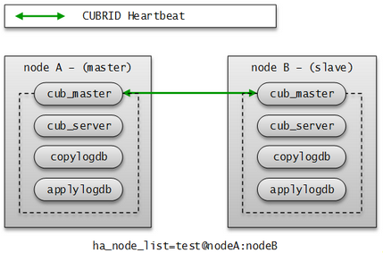
failover와 failback¶
failover란, 마스터 노드에 장애가 발생하여 서비스를 제공할 수 없는 상태가 되면 우선순위가 가장 높은 슬레이브 노드가 자동으로 마스터 노드가 되는 것이다. 마스터 프로세스는 수집한 CUBRID HA 그룹 내의 노드들의 정보를 바탕으로 스코어를 계산하여 적절한 시점에 해당 프로세스가 속한 노드의 상태를 마스터 노드로 변경하고, 관리 프로세스에 변경된 상태를 전파한다.
failback은 마스터 노드였던 장애 노드가 복구되면 자동으로 다시 마스터 노드가 되는 것이며, CUBRID HA는 서버의 failback을 지원하지 않는다.

heartbeat 메시지가 정상적으로 전달되지 않으면 failover가 일어나므로, 네트워크가 불안정한 환경에서는 장애가 발생하지 않아도 failover가 일어날 수 있다. 이와 같은 상황에서 failover가 일어나는 것을 막기 위해 ha_ping_hosts 를 설정할 수 있다. ha_ping_hosts 를 설정하면, heartbeat 메시지가 정상적으로 전달되지 못했을 때 ha_ping_hosts 로 설정한 노드로 ping 메시지를 보내서 원인이 네트워크 불안정인지 확인하는 절차를 거친다. ha_ping_hosts 설정에 대한 좀 더 자세한 설명은 cubrid_ha.conf 를 참고한다.
브로커 모드¶
브로커는 DB 서버에 Read Write, Read Only, Standby Only 이렇게 세 가지 모드 중 한 가지로 접속할 수 있으며, 사용자가 브로커 모드를 설정할 수 있다.
브로커는 DB 서버 연결 순서에 의해 연결을 시도하여 자신의 모드에 맞는 DB 서버를 선택하여 연결한다. 조건이 맞지 않아 연결되지 않으면 다음 순서의 연결을 시도하고, 모든 순서를 수행해도 적절한 DB 서버를 찾지 못하면 해당 브로커는 DB 서버 연결에 실패한다.
브로커 모드 설정 방법은 cubrid_broker.conf를 참고한다.
DB 서버 연결은 cubrid_broker.conf의 PREFERRED_HOSTS, CONNECT_ORDER와 MAX_NUM_DELAYED_HOSTS_LOOKUP 파라미터의 영향을 받는다. 이들에 의한 영향은 브로커와 DB 연결을 참고한다.
다음은 위의 파라미터들을 설정하지 않은 경우에 대한 설명이다.
Read Write
“ACCESS_MODE=RW”
읽기, 쓰기 서비스를 제공하는 브로커이다. 이 브로커는 일반적으로 액티브 서버에 연결하며, 연결 가능한 액티브 서버가 없으면 일시적으로 스탠바이 서버에 연결한다. 따라서 Read Write 브로커는 일시적으로 스탠바이 서버와 연결될 수 있다.
일시적으로 스탠바이 서버와 연결되면 트랜잭션이 끝날 때마다 스탠바이 서버와 연결을 끊고, 다음 트랜잭션이 시작되면 다시 액티브 서버와 연결을 시도한다. 스탠바이 서버와 연결되면 읽기 서비스만 가능하며, 쓰기 요청에 대해서는 서버에서 오류가 발생한다.
다음 그림은 db-host 설정을 통해 호스트에 연결하는 예이다.
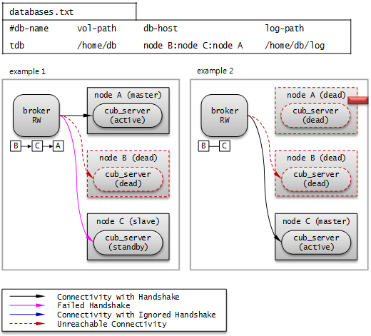
databases.txt의 db-host가 node B:node C:node A 순이므로, B, C, A 순으로 접속을 시도한다. 이때 db-host에 명시된 “node B:node C:node A”는 /etc/hosts 파일에 정의된 실제 호스트 이름이다.
Example 1. node B 는 비정상 종료된 상태이고, node C 는 standby 상태이며, node A 는 active 상태이다. 따라서 최종적으로 node A 와 연결한다.
Example 2. node B 는 비정상 종료된 상태이고, node C 는 active 상태이다. 따라서 최종적으로 node C 와 연결한다.
Read Only
“ACCESS_MODE=RO”
읽기 서비스를 제공하는 브로커이다. 이 브로커는 가능한 스탠바이 서버에 연결하며, 스탠바이 서버가 없으면 액티브 서버에 연결한다. 따라서 Read Only 브로커는 일시적으로 액티브 서버와 연결될 수 있다.
액티브 서버와 연결된 후 RECONNECT_TIME 설정 시간이 지나면 연결을 끊고 재연결을 시도한다. 또는 cubrid broker reset 명령을 실행하여 기존 연결을 끊고 새롭게 스탠바이 서버에 연결할 수 있다. Read Only 브로커에 쓰기 요청이 전달되면 브로커에서 오류가 발생하므로, 액티브 서버와 연결되어도 읽기 서비스만 가능하다.
다음 그림은 db-host 설정을 통해 호스트에 연결하는 예이다.

databases.txt의 db-host가 node A:node B:node C 순이므로, A, B, C 순으로 접속을 시도한다. 이때 db-host에 명시된 “node A:node B:node C”는 /etc/hosts 파일에 정의된 실제 호스트 이름이다.
Example 1. node A 는 active 상태이고, node B 는 standby 상태이다. 따라서 최종적으로 node B 와 연결된다.
Example 2. node A 는 active 상태이고, node B 는 비정상 종료된 상태이며, node C 는 standby 상태이다. 따라서 최종적으로 node C 와 연결된다.
Example 3. node A 는 active 상태이고, node B 와 node C 는 비정상 종료된 상태이다. 따라서 최종적으로 node A 와 연결된다.
Standby Only
“ACCESS_MODE=SO”
읽기 서비스를 제공하는 브로커이다. 이 브로커는 스탠바이 서버에 연결하며, 스탠바이 서버가 없으면 서비스를 제공하지 않는다.
다음 그림은 db-host 설정을 통해 호스트에 연결하는 예이다.

databases.txt의 db-host가 node A:node B:node C 순이므로, A, B, C 순으로 접속을 시도한다. 이때 db-host에 명시된 “node A:node B:node C”는 /etc/hosts 파일에 정의된 실제 호스트 이름이다.
Example 1. node A 는 active 상태이고, node B 는 standby 상태이다. 따라서 최종적으로 node B 와 연결된다.
Example 2. node A 는 active 상태이고, node B 는 비정상 종료된 상태이며, node C 는 standby 상태이다. 따라서 최종적으로 node C 와 연결된다.
Example 3. node A 는 active 상태이고, node B 와 node C 는 비정상 종료된 상태이다. 따라서 최종적으로 어떤 노드와도 연결되지 않는다. 이 부분이 Read Only 브로커와의 차이점이다.
CUBRID HA 기능¶
서버 이중화¶
서버 이중화란 CUBRID HA 기능을 제공하기 위해 물리적인 하드웨어 장비를 중복으로 구성하여 시스템을 구축하는 것이다. 이러한 구성을 통해 하나의 장비에 장애가 발생해도 응용 프로그램에서는 지속적인 서비스를 제공할 수 있다.
서버 failover
브로커는 서버의 접속 순서를 정의하고 그 순서에 따라 서버에 접속한다. 접속한 서버에 장애가 발생하면 브로커는 다음 순위로 설정된 서버에 접속하며, 응용 프로그램에서는 별도의 처리가 필요 없다. 브로커가 다음 서버에 접속할 때의 동작은 브로커의 모드에 따라 다를 수 있다. 서버의 접속 순서 및 브로커 모드의 설정 방법은 cubrid_broker.conf를 참고한다.
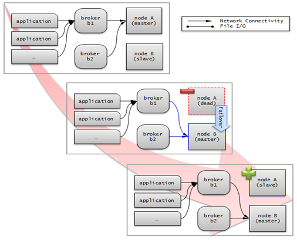
서버 failback
CUBRID HA는 자동으로 서버 failback을 지원하지 않는다. 따라서 failback을 수동으로 적용하려면 비정상 종료되었던 마스터 노드를 복구하여 슬레이브 노드로 구동한 후, failover로 인해 슬레이브에서 마스터로 역할이 바뀐 노드를 의도적으로 종료하여 다시 각 노드의 역할을 서로 바꾼다.
예를 들어 nodeA가 마스터, nodeB가 슬레이브일 때 failover 이후에는 역할이 바뀌어 nodeB가 마스터, nodeA가 슬레이브가 된다. nodeB를 종료(cubrid heartbeat stop)한 후, nodeA가 마스터, 즉 노드 상태가 active로 바뀌었는지 확인(cubrid heartbeat status) 한다. 그리고 나서 nodeB를 시작(cubrid heartbeat start) 하면, nodeB는 슬레이브가 된다.
브로커 이중화¶
CUBRID는 3-tier DBMS로, 응용 프로그램과 데이터베이스 서버를 중계하는 역할을 수행하는 브로커라는 미들웨어가 있다. CUBRID HA 기능을 제공하기 위해 브로커도 물리적인 하드웨어를 중복으로 구성하여, 하나의 브로커에 장애가 발생해도 응용 프로그램에서는 지속적인 서비스를 제공할 수 있다.
브로커 이중화의 구성은 서버 이중화의 구성에 따라 결정되는 것이 아니며, 사용자의 선호에 맞게 변형이 가능하다. 또한, 별도의 장비로 분리가 가능하다.
브로커의 failover, failback 기능을 사용하려면 JDBC, CCI 또는 PHP의 접속 URL에 altHosts 속성을 추가해야 한다. 이에 대한 설명은 JDBC 설정, CCI 설정 또는 PHP 설정을 참고한다.
브로커를 설정하려면 cubrid_broker.conf 파일을 설정해야 하고, 데이터베이스 서버의 failover 순서를 설정하려면 databases.txt 파일을 설정해야 한다. 이에 대한 설명은 브로커 설정, 시작 및 확인을 참고한다.
다음은 2개의 Read Write(RW) 브로커를 구성한 예이다. application URL의 첫 번째 접속 브로커를 broker B1 으로 하고 두 번째 접속 브로커를 broker B2 로 설정하면, application이 broker B1 에 접속할 수 없는 경우 broker B2 에 접속하게 된다. 이후 broker B1 이 다시 접속 가능해지면 application은 broker B1 에 재접속하게 된다.
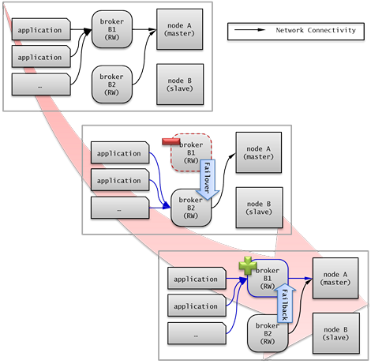
다음은 마스터 노드, 슬레이브 노드의 각 장비 내에 Read Write(RW) 브로커와 Read Only(RO) 브로커를 구성한 예이다. app1*과 *app2 URL의 첫 번째 접속은 각각 broker A1 (RW), broker B2 (RO) 이고, 두 번째 접속(altHosts)은 각각 broker A2 (RO), broker B1 (RW)이다. nodeA 를 포함한 장비가 고장나면, app1*과 *app2*는 *nodeB 를 포함한 장비의 브로커에 접속한다.
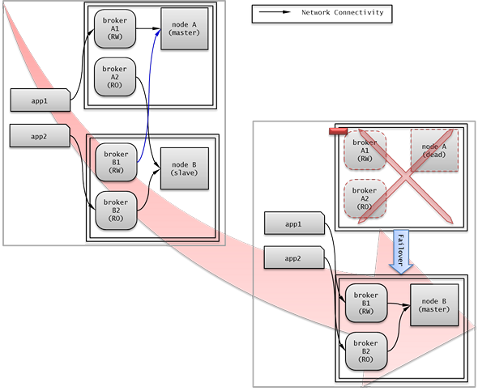
다음은 브로커 장비를 별도로 구성하여 Read Write 브로커 한 개, Preferred Host Read Only 브로커 두 개를 두고, 한 개의 마스터 노드와 두 개의 슬레이브 노드를 구성한 예이다. Preferred Host Read Only 브로커들은 각각 nodeB 와 nodeC 에 연결함으로써 읽기 부하를 분산하였다.

브로커 failover
브로커 failover는 시스템 파라미터의 설정에 의해 자동으로 failover되는 것이 아니며, JDBC, CCI, PHP 응용 프로그램에서는 접속 URL의 altHosts에 브로커 호스트들을 설정해야 브로커 failover가 가능하다. 설정한 우선순위가 가장 높은 브로커에 접속하고, 접속한 브로커에 장애가 발생하면 접속 URL에 다음 순위로 설정한 브로커에 접속한다. 응용 프로그램에서는 접속 URL의 altHosts를 설정하는 것 외에는 별도의 처리가 필요 없으며, JDBC, CCI, PHP 드라이버 내부에서 처리한다.
브로커 failback
브로커 failover 이후 장애 브로커가 복구되면 기존 브로커와 접속을 끊고 이전에 연결했던 우선순위가 가장 높은 브로커에 다시 접속한다. 응용 프로그램에서는 별도의 처리가 필요 없으며, JDBC, CCI, PHP 드라이버 내부에서 처리한다. 브로커 failback을 수행하는 시간은 JDBC 접속 URL에 설정한 값을 따른다. 이에 대한 설명은 JDBC 설정을 참고한다.
로그 다중화¶
CUBRID HA는 CUBRID HA 그룹에 포함된 모든 노드에 트랜잭션 로그를 복사하고 이를 반영함으로써 CUBRID HA 그룹 내의 모든 노드를 동일한 DB로 유지한다. CUBRID HA의 로그 복사 구조는 마스터 노드와 슬레이브 노드 사이의 상호 복사 형태로, 전체 로그의 양이 많아지는 단점이 있으나 체인 형태의 복사 구조보다 구성 및 장애 처리 측면에서 유연하다는 장점이 있다.
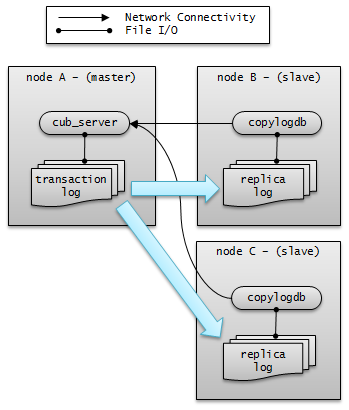
트랜잭션 로그를 복사하는 모드는 SYNC, ASYNC의 두 가지가 있으며, 사용자가 cubrid_ha.conf로 설정할 수 있다.
SYNC 모드
트랜잭션이 커밋되면, 발생한 트랜잭션 로그가 슬레이브 노드에 복사되어 파일에 저장되고 이에 대한 성공 여부를 전달받은 후에 트랜잭션 커밋이 완료된다. 따라서 ASYNC 모드에 비해 커밋 수행 시간이 길어질 수 있지만, failover가 발생해도 복사된 트랜잭션 로그는 스탠바이 서버에 반영되어 있음을 보장할 수 있으므로 가장 안전하다.
ASYNC 모드
트랜잭션이 커밋되면, 슬레이브 노드로 트랜잭션 로그가 전송 완료되었는지 확인하지 않고 커밋이 완료된다. 따라서 마스터 노드에서 커밋이 완료된 트랜잭션이 슬레이브 노드에 반영되지 못하는 경우가 발생할 수 있다.
ASYNC 모드는 로그 복제로 인한 커밋 수행 시간 지연은 거의 없으므로 성능상 유리하지만, 노드 간의 데이터가 완전히 일치하지 않을 수 있다.
Note
SEMISYNC 모드는 사용이 중단될 예정(deprecated)이며, 현재 SYNC 모드와 동일하게 동작한다.
빠른 시작¶
DB 생성 시점부터 마스터 노드와 슬레이브 노드를 1:1로 구축하는 방법에 대해 간단히 설명한다. 다양한 복제 구축 방법에 대한 자세한 방법은 복제 구축을 참고한다.
준비¶
구성도
CUBRID HA를 처음 접하는 사용자가 CUBRID HA를 쉽게 사용할 수 있도록 아래 그림과 같이 간단하게 구성된 CUBRID HA를 설정하는 과정을 설명한다.

사양
마스터 노드와 슬레이브 노드로 사용할 장비에는 Linux와 CUBRID 2008 R2.2 이상 버전이 설치되어 있어야 한다. CUBRID HA는 Windows를 지원하지 않는다.
CUBRID HA 구성 장비 사양
CUBRID 버전 |
OS |
|
|---|---|---|
마스터 노드용 장비 |
CUBRID 2008 R2.2 이상 |
Linux |
슬레이브 노드용 장비 |
CUBRID 2008 R2.2 이상 |
Linux |
Note
이 문서는 9.2 이상 버전의 HA 구성에 대해 설명하고 있으며, 그 이전 버전과는 설정 방법이 조금 다르므로 주의한다. 예를 들어, cubrid_ha.conf 는 2008 R4.0 이상 버전에서 도입되었다. ha_make_slavedb.sh는 2008 R4.1 Patch 2 이상 버전에서 도입되었다.
데이터베이스 생성 및 서버 설정¶
데이터베이스 생성
CUBRID HA에 포함할 데이터베이스를 모든 CUBRID HA 노드에서 동일하게 생성한다. 데이터베이스 생성 옵션은 필요에 따라 적절히 변경한다.
[nodeA]$ cd $CUBRID_DATABASES
[nodeA]$ mkdir testdb
[nodeA]$ cd testdb
[nodeA]$ mkdir log
[nodeA]$ cubrid createdb -L ./log testdb en_US
Creating database with 512.0M size. The total amount of disk space needed is 1.5G.
CUBRID 10.0
[nodeA]$
cubrid.conf
$CUBRID/conf/cubrid.conf 의 ha_mode 를 모든 HA 노드에 동일하게 설정한다. 특히, 로깅 관련 파라미터인 log_max_archives 와 force_remove_log_archives, HA 관련 파라미터인 ha_mode 의 설정에 주의한다.
# Service parameters
[service]
service=server,broker,manager
# Common section
[common]
service=server,broker,manager
# Server parameters
server=testdb
data_buffer_size=512M
log_buffer_size=4M
sort_buffer_size=2M
max_clients=100
cubrid_port_id=1523
db_volume_size=512M
log_volume_size=512M
# HA 구성 시 추가 (Logging parameters)
log_max_archives=100
force_remove_log_archives=no
# HA 구성 시 추가 (HA 모드)
ha_mode=on
cubrid_ha.conf
$CUBRID/conf/cubrid_ha.conf 의 ha_port_id, ha_node_list, ha_db_list 를 모든 HA 노드에 동일하게 설정한다. 다음 예에서 마스터 노드의 호스트 이름은 nodeA, 슬레이브 노드의 호스트 이름은 nodeB라고 가정한다.:
[common]
ha_port_id=59901
ha_node_list=cubrid@nodeA:nodeB
ha_db_list=testdb
ha_copy_sync_mode=sync:sync
ha_apply_max_mem_size=500
databases.txt
$CUBRID_DATABASES/databases.txt ($CUBRID_DATABASES 가 설정 안 된 경우 $CUBRID/databases/databases.txt)의 db-host에 마스터 노드와 슬레이브 노드의 호스트 이름을 설정(nodeA:nodeB)한다.
#db-name vol-path db-host log-path lob-base-path
testdb /home/cubrid/DB/testdb nodeA:nodeB /home/cubrid/DB/testdb/log file:/home/cubrid/DB/testdb/lob
CUBRID HA 시작 및 확인¶
CUBRID HA 시작
CUBRID HA 그룹 내의 각 노드에서 cubrid heartbeat start를 수행한다. cubrid heartbeat start 를 가장 먼저 수행한 노드가 마스터 노드가 되므로 유의해야 한다. 이하의 예에서 마스터 노드의 호스트 이름은 nodeA, 슬레이브 노드의 호스트 이름은 nodeB라고 가정한다.
마스터 노드
[nodeA]$ cubrid heartbeat start
슬레이브 노드
[nodeB]$ cubrid heartbeat start
CUBRID HA 상태 확인
CUBRID HA 그룹 내의 각 노드에서 cubrid heartbeat status를 수행하여 구성 상태를 확인한다.
[nodeA]$ cubrid heartbeat status
@ cubrid heartbeat list
HA-Node Info (current nodeA-node-name, state master)
Node nodeB-node-name (priority 2, state slave)
Node nodeA-node-name (priority 1, state master)
HA-Process Info (nodeA 9289, state nodeA)
Applylogdb testdb@localhost:/home1/cubrid1/DB/testdb_nodeB.cub (pid 9423, state registered)
Copylogdb testdb@nodeB-node-name:/home1/cubrid1/DB/testdb_nodeB.cub (pid 9418, state registered)
Server testdb (pid 9306, state registered_and_active)
[nodeA]$
CUBRID HA 그룹 내의 각 노드에서 cubrid changemode 유틸리티를 이용하여 서버의 상태를 확인한다.
마스터 노드
[nodeA]$ cubrid changemode testdb@localhost The server 'testdb@localhost''s current HA running mode is active.
슬레이브 노드
[nodeB]$ cubrid changemode testdb@localhost The server 'testdb@localhost''s current HA running mode is standby.
CUBRID HA 동작 여부 확인
마스터 노드의 액티브 서버에서 쓰기를 수행한 후 슬레이브 노드의 스탠바이 서버에 정상적으로 반영되었는지 확인한다. HA 환경에서 CSQL 인터프리터로 각 노드에 접속하려면, 데이터베이스 이름 뒤에 접속 대상 호스트 이름을 반드시 지정해야 한다(“@<호스트 이름>”). 호스트 이름을 localhost로 지정하면, 로컬 노드에 접속하게 된다.
Warning
복제가 정상적으로 수행되기 위해서는 테이블을 생성할 때 기본키(primary key)가 반드시 존재해야 한다는 점을 주의한다
마스터 노드
[nodeA]$ csql -u dba testdb@localhost -c "create table abc(a int, b int, c int, primary key(a));" [nodeA]$ csql -u dba testdb@localhost -c "insert into abc values (1,1,1);" [nodeA]$
슬레이브 노드
[nodeB]$ csql -u dba testdb@localhost -l -c "select * from abc;" === <Result of SELECT Command in Line 1> === <00001> a: 1 b: 1 c: 1 [nodeB]$
브로커 설정, 시작 및 확인¶
브로커 설정
데이터베이스 failover 시 정상적인 서비스를 위해서 databases.txt 의 db-host 항목에 데이터베이스의 가용 노드를 설정해야 한다. 그리고 cubrid_broker.conf 의 ACCESS_MODE 를 설정하는데, 이를 생략하면 기본값인 Read Write 모드로 설정된다. 브로커를 별도의 장비로 분리하는 경우 브로커 장비에 cubrid_broker.conf 와 databases.txt 를 반드시 설정해야 한다.
databases.txt
#db-name vol-path db-host log-path lob-base-path testdb /home1/cubrid1/CUBRID/testdb nodeA:nodeB /home1/cubrid1/CUBRID/testdb/log file:/home1/cubrid1/CUBRID/testdb/lob
cubrid_broker.conf
[%testdb_RWbroker] SERVICE =ON BROKER_PORT =33000 MIN_NUM_APPL_SERVER =5 MAX_NUM_APPL_SERVER =40 APPL_SERVER_SHM_ID =33000 LOG_DIR =log/broker/sql_log ERROR_LOG_DIR =log/broker/error_log SQL_LOG =ON TIME_TO_KILL =120 SESSION_TIMEOUT =300 KEEP_CONNECTION =AUTO CCI_DEFAULT_AUTOCOMMIT =ON # broker mode parameter ACCESS_MODE =RW
브로커 시작 및 상태 확인
브로커는 JDBC나 CCI, PHP 등의 응용에서 접근하기 위해 사용하는 것이다. 따라서 간단한 서버 이중화 동작을 시험하고 싶다면 브로커를 시작할 필요 없이 서버 프로세스에 직접 접속하는 CSQL 인터프리터만 실행해서 확인할 수 있다. 브로커는 cubrid broker start 를 실행하여 시작하고 cubrid broker stop 을 실행하여 정지한다.
다음은 브로커를 마스터 노드에서 실행한 예이다.
[nodeA]$ cubrid broker start
@ cubrid broker start
++ cubrid broker start: success
[nodeA]$ cubrid broker status
@ cubrid broker status
% testdb_RWbroker
---------------------------------------------------------
ID PID QPS LQS PSIZE STATUS
---------------------------------------------------------
1 9532 0 0 48120 IDLE
응용 프로그램 설정
응용 프로그램이 연결할 브로커의 호스트 이름(nodeA_broker, nodeB_broker)과 포트를 연결 URL에 명시한다. 브로커와의 연결 장애가 발생한 경우 다음으로 연결을 시도할 브로커는 altHosts 속성에 명시한다. 아래는 JDBC 프로그램의 예이며, CCI, PHP에 대한 예와 자세한 설명은 CCI 설정, PHP 설정 을 참고한다.
Connection connection = DriverManager.getConnection("jdbc:CUBRID:nodeA_broker:33000:testdb:::?charSet=utf-8&altHosts=nodeB_broker:33000", "dba", "");
환경 설정¶
다음은 CUBRID HA 기능을 수행하기 위해 필요한 환경 설정에 대한 설명이다. 브로커와 DB 사이의 연결 절차에 대한 자세한 설명은 브로커와 DB 연결을 참고한다.
cubrid.conf¶
cubrid.conf 파일은 $CUBRID/conf 디렉터리에 위치하며, CUBRID의 전반적인 설정 정보를 담고 있다. 여기에서는 cubrid.conf 중 CUBRID HA가 사용하는 파라미터를 설명한다.
HA 여부¶
ha_mode
CUBRID HA 기능을 설정하는 파라미터이다. 기본값은 off 이다. CUBRID HA 기능은 Windows를 지원하지 않고 Linux에서만 사용할 수 있으므로 이 값은 Linux용 CUBRID에서만 의미가 있다.
off : CUBRID HA 기능을 사용하지 않는다.
on : CUBRID HA 기능을 사용하며, 해당 노드는 failover의 대상이 된다.
replica : CUBRID HA 기능을 사용하며, 해당 노드는 failover의 대상이 되지 않는다.
ha_mode 가 on 이면 cubrid_ha.conf 를 읽어 CUBRID HA를 설정한다.
이 파라미터는 동적으로 변경할 수 없으며, 변경하면 해당 노드를 다시 시작해야 한다.
로깅¶
log_max_archives
보존할 보관 로그 파일의 최소 개수를 설정하는 파라미터이다. 최소값은 0이며 기본값은 INT_MAX (2147483647)이다. CUBRID 설치 시 cubrid.conf에는 0으로 설정되어 있다. 이 파라미터의 동작은 force_remove_log_archives의 영향을 받는다.
force_remove_log_archives의 설정값이 no이면, 활성화된 트랜잭션이 참조하고 있는 기존 보관 로그 파일 또는 HA 환경에서 슬레이브 노드에 반영되지 않은 마스터 노드의 보관 로그 파일이 삭제되지 않는다. 이에 대한 자세한 내용은 아래의 force_remove_log_archives를 참고한다.
log_max_archives에 대한 자세한 내용은 로깅 관련 파라미터를 참고한다.
force_remove_log_archives
ha_mode 를 on으로 설정하여 HA 환경을 구축하려면 force_remove_log_archives 를 no로 설정하여 HA 관련 프로세스에 의해 사용할 보관 로그(archive log)를 항상 유지하는 것을 권장한다.
force_remove_log_archives를 yes로 설정하면 HA 관련 프로세스가 사용할 보관 로그 파일까지 삭제될 수 있고, 이로 인해 데이터베이스 복제 노드 간 데이터 불일치가 발생할 수 있다. 이러한 위험성을 감수하더라도 디스크의 여유 공간을 유지하고 싶다면 force_remove_log_archives를 yes로 설정한다.
force_remove_log_archives에 대한 자세한 내용은 로깅 관련 파라미터를 참고한다.
Note
2008 R4.3 버전부터, 레플리카 노드에서는 force_remove_log_archives 값의 설정과 무관하게 log_max_archives 파라미터에 설정된 개수의 보관 로그 파일을 제외하고는 항상 삭제한다.
접속¶
max_clients
데이터베이스 서버에 동시에 연결할 수 있는 클라이언트의 최대 수를 지정하는 파라미터이다. 기본값은 100이다.
CUBRID HA 기능을 사용하면 기본적으로 복제 로그 복사 프로세스와 복제 로그 반영 프로세스가 구동되므로, 해당 노드를 제외한 CUBRID HA 그룹 내 노드 수의 두 배를 고려하여 설정해야 한다. 또한 failover가 일어날 때 다른 노드에 접속하고 있던 클라이언트가 해당 노드에 접속할 수 있으므로 이를 고려해야 한다.
max_clients에 대한 자세한 내용은 접속 관련 파라미터를 참고한다.
노드 간 반드시 값이 동일해야 하는 시스템 파라미터
log_buffer_size : 로그 버퍼 크기. 서버와 로그를 복사하는 copylogdb 간 프로토콜에 영향을 주는 부분이므로 반드시 동일해야 한다.
log_volume_size : 로그 볼륨 크기. CUBRID HA는 원본 트랜잭션 로그와 복제 로그의 형태와 내용이 동일하므로 반드시 동일해야 한다. 그 외 각 노드에서 별도로 DB를 생성하는 경우 cubrid createdb 옵션(–db-volume-size, –db-page-size, –log-volume-size, –log-page-size 등)이 동일해야 한다.
cubrid_port_id : 서버와의 연결 생성을 위한 TCP 포트 번호. 서버와 로그를 복사하는 copylogdb 의 연결을 위해 반드시 동일해야 한다.
HA 관련 파라미터 : cubrid_ha.conf에 포함된 HA 관련 파라미터는 기본적으로 동일해야 하나, 아래 파라미터는 예외적으로 다르게 설정할 수 있다.
노드에 따라 다르게 설정할 수 있는 파라미터
레플리카 노드의 ha_mode 파라미터
ha_copy_sync_mode 파라미터
ha_ping_hosts 파라미터
예시
다음은 cubrid.conf 설정의 예이다. 특히, 로깅 관련 파라미터인 log_max_archives 와 force_remove_log_archives, HA 관련 파라미터인 ha_mode 의 설정에 주의한다.
# Service Parameters
[service]
service=server,broker,manager
# Server Parameters
server=testdb
data_buffer_size=512M
log_buffer_size=4M
sort_buffer_size=2M
max_clients=200
cubrid_port_id=1523
db_volume_size=512M
log_volume_size=512M
# HA 구성 시 추가 (Logging parameters)
log_max_archives=100
force_remove_log_archives=no
# HA 구성 시 추가 (HA 모드)
ha_mode=on
log_max_archives=100
cubrid_ha.conf¶
cubrid_ha.conf 파일은 $CUBRID/conf 디렉터리에 위치하며, CUBRID의 HA 기능의 전반적인 설정 정보를 담고 있다. CUBRID HA 기능은 Windows를 지원하지 않고 Linux에서만 사용할 수 있으므로 이 값은 Linux용 CUBRID에서만 의미가 있다.
브로커와 DB 사이의 연결 절차에 대한 자세한 설명은 브로커와 DB 연결을 참고한다.
노드¶
ha_node_list
CUBRID HA 그룹 내에서 사용할 그룹 이름과 failover의 대상이 되는 멤버 노드들의 호스트 이름을 명시한다. @ 구분자로 나누어 @ 앞이 그룹 이름, @ 뒤가 멤버 노드들의 호스트 이름이다. 여러 개의 호스트 이름은 쉼표(,) 또는 콜론(:)으로 구분한다. 기본값은 localhost@localhost 이다.
Note
이 파라미터에서 명시한 멤버 노드들의 호스트 이름은 IP로 대체할 수 없으며, 사용자는 반드시 /etc/hosts 에 등록되어 있는 것을 사용해야 한다.
호스트 이름이 제대로 설정되지 않은 경우 server.err 에러 로그 파일에 다음과 같은 메시지가 출력된다.
Time: 04/10/12 17:49:45.030 - ERROR *** file ../../src/connection/tcp.c, line 121 ERROR CODE = -353 Tran = 0, CLIENT = (unknown):(unknown)(-1), EID = 1 Cannot make connection to master server on host "Wrong_HOST_NAME".... Connection timed out
ha_mode 를 on 으로 설정한 노드는 ha_node_list 에 해당 노드가 반드시 포함되어 있어야 한다. CUBRID HA 그룹 내의 모든 노드는 ha_node_list 의 값이 동일해야 한다. failover가 일어날 때 이 파라미터에 설정된 순서에 따라 마스터 노드가 된다.
이 파라미터는 동적으로 변경할 수 있으며, 변경하면 cubrid heartbeat reload를 실행해야 한다.
ha_replica_list
CUBRID HA 그룹 내에서 사용할 그룹 이름과 레플리카 노드 이름, 즉 failover의 대상이 되지 않는 멤버 노드들의 호스트 이름을 명시한다. 레플리카 노드를 구성하지 않는 경우에는 지정할 필요가 없다. @ 구분자로 나누어 @ 앞이 그룹 이름, @ 뒤가 멤버 노드들의 호스트 이름이다. 여러 개의 호스트 이름은 쉼표(,) 또는 콜론(:)으로 구분한다. 기본값은 NULL 이다.
그룹 이름은 ha_node_list 에서 명시한 이름과 같아야 한다. 이 파라미터에서 명시하는 멤버 노드들의 호스트 이름 및 해당 노드의 호스트 이름을 지정할 때는 반드시 /etc/hosts 에 등록되어 있는 것을 사용해야 한다. ha_mode 를 replica 로 설정한 노드는 ha_replica_list 에 해당 노드가 반드시 포함되어 있어야 한다. CUBRID HA 그룹 내의 모든 노드는 ha_replica_list 의 값이 동일해야 한다.
이 파라미터는 동적으로 변경할 수 있으며, 변경하면 cubrid heartbeat reload를 실행해야 한다.
Note
이 파라미터에서 명시한 멤버 노드들의 호스트 이름은 IP로 대체할 수 없으며, 사용자는 반드시 /etc/hosts 에 등록되어 있는 것을 사용해야 한다.
ha_db_list
CUBRID HA 모드로 구동할 데이터베이스 이름을 명시한다. 기본값은 NULL 이다. 여러 개의 데이터베이스 이름은 쉼표(,) 또는 콜론(:)으로 구분한다.
Note
이 파라미터에서 명시한 멤버 노드들의 호스트 이름은 IP로 대체할 수 없으며, 사용자는 반드시 /etc/hosts 에 등록되어 있는 것을 사용해야 한다.
접속¶
ha_port_id
CUBRID HA 그룹 내의 노드들이 heartbeat 메시지를 주고 받으며 노드 장애를 감지할 때 사용할 UDP 포트 번호를 명시한다. 기본값은 59901 이다.
서비스 환경에 방화벽이 있으면, 설정한 포트 값이 방화벽을 통과하도록 방화벽을 설정해야 한다.
ha_ping_hosts
슬레이브 노드에서 failover가 시작되는 순간 연결을 확인하여 네트워크에 의한 failover인지 확인할 때 사용할 호스트를 명시한다. 기본값은 NULL 이다. 여러 개의 호스트 이름은 쉼표(,) 또는 콜론(:)으로 구분한다.
이 파라미터에서 명시한 멤버 노드들의 호스트 이름은 IP로 대체할 수 있으며, 호스트 이름을 사용하는 경우에는 반드시 /etc/hosts 에 등록되어 있어야 한다.
CUBRID는 1시간 주기로 ha_ping_hosts에 명시된 호스트를 점검하여 모든 호스트가 문제 있을 경우 일시적으로 핑 체크(ping check)를 중지하고 5분 단위로 해당 호스트들이 정상화되었는지 검사한다.
이 파라미터를 설정하면 불안정한 네트워크로 인해 상대 마스터 노드가 비정상 종료된 것으로 오인한 슬레이브 노드가 마스터 노드로 역할이 변경되면서 동시에 두 개의 마스터 노드가 존재하게 되는 split-brain 현상을 방지할 수 있다.
복제¶
ha_copy_sync_mode
트랜잭션 로그의 복사본인 복제 로그를 저장하는 모드를 설정한다. 기본값은 SYNC이다.
SYNC, ASYNC를 값으로 설정할 수 있다. ha_node_list에 지정한 노드의 수만큼 설정해야 하고 순서가 같아야 한다. 쉼표(,) 또는 콜론(:)으로 구분한다. 레플리카 노드는 이 값의 설정과 관계없이 항상 ASNYC 모드로 동작한다.
자세한 내용은 로그 다중화 를 참고한다.
ha_copy_log_base
복제 로그를 저장할 위치를 지정한다. 기본값은 $CUBRID_DATABASES/<db_name>_<host_name>이다.
자세한 내용은 로그 다중화를 참고한다.
ha_copy_log_max_archives
복제 로그의 최대 보존 개수를 지정한다. 기본값은 1이다. 하지만, 복제 로그가 지정한 개수를 초과하더라도, 데이터베이스에 반영되지 않은 복제 로그 파일은 삭제되지 않는다.
불필요한 디스크의 공간 낭비를 방지하기 위해 이 값을 기본값인 1로 유지할 것을 권장한다.
ha_apply_max_mem_size
CUBRID HA의 복제 로그 반영 프로세스가 사용할 수 있는 최대 메모리를 설정한다. 기본값은 500 (단위: MB)이며, 최대값은 INT_MAX (2147483647)이다. 이 값을 시스템이 허용하는 크기보다 너무 크게 설정하면 메모리 할당에 실패하면서 HA 복제 반영 프로세스가 오동작을 일으킬 수 있으므로, 메모리 자원이 설정한 값을 충분히 사용할 수 있는지 확인한 후 설정하도록 한다.
ha_applylogdb_ignore_error_list
CUBRID HA의 복제 로그 반영 프로세스에서 에러가 발생해도 이를 무시하고 계속 복제를 진행하기 위해 이 값을 설정한다. 쉼표(,)로 구분하여 무시할 에러 코드를 나열한다. 이 설정 값은 높은 우선순위를 가지므로, ha_applylogdb_retry_error_list 파라미터나 “재시도 에러 리스트”에 의해 설정된 에러 코드와 값이 겹치면 이들을 무시하고 해당 에러를 유발한 작업을 재시도하지 않는다. “재시도 에러 리스트”는 아래 ha_applylogdb_retry_error_list 의 설명을 참고한다.
ha_applylogdb_retry_error_list
CUBRID HA의 복제 로그 반영 프로세스에서 에러가 발생하면 해당 에러를 유발한 작업이 성공할 때까지 반복적으로 재시도하기 위해 이 값을 설정한다. 쉼표(,)로 구분하여 재시도할 에러 코드를 나열한다. 이 값을 설정하지 않아도 기본으로 설정된 “재시도 에러 리스트”는 다음 표와 같다. 하지만 이 값들이 ha_applylogdb_ignore_error_list 에 존재하면 에러를 무시하고 계속 복제를 진행한다.
재시도 에러 리스트
에러 코드 이름
에러 코드
ER_LK_UNILATERALLY_ABORTED
-72
ER_LK_OBJECT_TIMEOUT_SIMPLE_MSG
-73
ER_LK_OBJECT_TIMEOUT_CLASS_MSG
-74
ER_LK_OBJECT_TIMEOUT_CLASSOF_MSG
-75
ER_LK_PAGE_TIMEOUT
-76
ER_PAGE_LATCH_TIMEDOUT
-836
ER_PAGE_LATCH_ABORTED
-859
ER_LK_OBJECT_DL_TIMEOUT_SIMPLE_MSG
-966
ER_LK_OBJECT_DL_TIMEOUT_CLASS_MSG
-967
ER_LK_OBJECT_DL_TIMEOUT_CLASSOF_MSG
-968
ER_LK_DEADLOCK_CYCLE_DETECTED
-1021
ha_replica_delay
마스터와 레플리카 사이의 데이터 복제 반영 시간 간격을 지정한다. 지정한 시간만큼 CUBRID는 의도적으로 복제 반영을 지연한다. ms, s, min, h 단위를 지정할 수 있으며 각각 milliseconds, seconds, minutes, hours를 의미한다. 단위 생략 시 기본 단위는 밀리초(ms)이다. 기본값은 0이다.
ha_replica_time_bound
마스터 노드에서 파라미터로 지정한 시간까지 수행된 트랜잭션만 레플리카 노드에 반영한다. 포맷은 “YYYY-MM-DD hh:mi:ss”이며, 기본값은 없다.
Note
다음은 cubrid_ha.conf 설정의 예이다.
[common]
ha_node_list=cubrid@nodeA:nodeB
ha_db_list=testdb
ha_copy_sync_mode=sync:sync
ha_apply_max_mem_size=500
Note
다음은 멤버 노드의 호스트 이름이 nodeA 이고 IP 주소가 192.168.0.1일 때 /etc/hosts를 설정한 예이다.
127.0.0.1 localhost.localdomain localhost
192.168.0.1 nodeA
ha_delay_limit
ha_delay_limit은 CUBRID가 스스로 복제 지연 상태임을 판단하는 기준 시간이고 ha_delay_limit_delta는 복제 지연 시간에서 복제 지연 해제 시간을 뺀 값이다. 한번 복제 지연이라고 판단된 서버는 복제 지연 시간이 (ha_delay_limit - ha_delay_limit_delta) 이하로 낮아질 경우에 복제 지연이 해소되었다고 판단한다. 슬레이브 노드 또는 레플리카 노드가 복제 지연 여부를 판단하는 대상 서버, 즉 standby 상태의 DB 서버에 해당한다.
예를 들어 복제 지연 시간을 10분으로 설정하고 복제 지연 해제는 8분으로 하고 싶다면, ha_delay_limit의 값은 600s(또는 10min), ha_delay_limit_delta의 값은 120s(또는 2min)이다.
복제 지연으로 판단되면 CAS는 현재 접속 중인 standby DB가 작업 처리에 문제가 있다고 판단하고, 다른 standby DB로 재접속을 시도한다.
복제 지연으로 인해 우선 순위가 낮은 DB에 연결된 CAS는 cubrid_broker.conf의 RECONNECT_TIME 파라미터로 명시한 시간이 경과하면 복제 지연이 해소되었을 것으로 기대하여, 우선 순위가 높은 standby DB에 재접속을 시도한다.
ha_copy_log_timeout
위에 기술한 ha_delay_limit 을 참조하라.
ha_copy_log_timeout
어떤 노드의 데이터베이스 서버 프로세스가 상대방 노드의 복제 로그 복사 프로세스로부터 응답을 대기하는 최대 시간이다. 기본값은 5(초)이다. 이 값이 -1이면 무한 대기한다. 오직 SYNC 로그 복제 모드(ha_copy_sync_mode) 파라미터와 함께 작동한다.
ha_monitor_disk_failure_interval
이 파라미터 값에 설정한 시간마다 디스크 장애 여부를 판단한다. 기본값은 30초이며, 단위는 초이다.
ha_copy_log_timeout 파라미터의 값이 -1인 경우, ha_monitor_disk_failure_interval의 값은 무시되며 디스크 장애 여부를 판단하지 않는다.
ha_monitor_disk_failure_interval의 값이 ha_copy_log_timeout의 값보다 작게 설정된 경우, ha_copy_log_timeout + 20초의 시간마다 디스크 장애 여부를 판단한다.
ha_unacceptable_proc_restart_timediff
서버 프로세스의 비정상 상황이 지속되는 경우 서버 재시작이 무한 반복될 수 있고, 이런 경우를 유발하는 노드는 HA 구성에서 제외하는 것이 바람직하다. 비정상 상황이 지속되면 보통 짧은 시간 간격 이내에 서버가 재시작되므로, 이를 감지하기 위해 이 파라미터로 시간 간격을 명시한다. 명시한 시간 간격 이내에 서버가 재시작되면 CUBRID는 이 서버를 비정상으로 간주하고 해당 노드를 HA 구성에서 제외(demote)한다. 기본값은 2min이며, 단위를 지정하지 않으면 밀리초(msec)로 지정된다.
SQL 로깅¶
ha_enable_sql_logging
이 파라미터의 값이 yes이면 복제 로그 디렉터리(ha_copy_log_base) 이하의 sql_log 디렉터리 이하에 applylogdb 프로세스가 DB에 반영하는 SQL에 대한 로그 파일을 생성한다. 기본값은 no이다.
로그 파일 이름의 형식은 <db name>_<master hostname>.sql.log.<id>이며, <id>는 0부터 시작한다. ha_sql_log_max_size_in_mbytes에서 지정한 크기를 초과하면 <id>의 값이 하나 증가된 새로운 파일이 생성된다. 예를 들어, “ha_sql_log_max_size_in_mbytes=100”이면 demodb_nodeA.sql.log.0 파일이 100MB가 되면서 demodb_nodeA.sql.log.1이 새로 생성된다.
이 파라미터를 켜는 경우 SQL 로그 파일이 계속 쌓이므로, 사용자는 디스크 여유 공간을 확보하기 위해 로그 파일들을 직접 삭제해야 한다.
SQL 로그 형식은 다음과 같다.
INSERT/DELETE/UPDATE
-- 날짜 | SQL id | 샘플링을 위한 select문 길이 | 실제 변환된 SQL문 길이 -- 샘플링을 위한 select 실제 변환된 SQL 문
-- 2013-01-25 15:16:41 | 40083 | 33 | 114 -- SELECT * FROM [t1] WHERE "c1"=79186; INSERT INTO [t1]("c1", "c2", "c3") VALUES (79186,'b3beb3decd2a6be974',0);
DDL
-- 날짜 | SQL id | 0 | 실제 변환된 SQL문 길이 ddl 구문 (create table의 경우 dba 권한으로 생성된 테이블에 권한을 부여하는 grant문이 뒤따름)
-- 2013-01-25 14:22:59 | 1 | 0 | 50 create class t1 ( id integer, primary key (id) ); -- 2013-01-25 14:22:59 | 2 | 0 | 38 GRANT ALL PRIVILEGES ON [t1] TO public;
Warning
마스터 노드에서 트리거에 의해 수행된 작업이 SQL 로그 파일에 남게 되므로, 별도의 DB를 구축하면서 특정 시점부터 해당 SQL 로그를 반영하는 경우 트리거를 반드시 끈 상태로 적용해야 한다.
브로커 설정으로 트리거를 끄는 방법은 TRIGGER_ACTION을 참고한다.
CSQL 실행 시 트리거를 끄는 방법은
csql --no-trigger-action을 참고한다.
ha_sql_log_max_size_in_mbytes
applylogdb 프로세스가 DB에 반영하는 SQL이 로깅될 때 생성하는 파일의 최대 크기이다. 이 크기를 초과하면 새로운 파일이 생성된다.
cubrid_broker.conf¶
cubrid_broker.conf 파일은 $CUBRID/conf 디렉터리에 위치하며, 브로커의 전반적인 설정 정보를 담고 있다. 여기에서는 cubrid_broker.conf 중 CUBRID HA가 사용하는 파라미터를 설명한다.
브로커와 DB 사이의 연결 절차에 대한 자세한 설명은 브로커와 DB 연결을 참고한다.
접속 대상¶
ACCESS_MODE
브로커의 모드를 설정한다. 기본값은 RW 이다.
RW (Read Write), RO (Read Only), SO (Standby Only)를 값으로 설정할 수 있다. 자세한 내용은 브로커 모드를 참고한다.
REPLICA_ONLY
REPLICA_ONLY의 값이 ON이면 CAS가 레플리카에만 접속된다. 기본값은 OFF이다. REPLICA_ONLY의 값이 ON이고 ACCESS_MODE의 값이 RW이면 레플리카 DB에도 쓰기 작업을 수행할 수 있다.
접속 순서¶
CONNECT_ORDER
CAS가 연결할 호스트 순서를 결정할 때 $CUBRID_DATABASES/databases.txt의 db-host에 설정된 호스트에서 순서대로 연결을 시도할지 랜덤한 순서대로 연결을 시도할지를 지정하는 파라미터이다.
기본값은 SEQ이며 순서대로 연결을 시도한다. RANDOM이면 랜덤한 순서대로 연결을 시도한다. PREFERRED_HOSTS 파라미터 값이 주어지면 먼저 PREFERRED_HOSTS에 명시된 호스트의 순서대로 연결을 시도한 후 실패할 경우에만 db-host의 설정 값을 사용한다. 그리고 CONNECT_ORDER는 PREFERRED_HOSTS의 순서에는 영향을 주지 않는다.
한 곳으로 DB 접속이 집중되는 상황이 우려되는 경우 이 값을 RANDOM으로 설정한다.
PREFERRED_HOSTS
호스트 이름을 나열하여 연결할 순서를 지정한다. 기본값은 NULL이다.
여러 노드를 지정할 수 있으며 콜론(:)으로 구분한다. 먼저 PREFERRED_HOSTS 파라미터에 설정된 호스트 순서대로 연결을 시도한 후 $CUBRID_DATABASES/databases.txt에 설정된 호스트 순서대로 연결을 시도한다.
다음은 cubrid_broker.conf 설정의 예이다. localhost에 우선 접속하기 위해 PREFERRED_HOSTS를 localhost로 명시했다.
[%PHRO_broker]
SERVICE =ON
BROKER_PORT =33000
MIN_NUM_APPL_SERVER =5
MAX_NUM_APPL_SERVER =40
APPL_SERVER_SHM_ID =33000
LOG_DIR =log/broker/sql_log
ERROR_LOG_DIR =log/broker/error_log
SQL_LOG =ON
TIME_TO_KILL =120
SESSION_TIMEOUT =300
KEEP_CONNECTION =AUTO
CCI_DEFAULT_AUTOCOMMIT =ON
# Broker mode setting parameter
ACCESS_MODE =RO
PREFERRED_HOSTS =localhost
접속 제한¶
MAX_NUM_DELAYED_HOSTS_LOOKUP
databases.txt의 db-host에 여러 대의 DB 서버를 명시한 HA 환경에서 거의 모든 DB 서버에서 복제 지연이 발생하는 경우, MAX_NUM_DELAYED_HOSTS_LOOKUP 파라미터에서 명시한 대수의 복제 지연 서버까지만 연결 여부를 검토한 후 연결을 결정한다(어떤 DB 서버의 복제 지연 여부는 standby 상태의 호스트만을 대상으로 판단하며, ha_delay_limit 파라미터의 설정에 따라 결정됨). 또한 PREFERRED_HOSTS에는 MAX_NUM_DELAYED_HOSTS_LOOKUP이 적용되지 않는다.
예를 들어 db-host가 “host1:host2:host3:host4:host5”로 명시되고 “MAX_NUM_DELAYED_HOSTS_LOOKUP=2”일 때, 만약 호스트들의 상태는 다음과 같을 경우 :
host1 : active 상태
host2 : standby 상태, 복제 지연
host3 : 접속 불가
host4 : standby 상태, 복제 지연
host5 : standby 상태, 복제 지연 없음
이면 브로커는 먼저 복제 지연 상태인 2개의 호스트 host2 , host4 까지 접속을 시도하고, ho:1106st4 에 접속하는 것으로 결정한다.
이렇게 동작하는 이유는 MAX_NUM_DELAYED_HOSTS_LOOKUP에서 명시한 개수까지만 복제 지연이 있다면 이후의 호스트들에도 복제 지연이 있을 것이라는 가정을 하기 때문이며, 따라서 더 이상 뒤의 호스트에 대해 접속 시도를 하지 않고 복제 지연이 있지만 가장 마지막에 접속을 시도했던 호스트에 접속하기로 결정하는 것이다. 단, PREFERRED_HOSTS가 같이 명시되는 경우 PREFERRED_HOSTS에 명시된 모든 호스트들에 대해 접속을 먼저 시도한 후 다시 db-host 리스트의 처음부터 접속을 시도한다.
브로커가 DB에 접속하기 위한 단계는 1차 연결과 2차 연결로 나뉜다.
1차 연결: 브로커가 DB에 접속하기 위해 최초에 접속을 시도하는 단계. DB 상태(active/standby)와 복제 지연 여부를 확인.
먼저 PREFERRED_HOSTS의 호스트들에 접속을 시도한 후, databases.txt의 호스트들에 접속을 시도한다. 이때는 ACCESS_MODE에 따라 DB의 상태가 active인지, standby인지도 검사하여 접속을 결정한다.
2차 연결: 1차 연결 실패 후 실패한 위치에서부터 두번째로 접속을 시도하는 단계. DB 상태(active/standby)와 복제 지연 여부를 무시. 단, SO 브로커는 항상 standby DB에만 접속 허용.
이때는 DB의 상태(active/standby) 및 복제 지연 여부와 무관하게 접속이 가능하면 접속을 결정한다. 하지만 질의 수행 단계에서 에러가 발생할 수 있다. 예를 들어 ACCESS_MODE 가 RW인데 standby 상태의 서버에 접속하면 INSERT 질의 수행 시 에러가 발생한다. 에러 발생과는 무관하게, standby로 연결되어 트랜잭션이 수행된 이후에는 1차 연결을 다시 시도한다. 단, SO브로커는 절대로 active DB에 연결될 수 없다.
MAX_NUM_DELAYED_HOSTS_LOOKUP의 값에 따라 접속을 시도하는 호스트의 개수가 제한되는 방법은 다음과 같다:
MAX_NUM_DELAYED_HOSTS_LOOKUP=-1
이 파라미터를 지정하지 않은 것과 같으며, 기본값이다. 이 경우 1차 연결에서는 끝까지 복제 지연 여부와 DB의 상태를 검사하여 연결을 결정한다. 2차 연결에서는 복제 지연이 있더라도, 또는 원하는 DB 상태(active/standby)가 아니더라도 가장 마지막에 연결 가능했던 호스트에 연결한다.
MAX_NUM_DELAYED_HOSTS_LOOKUP=0
1차 연결에서 PREFERRED_HOSTS에만 연결을 시도한 후 2차 연결이 진행되며, 2차 연결에서는 복제 지연이 있는 DB 서버이거나 원하는 DB 상태(active/standby)가 아니더라도 연결을 시도한다. 즉, 2차 연결이므로 RW 브로커도 standby 호스트에 연결될 수 있으며, RO 브로커도 active 호스트에 연결될 수 있다. 단, SO 브로커는 절대로 active DB에 연결될 수 없다.
MAX_NUM_DELAYED_HOSTS_LOOKUP=n(>0)
지정된 개수의 복제 지연 호스트까지만 연결 시도한다. 1차 연결에서는 명시된 개수의 복제 지연 DB 서버까지 검사하고 난 이후, 2차 연결에서는 복제 지연이 있는 호스트에 연결한다.
재접속¶
RECONNECT_TIME
브로커가 PREFERRED_HOSTS가 아닌 DB 서버에 접속하려고 하거나, RO 브로커가 active DB 서버에 접속하려고 하거나, 브로커가 복제 지연 DB 서버에 접속하려는 경우, RECONNECT_TIME(기본값: 10분)을 초과하면 DB 서버에 재연결을 시도한다.
보다 자세한 내용은 RECONNECT_TIME을 참고한다.
databases.txt¶
databases.txt 파일은 $CUBRID_DATABASES (설정되어 있지 않은 경우 $CUBRID/databases) 디렉터리에 위치하며, db_hosts 값을 설정하여 브로커의 CAS가 접속을 시도하는 서버의 순서를 결정할 수 있다. 여러 노드를 설정하려면 콜론(:)으로 구분한다. cubrid_broker.conf의 CONNECT_ORDER 파라미터 값이 RANDOM이면 무작위한 순서로 접속 순서를 결정한다. 하지만 PREFERRED_HOSTS 파라미터 값이 설정된 경우 명시된 호스트로의 접속을 우선 시도한다.
다음은 databases.txt 설정의 예이다.
#db-name vol-path db-host log-path lob-base-path
testdb /home/cubrid/DB/testdb nodeA:nodeB /home/cubrid/DB/testdb/log file:/home/cubrid/DB/testdb/lob
JDBC 설정¶
JDBC에서 CUBRID HA 기능을 사용하려면 브로커(nodeA_broker)에 장애가 발생했을 때 다음으로 연결할 브로커(nodeB_broker)의 연결 정보를 연결 URL에 추가로 지정해야 한다. CUBRID HA를 위해 지정되는 속성은 장애가 발생했을 때 연결할 하나 이상의 브로커 노드 정보인 altHosts이다. 이에 대한 자세한 설명은 연결 설정를 참고한다.
다음은 JDBC 설정의 예이다.
Connection connection = DriverManager.getConnection("jdbc:CUBRID:nodeA_broker:33000:testdb:::?charSet=utf-8&altHosts=nodeB_broker:33000", "dba", "");
CCI 설정¶
CCI에서 CUBRID HA 기능을 사용하려면 브로커에 장애가 발생했을 때 연결할 브로커의 연결 정보를 연결 URL에 추가로 지정할 수 있는 cci_connect_with_url() 함수를 사용하여 브로커와 연결해야 한다. CUBRID HA를 위해 지정되는 속성은 장애가 발생했을 때 연결할 하나 이상의 브로커 노드 정보인 altHosts이다.
다음은 CCI 설정의 예이다.
con = cci_connect_with_url ("cci:CUBRID:nodeA_broker:33000:testdb:::?altHosts=nodeB_broker:33000", "dba", NULL);
if (con < 0)
{
printf ("cannot connect to database\n");
return 1;
}
PHP 설정¶
PHP에서 CUBRID HA 기능을 사용하려면 브로커에 장애가 발생했을 때 연결할 브로커의 연결 정보를 연결 URL에 추가로 지정할 수 있는 cubrid_connect_with_url 함수를 사용하여 브로커와 연결해야 한다. CUBRID HA를 위해 지정되는 속성은 장애가 발생했을 때 연결할 하나 이상의 브로커 노드 정보인 altHosts이다.
다음은 PHP 설정의 예이다.
<?php
$con = cubrid_connect_with_url ("cci:CUBRID:nodeA_broker:33000:testdb:::?altHosts=nodeB_broker:33000", "dba", NULL);
if ($con < 0)
{
printf ("cannot connect to database\n");
return 1;
}
?>
Note
altHosts를 설정하여 브로커 절체(failover)가 가능하도록 설정한 환경에서, 브로커 절체가 원활하게 되려면 URL에 disconnectOnQueryTimeout 값을 true 로 설정해야 한다.
이 값이 true면 질의 타임아웃 발생 시 응용 프로그램은 즉시 기존에 접속되었던 브로커와의 접속을 해제하고 altHosts에 지정한 브로커로 접속한다.
브로커와 DB 연결¶
HA 환경에서 브로커는 여러 개의 DB 서버 중 하나와 접속을 결정해야 한다. 이때 브로커와 DB 서버의 설정에 따라 어떤 DB 서버와 어떻게 접속할 것인지가 달라진다. 이 장에서는 HA 환경에서 설정에 따라 브로커가 DB 서버를 어떻게 선택하는지를 중심으로 살펴본다. 환경 설정에서 사용되는 각 파라미터들에 대한 설명은 환경 설정을 참고한다.
다음은 브로커와 DB가 연결될 때 사용되는 주요 파라미터들이다.
위치 |
설정 파일 |
파라미터 이름 |
설명 |
|---|---|---|---|
DB 서버 |
cubrid.conf |
ha_mode |
DB 서버의 HA 모드(on/off/replica). 기본값: off |
cubrid_ha.conf |
ha_delay_limit |
DB 서버에서 복제 지연 여부를 판단하는 복제 지연 기준이 되는 시간. |
|
ha_delay_limit_delta |
복제 지연 기준 시간에서 복제 지연 해소 시간을 뺀 시간. |
||
브로커 |
cubrid_broker.conf |
ACCESS_MODE |
브로커 모드(RW/RO/SO). 기본값: RW |
REPLICA_ONLY |
REPLICA 서버로만 연결 가능 여부(ON/OFF). 기본값: OFF |
||
PREFERRED_HOSTS |
databases.txt의 db-host에서 설정한 호스트보다 우선하여 여기에서 지정한 호스트에 연결 |
||
MAX_NUM_DELAYED_HOSTS_LOOKUP |
databases.txt에서 복제 지연으로 판단할 호스트의 개수. 명시한 개수의 호스트까지 복제 지연으로 판단되면 가장 마지막에 확인한 호스트와 연결.
|
||
RECONNECT_TIME |
적합하지 않은 DB 서버에 연결된 이후 재연결을 시도하는 시간. 기본값: 600s. 이 값이 0이면 재연결을 시도하지 않음. |
||
CONNECT_ORDER |
databases.txt에 설정된 호스트에서 순서대로 연결을 시도할지 랜덤한 순서대로 연결을 시도할지를 지정하는 파라미터(SEQ/RANDOM). 기본값: SEQ |
접속 절차¶
브로커가 DB 서버에 접속할 때, 1차 연결을 먼저 시도하고 실패하면 2차 연결을 시도한다.
1차 연결: DB 상태(active/standby)와 복제 지연 여부를 확인.
PREFERRED_HOSTS에 명시된 순서로 접속을 시도한다. ACCESS_MODE와 맞지 않는 상태의 DB 또는 복제 지연이 발생하는 DB에는 접속을 거부한다.
CONNECT_ORDER의 값에 따라 databases.txt에 명시된 순서 혹은 무작위로 접속을 시도한다. ACCESS_MODE에 따라 DB 서버의 상태를 확인하며, MAX_NUM_DELAYED_HOSTS_LOOKUP 개수까지 복제 지연 여부도 확인한다.
2차 연결: DB 상태(active/standby)와 복제 지연 여부를 무시. 단, SO 브로커는 항상 standby DB에만 접속 허용.
PREFERRED_HOSTS에 명시된 순서로 접속을 시도한다. DB 서버의 상태가 ACCESS_MODE와 맞지 않거나 DB에서 복제 지연이 발생하더라도 접속을 허용한다. 단, SO 브로커는 절대로 active DB에 연결될 수 없다.
CONNECT_ORDER의 값에 따라 databases.txt에 명시된 순서 혹은 무작위로 접속을 시도한다. DB 서버의 상태 및 복제 지연 여부와 무관하게 접속이 가능하면 된다.
파라미터 설정에 따른 동작의 예¶
다음은 파라미터 설정에 따른 동작의 예이다.
호스트 DB 상태
host1: active
host2: standby, 복제 지연
host3: standby, replica, 접속 불가
host4: standby, replica, 복제 지연
host5: standby, replica, 복제 지연
호스트 DB의 상태가 위와 같을 때, 설정에 따른 동작의 예는 다음과 같다.
설정에 따른 동작
2-1, 2-2, 2-3: 2로부터 (+)는 추가, (#)은 변경.
3-1, 3-2, 3-3: 3으로부터 (+)는 추가, (#)은 변경.
번호 |
설정 |
동작 |
|---|---|---|
1 |
|
1차 연결 시도 시 DB 상태가 active인지 확인한다.
PREFERRED_HOSTS에 접속하지 않았으므로 RECONNECT_TIME 시간이 지나면 재접속을 시도한다. |
2 |
|
1차 연결 시도 시 DB 상태가 standby인지 확인한다.
2차 연결 시도 시 DB 상태와 복제 지연 여부는 확인하지 않는다.
복제 지연 서버와 접속했으므로 RECONNECT_TIME 시간이 지나면 재접속을 시도한다. |
2-1 |
|
1차 연결 시도 시 DB 상태가 standby인지 확인한다.
2차 연결 시도 시 DB 상태와 복제 지연 여부는 확인하지 않는다.
active 서버와 접속했으므로 RECONNECT_TIME 시간이 지나면 재접속을 시도한다. |
2-2 |
|
1차 연결 시도 시 DB 상태가 standby인지 확인한다.
2차 연결 시도 시 DB 상태와 복제 지연 여부는 확인하지 않는다.
active 서버와 접속했으므로 RECONNECT_TIME 시간이 지나면 재접속을 시도한다. |
2-3 |
|
1차 연결 시도 시 DB 상태가 standby인지 확인한다.
2차 연결 시도 시 DB 상태와 복제 지연 여부는 확인하지 않는다.
복제 지연 서버와 접속했으므로 RECONNECT_TIME 시간이 지나면 재접속을 시도한다. |
3 |
|
1차 연결 시도 시 DB 상태가 standby인지 확인한다.
2차 연결 시도 시 DB 상태가 standby인지 확인하지만 복제 지연 여부는 확인하지 않는다.
복제 지연 서버와 접속했으므로 RECONNECT_TIME 시간이 지나면 재접속을 시도한다. |
3-1 |
|
1차 연결 시도 시 DB 상태가 standby인지 확인한다.
2차 연결 시도 시 DB 상태가 standby인지 확인하지만 복제 지연 여부는 확인하지 않는다.
복제 지연 서버와 접속했으므로 RECONNECT_TIME 시간이 지나면 재접속을 시도한다. |
3-2 |
|
1차 연결 시도 시 DB 상태가 standby인지 확인한다.
2차 연결 시도 시 DB 상태가 standby인지 확인하지만 복제 지연 여부는 확인하지 않는다.
복제 지연 서버와 접속했으므로 RECONNECT_TIME 시간이 지나면 재접속을 시도한다. |
3-3 |
|
1차 연결 시도 시 DB 상태가 standby인지 확인한다.
2차 연결 시도 시 DB 상태가 standby인지 확인하지만 복제 지연 여부는 확인하지 않는다.
복제 지연 서버와 접속했으므로 RECONNECT_TIME 시간이 지나면 재접속을 시도한다. |
구동 및 모니터링¶
cubrid heartbeat 유틸리티¶
cubrid heartbeat 명령은 줄여서 cubrid hb로도 실행할 수 있다.
start¶
해당 노드의 CUBRID HA 기능을 활성화하고 구성 프로세스(데이터베이스 서버 프로세스, 복제 로그 복사 프로세스, 복제 로그 반영 프로세스)를 모두 구동한다. cubrid heartbeat start를 실행하는 순서에 따라 마스터 노드와 슬레이브 노드가 결정되므로, 순서를 주의해야 한다.
사용법은 다음과 같다.
$ cubrid heartbeat start
HA 모드로 설정된 데이터베이스 서버 프로세스는 cubrid server start 명령으로 시작할 수 없다.
노드 내에서 특정 데이터베이스의 HA 구성 프로세스들(데이터베이스 서버 프로세스, 복제 로그 복사 프로세스, 복제 로그 반영 프로세스)만 구동하려면 명령의 마지막에 데이터베이스 이름을 지정한다. 예를 들어, 데이터베이스 testdb만 구동하려면 다음 명령을 사용한다.
$ cubrid heartbeat start testdb
stop¶
해당 노드의 CUBRID HA 기능을 비활성화하고 구성 프로세스(데이터베이스 서버 프로세스, 복제 로그 복사 프로세스, 복제 로그 반영 프로세스)를 모두 종료한다. 이 명령을 실행한 노드의 HA 기능은 종료되고 HA 구성에 있는 다음 순위의 슬레이브 노드로 failover가 일어난다.
사용법은 다음과 같다.
$ cubrid heartbeat stop
HA 모드로 설정된 데이터베이스 서버 프로세스는 cubrid server stop 명령으로 정지할 수 없다.
노드 내에서 특정 데이터베이스의 HA 구성 프로세스들(데이터베이스 서버 프로세스, 복제 로그 복사 프로세스, 복제 로그 반영 프로세스)만 정지하려면 명령의 마지막에 데이터베이스 이름을 지정한다. 예를 들어, 데이터베이스 testdb 를 정지하려면 다음 명령을 사용한다.
$ cubrid heartbeat stop testdb
CUBRID HA 기능을 즉각 비활성화하려면 “cubrid heartbeat stop” 명령에 -i 옵션을 추가한다. 이 옵션은 DB 서버 프로세스가 비정상적인 동작을 수행하고 있어 빠른 절체가 필요한 경우 사용한다.
$ cubrid heartbeat stop -i
or
$cubrid heartbeat stop --immediately
copylogdb¶
CUBRID HA 구성에서 특정 peer_node의 db_name에 대한 트랜잭션 로그를 복사하는 copylogdb 프로세스를 시작 또는 정지한다. 운영 도중 복제 재구축을 위해 로그 복사를 일시 정지했다가 재구동하고 싶은 경우 사용할 수 있다.
cubrid heartbeat copylogdb start 명령만 성공한 경우에도 노드 간 장애 감지 및 복구 기능이 수행되며, failover의 대상이 되어 슬레이브 노드인 경우 마스터 노드로 역할이 변경될 수 있다.
사용법은 다음과 같다.
$ cubrid heartbeat copylogdb <start|stop> [ -h <host-name> ] db_name peer_node
<host-name> : copylogdb 명령이 수행될 원격 호스트명
명령을 수행하는 노드가 nodeB 이고, peer_node 가 nodeA 라면, 다음과 같이 명령을 수행할 수 있다.
[nodeB]$ cubrid heartbeat copylogdb stop testdb nodeA
[nodeB]$ cubrid heartbeat copylogdb start testdb nodeA
copylogdb 프로세스의 시작/정지 시 cubrid_ha.conf 의 설정 정보를 사용하므로 한 번 정한 설정은 가급적 바꾸지 않을 것을 권장하며, 바꾸어야만 하는 경우 노드 전체를 재구동할 것을 권장한다.
applylogdb¶
CUBRID HA 구성에서 특정 peer_node의 db_name에 대한 트랜잭션 로그를 반영하는 applylogdb 프로세스를 시작 또는 정지한다. 운영 도중 복제 재구축을 위해 로그 반영을 일시 정지했다가 재구동하고 싶은 경우 사용할 수 있다.
cubrid heartbeat applylogdb start 명령만 성공한 경우에도 노드 간 장애 감지 및 복구 기능이 수행되며, failover의 대상이 되어 슬레이브 노드인 경우 마스터 노드로 역할이 변경될 수 있다.
사용법은 다음과 같다.
$ cubrid heartbeat applylogdb <start|stop> [ -h <host-name> ] db_name peer_node
<host-name>: appplylogdb 명령이 수행될 원격 호스트명
명령을 수행하는 노드가 nodeB이고, peer_node가 nodeA라면, 다음과 같이 명령을 수행할 수 있다.
[nodeB]$ cubrid heartbeat applylogdb stop testdb nodeA
[nodeB]$ cubrid heartbeat applylogdb start testdb nodeA
applylogdb 프로세스의 시작/정지 시 cubrid_ha.conf 의 설정 정보를 사용하므로 한 번 정한 설정은 가급적 바꾸지 않을 것을 권장하며, 바꾸어야만 하는 경우 노드 전체를 재구동할 것을 권장한다.
reload¶
cubrid_ha.conf에서 CUBRID HA 구성 정보를 다시 읽는다. 노드를 추가하거나 삭제하는 경우 사용하며, reload 명령 이후에 추가/삭제된 노드의 HA 복제 프로세스를 일괄적으로 구동/정지하려면 “cubrid heartbeat replication start/stop” 명령을 사용할 수 있다.
사용법은 다음과 같다.
$ cubrid heartbeat reload
변경할 수 있는 구성 정보는 ha_node_list와 ha_replica_list이다. reload 명령이 실행된 후 status 명령으로 노드의 재구성이 잘 반영되었는지 확인한다. 재구성에 실패한 경우 원인을 찾아 해소하도록 한다.
replication(또는 repl) start¶
특정 노드와 관련된 HA 프로세스(copylogdb/applylogdb)를 일괄 구동하기 위한 명령으로, 일반적으로 cubrid heartbeat reload 이후 추가된 노드의 HA 복제 프로세스들을 일괄적으로 시작하기 위해 실행한다.
replication 명령은 줄여서 repl로도 사용할 수 있다.
cubrid heartbeat repl start <node_name>
node_name: cubrid_ha.conf의 ha_node_list에 명시된 노드 이름 중 하나
replication(또는 repl) stop¶
특정 노드와 관련된 HA 프로세스(copylogdb/applylogdb)를 일괄 정지하기 위한 명령으로,일반적으로 cubrid heartbeat reload 이후 삭제된 노드의 HA 복제 프로세스들을 일괄적으로 정지하기 위해 실행한다.
replication 명령은 줄여서 repl로도 사용할 수 있다.
cubrid heartbeat repl stop <node_name>
node_name: cubrid_ha.conf의 ha_node_list에 명시된 노드 이름 중 하나
status¶
$ cubrid heartbeat status [-v] [ -h <host-name> ]
<host-name>: status 명령이 수행될 원격 호스트명
CUBRID HA 그룹 정보와 CUBRID HA 구성 요소의 정보를 확인할 수 있다. 사용법은 다음과 같다.
$ cubrid heartbeat status
@ cubrid heartbeat status
HA-Node Info (current nodeB, state slave)
Node nodeB (priority 2, state slave)
Node nodeA (priority 1, state master)
HA-Process Info (master 2143, state slave)
Applylogdb testdb@localhost:/home/cubrid/DB/testdb_nodeB (pid 2510, state registered)
Copylogdb testdb@nodeA:/home/cubrid/DB/testdb_nodeA (pid 2505, state registered)
Server testdb (pid 2393, state registered_and_standby)
Note
CUBRID 9.0 미만 버전에서 사용되었던 act, deact, deregister 명령은 더 이상 사용되지 않는다.
cubrid service에 HA 등록¶
CUBRID 서비스에 heartbeat를 등록하면 cubrid service 유틸리티를 사용하여 한 번에 관련된 프로세스들을 모두 구동/정지하거나 상태를 알아볼 수 있어 편리하다. CUBRID 서비스 등록은 cubrid.conf 파일의 [service] 섹션에 있는 service 파라미터에 설정할 수 있다. 이 파라미터에 heartbeat 를 포함하면 cubrid service start / stop 명령을 사용하여 서비스의 프로세스 및 HA 관련 프로세스를 모두 한 번에 구동/중지할 수 있다.
다음은 cubrid.conf 파일을 설정하는 예이다.
# cubrid.conf
...
[service]
...
service=broker,heartbeat
...
[common]
...
ha_mode=on
applyinfo¶
CUBRID HA의 복제 로그 복사 및 반영 상태를 확인한다.
cubrid applyinfo [options] <database-name>
database-name : 확인하려는 서버의 데이터베이스 이름을 명시한다. 노드 이름은 입력하지 않는다.
cubrid applyinfo에서 사용하는 [options]는 다음과 같다.
-
-r,--remote-host-name=HOSTNAME¶ 트랜잭션 로그를 복사하는 대상 노드의 호스트 이름을 설정한다. 이 옵션을 설정하면 대상 노드의 액티브 로그 정보(Active Info.)를 출력한다.
-
-a,--applied-info¶ cubrid applyinfo를 수행한 노드(localhost)의 복제 반영 정보(Applied Info.)를 출력한다. 이 옵션을 사용하기 위해서는 반드시 -L 옵션이 필요하다.
-
-L,--copied-log-path=PATH¶ 상대 노드의 트랜잭션 로그를 복사해 온 위치를 설정한다. 이 옵션이 설정된 경우 상대 노드에서 복사해 온 트랜잭션 로그의 정보(Copied Active Info.)를 출력한다.
-
-p,--pageid=ID¶ -L 옵션을 설정한 경우 설정 가능하며, 복사해 온 로그의 특정 페이지 정보를 출력한다. 기본값은 0으로, 활성 페이지(active page)를 의미한다.
-
-v¶ 더 자세한 내용을 출력한다.
-
-i,--interval=SECOND¶ 트랜잭션 로그 복사 또는 반영 상태 정보를 지정한 초마다 주기적으로 출력한다. 복제가 지연되는 상태를 확인하려면 이 옵션을 반드시 지정해야 한다
예시
다음은 슬레이브 노드에서 applyinfo 를 실행하여 마스터 노드의 트랜잭션 로그 정보(Active Info.), 슬레이브 노드의 로그 복사 상태 정보(Copied Active Info.)와 로그 반영 상태 정보(Applied Info.)를 확인하는 예이다.
Applied Info. : 슬레이브 노드가 복제 로그를 반영한 상태 정보를 나타낸다.
Copied Active Info. : 슬레이브 노드가 복제 로그를 복사한 상태 정보를 나타낸다.
Active Info. : 마스터 노드가 트랜잭션 로그를 기록한 상태 정보를 나타낸다.
Delay in Copying Active Log: 트랜잭션 로그 복사 지연 상태를 나타낸다.
Delay in Applying Copied Log: 트랜잭션 로그 반영 지연 상태를 나타낸다.
[nodeB] $ cubrid applyinfo -L /home/cubrid/DB/testdb_nodeA -r nodeA -a -i 3 testdb
*** Applied Info. ***
Insert count : 289492
Update count : 71192
Delete count : 280312
Schema count : 20
Commit count : 124917
Fail count : 0
*** Copied Active Info. ***
DB name : testdb
DB creation time : 04:29:00.000 PM 11/04/2012 (1352014140)
EOF LSA : 27722 | 10088
Append LSA : 27722 | 10088
HA server state : active
*** Active Info. ***
DB name : testdb
DB creation time : 04:29:00.000 PM 11/04/2012 (1352014140)
EOF LSA : 27726 | 2512
Append LSA : 27726 | 2512
HA server state : active
*** Delay in Copying Active Log ***
Delayed log page count : 4
Estimated Delay : 0 second(s)
*** Delay in Applying Copied Log ***
Delayed log page count : 1459
Estimated Delay : 22 second(s)
각 상태 정보가 나타내는 항목을 살펴보면 다음과 같다.
Applied Info.
Committed page : 복제 로그 반영 프로세스에 의해 마지막으로 반영된 트랜잭션의 커밋된 pageid와 offset 정보. 이 값과 “Copied Active Info.”의 EOF LSA 값의 차이만큼 복제 반영의 지연이 있다.
Insert Count : 복제 로그 반영 프로세스가 반영한 Insert 쿼리의 개수
Update Count : 복제 로그 반영 프로세스가 반영한 Update 쿼리의 개수
Delete Count : 복제 로그 반영 프로세스가 반영한 Delete 쿼리의 개수
Schema Count : 복제 로그 반영 프로세스가 반영한 DDL 문의 개수
Commit Count : 복제 로그 반영 프로세스가 반영한 트랜잭션의 개수
Fail Count : 복제 로그 반영 프로세스가 반영에 실패한 DML 및 DDL 문의 개수
Copied Active Info.
DB name : 복제 로그 복사 프로세스가 로그를 복사하는 대상 데이터베이스의 이름
DB creation time : 복제 로그 복사 프로세스가 복사하는 데이터베이스의 생성 시간
EOF LSA : 복제 로그 복사 프로세스가 대상 노드에서 복사한 로그의 마지막 pageid와 offset 정보. 이 값과 “Active Info.”의 EOF LSA 값의 차이 및 “Copied Active Info.”의 Append LSA 값의 차이만큼 로그 복사의 지연이 있다.
Append LSA : 복제 로그 복사 프로세스가 디스크에 실제로 쓴 로그의 마지막 pageid와 offset 정보. 이는 EOF LSA보다 작거나 같을 수 있다. 이 값과 “Copied Active Info”의 EOF LSA 값의 차이만큼 로그 복사의 지연이 있다.
HA server state : 복제 로그 복사 프로세스가 로그를 받아오는 데이터베이스 서버 프로세스의 상태. 상태에 대한 자세한 설명은 서버 를 참고하도록 한다.
Active Info.
DB name : -r 옵션에 설정한 노드의 데이터베이스의 이름
DB creation time : -r 옵션에 설정한 노드의 데이터베이스 생성 시간
EOF LSA : -r 옵션에 설정한 노드의 데이터베이스 트랜잭션 로그의 마지막 pageid와 offset 정보. 이 값과 “Copied Active Info.”의 EOF LSA 값의 차이만큼 복제 로그 복사의 지연이 있다.
Append LSA : -r 옵션에 설정한 노드의 데이터베이스 서버가 디스크에 실제로 쓴 트랜잭션 로그의 마지막 pageid와 offset 정보
HA server state : -r 옵션에 설정한 노드의 데이터베이스 서버 상태
Delay in Copying Active Log
Delayed log page count: 복사가 지연된 트랜잭션 로그 페이지 개수
Estimated Delay: 트랜잭션 로그 복사 예상 완료 시간
Delay in Applying Copied Log
Delayed log page count: 반영이 지연된 트랜잭션 로그 페이지 개수
Estimated Delay: 트랜잭션 로그 반영 예상 완료 시간
레플리카 노드에서 해당 명령을 실행할 때 cubrid_ha.conf에 “ha_replica_delay=30s”가 설정되어 있으면 다음의 정보가 추가로 출력된다.
*** Replica-specific Info. ***
Deliberate lag : 30 second(s)
Last applied log record time : 2013-06-20 11:20:10
각 상태 정보가 나타내는 항목을 살펴보면 다음과 같다.
Replica-specific Info.
Deliberate lag: ha_replica_delay 파라미터에 의해 사용자가 설정한 지연 시간
Last applied log record time: 레플리카 노드에서 최근 반영된 복제 로그가 마스터 노드에서 실제로 반영되었던 시간
레플리카 노드에서 해당 명령을 실행할 때 cubrid_ha.conf에 “ha_replica_delay=30s”, “ha_replica_time_bound=2013-06-20 11:31:00”이 설정되어 있으면 ha_replica_delay 설정은 무시되며 다음의 정보가 추가로 출력된다.
*** Replica-specific Info. ***
Last applied log record time : 2013-06-20 11:25:17
Will apply log records up to : 2013-06-20 11:31:00
각 상태 정보가 나타내는 항목을 살펴보면 다음과 같다.
Replica-specific Info.
Last applied log record time: 레플리카 노드에서 최근 반영한 복제 로그가 마스터 노드에서 반영된 시간
Will apply log records up to: 해당 시간까지 마스터 노드에서 반영된 복제 로그를 레플리카 노드에 반영
ha_replica_time_bound 시간이 되어 applylogdb가 복제 반영을 완전히 멈춘 경우 $CUBRID/log/db-name@local-node-name_applylogdb_db-name_remote-node-name.err 에 출력되는 에러 메시지는 다음과 같다.
Time: 06/20/13 11:51:05.549 - ERROR *** file ../../src/transaction/log_applier.c, line 7913 ERROR CODE = -1040 Tran = 1, EID = 3
HA generic: applylogdb paused since it reached a log record committed on master at 2013-06-20 11:31:00 or later.
Adjust or remove ha_replica_time_bound and restart applylogdb to resume.
cubrid changemode¶
CUBRID HA의 서버 상태를 확인하고 변경한다.
cubrid changemode [options] <database-name@node-name>
database-name@node-name: 확인 또는 변경하고자 하는 서버의 이름을 명시하고 @으로 구분하여 노드 이름을 명시한다. [options]를 생략하면 확인하고자 하는 서버 상태가 출력된다.
cubrid changemode에서 사용하는 [options]는 다음과 같다.
-
-m,--mode=MODE¶ 서버 상태를 변경한다.
옵션 값으로 standby, maintenance, active 중 하나를 입력할 수 있다.
서버의 상태가 standby이면 maintenance로 변경할 수 있다.
서버의 상태가 maintenance이면 standby로 변경할 수 있다.
서버의 상태가 to-be-active**이면 **active로 변경할 수 있다. 단, –force 옵션과 함께 사용해야 한다. 아래 –force 옵션의 설명을 참고한다.
-
-f,--force¶ 서버의 상태를 강제로 변경할지 여부를 설정한다.
현재 서버가 to-be-active 상태일 때 active 상태로 강제 변경하려고 하는 경우에는 반드시 사용하며, 이를 설정하지 않으면 active 상태로 변경되지 않는다. 강제 변경 시 복제 노드 간 데이터 불일치가 발생할 수 있으므로 사용하지 않는 것을 권장한다.
-
-t,--timeout=SECOND¶ 기본값 5(초). 노드 상태를 standby에서 maintenance로 변경할 때 진행 중이던 트랜잭션이 정상 종료되기까지 대기하는 시간을 설정한다.
설정한 시간이 지나도 트랜잭션이 진행 중이면 강제 종료 후 maintenance 상태로 변경하고, 설정한 시간 이내에 모든 트랜잭션이 정상 종료되면 즉시 maintenance 상태로 변경한다.
상태 변경 가능 표
다음은 현재 상태에 따라 변경할 수 있는 상태를 표시한 표이다.
변경할 상태 |
||||
active |
standby |
maintenance |
||
현재 상태 |
standby |
X |
O |
O |
to-be-standby |
X |
X |
X |
|
active |
O |
X |
X |
|
to-be-active |
O* |
X |
X |
|
maintenance |
X |
O |
O |
|
* 서버가 to-be-active 상태일 때 active 상태로 강제 변경하면 복제 노드 간 불일치가 발생할 수 있으므로 관련 내용을 충분히 숙지한 사용자가 아니라면 사용하지 않는 것을 권장한다.
예시
다음 예는 localhost 노드의 testdb 서버 상태를 maintenance 상태로 변경한다. 이때 진행 중이던 모든 트랜잭션이 정상 종료하기까지 대기하는 시간은 -t 옵션의 기본값인 5초이다. 이 시간 이내에 모든 트랜잭션이 종료되면 즉시 상태를 변경하며, 이 시간이 지나도 진행 중인 트랜잭션이 존재하면 이를 롤백한 후 상태를 변경한다.
$ cubrid changemode -m maintenance testdb@localhost
The server 'testdb@localhost''s current HA running mode is maintenance.
다음 예는 localhost 노드의 testdb 서버의 상태를 조회한다.
$ cubrid changemode testdb@localhost
The server 'testdb@localhost''s current HA running mode is active.
CUBRID 매니저 HA 모니터링¶
CUBRID 매니저는 CUBRID 데이터베이스 관리 및 질의 기능을 GUI 환경에서 제공하는 CUBRID 데이터베이스 전용 관리 도구이다. CUBRID 매니저는 CUBRID HA 그룹에 대한 관계도와 서버 상태를 확인할 수 있는 HA 대시보드를 제공한다. 자세한 설명은 CUBRID 매니저 매뉴얼을 참고한다.
HA 구성 형태¶
CUBRID HA 구성에는 HA 기본 구성, 다중 슬레이브 노드 구성, 부하 분산 구성, 다중 스탠바이 서버 구성의 네 가지 형태가 있다. 다음 표에서 M은 마스터 노드, S는 슬레이브 노드, R은 레플리카 노드를 의미한다.
구성 |
노드 구성(M:S:R) |
특징 |
|---|---|---|
HA 기본 구성 |
1:1:0 |
CUBRID HA의 가장 기본적인 구성으로, 하나의 마스터 노드와 하나의 슬레이브 노드로 구성되어 CUBRID HA 고유의 기능인 가용성을 제공한다. |
다중 슬레이브 노드 구성 |
1:N:0 |
슬레이브 노드를 여러 개 두어 가용성을 높인 구성이다. 단, 다중 장애 상황에서 CUBRID HA 그룹 내의 데이터가 동일하지 않은 상황이 발생할 수 있으므로 주의해야 한다. |
부하 분산 구성 구성 |
1:1:N |
HA 기본 구성에 레플리카 노드를 여러 개 둔다. 읽기 서비스의 부하를 분산할 수 있으며, 다중 슬레이브 노드 구성에 비해 HA로 인한 부담이 적다. 레플리카 노드는 failover되지 않으므로 주의해야 한다. |
다중 스탠바이 |
1:1:0 |
HA 기본 구성과 노드 구성은 같으나 여러 서비스의 슬레이브 노드가 하나의 물리적인 서버에 설치되어 서비스된다. |
아래의 설명에서 각 노드의 testdb 데이터베이스에는 데이터가 없다고 가정한다. 이미 데이터가 존재하는 데이터베이스를 복제하여 HA를 구성하기 위해서는 복제 구축 또는 복제 재구축 스크립트를 참고한다.
HA 기본 구성¶
CUBRID HA의 가장 기본적인 구성으로, 하나의 마스터 노드와 하나의 슬레이브 노드로 구성된다.
CUBRID HA 고유의 기능인 장애 시 무중단(nonstop) 서비스 기능에 초점을 맞춘 구성으로, 작은 서비스에서 적은 리소스를 투입하여 구성할 수 있다. HA 기본 구성은 하나의 마스터 노드와 하나의 슬레이브 노드로 서비스를 제공하므로, 읽기 부하를 분산하려면 다중 슬레이브 노드 구성 또는 부하 분산 구성이 좋다. 또한, 슬레이브 노드 또는 레플리카 노드 등의 특정 노드에 읽기 전용으로 접속하려면 Read Only 브로커 또는 Preferred Host Read Only 브로커를 구성한다. 브로커 구성에 대한 설명은 브로커 이중화 를 참고한다.
노드 설정 예시

HA 기본 구성의 각 노드는 다음과 같이 설정한다.
node A (마스터 노드)
cubrid.conf 파일의 ha_mode 를 on 으로 설정한다.
ha_mode=on
다음은 cubrid_ha.conf 파일의 설정 예이다.
ha_port_id=59901 ha_node_list=cubrid@nodeA:nodeB ha_db_list=testdb
node B (슬레이브 노드) : node A 와 동일하게 설정한다.
브로커 노드의 databases.txt 파일에는 db-host 에 HA로 구성된 호스트의 목록을 우선순위에 따라 순서대로 설정해야 한다. 다음은 databases.txt 파일의 예이다.
#db-name vol-path db-host log-path lob-base-path
testdb /home/cubrid/DB/testdb nodeA:nodeB /home/cubrid/DB/testdb/log file:/home/cubrid/DB/testdb/lob
cubrid_broker.conf 파일은 브로커를 어떻게 구성하느냐에 따라 다양하게 설정할 수 있으며 databases.txt 파일과 함께 별도의 장비로 구성하여 설정할 수도 있다.
다음 예는 각 노드에 RW 브로커를 설정한 경우이며 node A, node B 둘 다 같은 값으로 구성한다.
[%RW_broker]
...
# Broker mode setting parameter
ACCESS_MODE =RW
응용 프로그램 연결 설정
환경 설정의 JDBC 설정, CCI 설정, PHP 설정 을 참고한다.
참고
이와 같은 구성에서 트랜잭션 로그의 이동 경로를 중심으로 살펴보면 다음과 같다.

다중 슬레이브 노드 구성¶
다중 슬레이브 노드 구성은 한 개의 마스터 노드와 여러 개의 슬레이브 노드를 두어 CUBRID의 서비스 가용성을 높인 구성이다.
CUBRID HA 그룹 내의 모든 노드에서 복제 로그 복사 프로세스와 복제 로그 반영 프로세스가 구동되므로 복제 로그를 복사하는 부하가 생긴다. 따라서 CUBRID HA 그룹 내의 모든 노드는 네트워크 및 디스크 사용률이 높다.
HA로 구성된 노드 수가 많으므로 CUBRID HA 그룹 내의 여러 노드에 장애가 발생해도 하나의 노드만 있으면 읽기 쓰기 서비스를 제공할 수 있다.
다중 슬레이브 노드 구성에서 failover가 일어날 때 마스터 노드가 될 노드는 ha_node_list 에 정의한 순서에 따라 지정된다. 만약 ha_node_list 값이 nodeA:nodeB:nodeC이고 마스터 노드가 node A 이면, 마스터 노드에 장애가 발생했을 때 node B 가 마스터 노드가 된다.
노드 설정 예시

다중 슬레이브 구성의 각 노드는 다음과 같이 설정한다.
node A (마스터 노드)
cubrid.conf 파일의 ha_mode 를 on 으로 설정한다.
ha_mode=on
다음은 cubrid_ha.conf 파일의 설정 예이다.
ha_port_id=59901 ha_node_list=cubrid@nodeA:nodeB:nodeC ha_db_list=testdb ha_copy_sync_mode=sync:sync:sync
node B, node C (슬레이브 노드): node A 와 동일하게 설정한다.
브로커 노드의 databases.txt 파일에는 db-host 에 HA 구성된 호스트의 목록을 우선순위에 따라 순서대로 설정해야 한다. 다음은 databases.txt 파일의 예이다.
#db-name vol-path db-host log-path lob-base-path
testdb /home/cubrid/DB/testdb nodeA:nodeB:nodeC /home/cubrid/DB/testdb/log file:/home/cubrid/DB/testdb/lob
cubrid_broker.conf 파일은 브로커를 어떻게 구성하느냐에 따라 다양하게 설정할 수 있으며 databases.txt 파일과 함께 별도의 장비로 구성하여 설정할 수도 있다. 예시에서는 node A, node B, node C에 RW 브로커를 설정하였다.
다음은 node A, node B, node C 의 cubrid_broker.conf 의 예이다.
[%RW_broker]
...
# Broker mode setting parameter
ACCESS_MODE =RW
응용 프로그램 연결 설정
node A, node B 또는 node C 에 있는 브로커 중 하나와 연결한다.
Connection connection = DriverManager.getConnection(
"jdbc:CUBRID:nodeA:33000:testdb:::?charSet=utf-8&altHosts=nodeB:33000,nodeC:33000", "dba", "");
기타 자세한 사항은 환경 설정의 JDBC 설정, CCI 설정, PHP 설정 을 참고한다.
Note
이 구성은 다중 장애 시 CUBRID HA 그룹 내의 데이터가 동일하지 않은 상황이 발생할 수 있으며, 그 예는 다음과 같다.
두 번째 슬레이브 노드가 재시작으로 인해 복제가 지연될 때 첫 번째 슬레이브로 failover되는 상황
빈번한 failover로 인해 새로운 마스터 노드의 복제 반영이 완료되지 않았을 때 다시 failover가 일어나는 상황
이외에 복제 로그 복사 프로세스의 모드가 ASYNC이면 CUBRID HA 그룹 내의 데이터가 동일하지 않은 상황이 발생할 수 있다.
이와 같이 CUBRID HA 그룹 내의 데이터가 동일하지 않은 상황이 발생하면, 복제 구축 또는 복제 재구축 스크립트를 참고하여 CUBRID HA 그룹 내의 데이터를 동일하게 맞춰야 한다.
참고
이와 같은 구성에서 트랜잭션 로그의 이동 경로를 중심으로 살펴보면 다음과 같다.
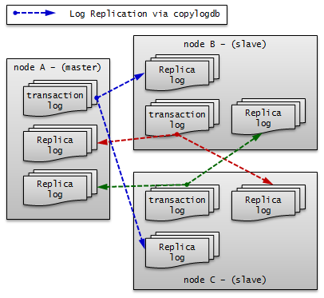
부하 분산 구성¶
부하 분산 구성은 HA 구성(한 개의 마스터 노드와 한 개의 슬레이브 노드)에 여러 개의 레플리카 노드를 두어 CUBRID 서비스의 가용성을 높이고, 많은 읽기 부하를 분산하여 처리할 수 있는 구성이다.
레플리카 노드들은 HA 구성 중 마스터 노드로부터 복제 로그를 받아 데이터를 동일하게 유지하고, 마스터 노드는 레플리카 노드에서 복제 로그를 받지 않으므로 다중 슬레이브 구성에 비해 네트워크 및 디스크 사용률이 낮다.
레플리카 노드는 HA 구성에 포함되지 않으므로 HA 구성 내의 모든 노드에 장애가 발생해도 failover되지 않고 읽기 서비스만 제공한다.
노드 설정 예시

부하 분산 구성의 각 노드는 다음과 같이 설정한다.
node A (마스터 노드)
cubrid.conf 파일의 ha_mode를 on으로 설정한다.
ha_mode=on
다음은 cubrid_ha.conf 파일의 설정 예이다.
ha_port_id=12345 ha_node_list=cubrid@nodeA:nodeB ha_replica_list=cubrid@nodeC:nodeD:nodeE ha_db_list=testdb ha_copy_sync_mode=sync:sync
node B (슬레이브 노드): node A와 동일하게 설정한다.
node C, node D, node E (레플리카 노드)
cubrid.conf 파일의 ha_mode를 replica로 설정한다.
ha_mode=replica
cubrid_ha.conf 파일은 node A와 동일하게 설정한다.
cubrid_broker.conf 파일은 브로커를 어떻게 구성하느냐에 따라 다양하게 설정할 수 있으며 databases.txt 파일과 함께 별도의 장비로 구성하여 설정할 수도 있다.
예시에서는 브로커와 DB 서버를 같은 장비에 구성했으며, node A, node B에 RW 브로커를 설정하고, node C, node D, node E에 “CONNECT_ORDER=RANDOM”과 “PREFERRED_HOSTS=localhost”를 포함하는 SO 브로커를 설정하였다. node C, node D, node E는 “PREFERRED_HOSTS=localhost”이기 때문에 로컬 DB 서버에 우선 접속을 시도하며, “CONNECT_ORDER=RANDOM”이므로 localhost 접속에 실패할 경우 databases.txt의 db-host에 명시된 호스트들 중 하나에 랜덤하게 접속을 시도한다.
다음은 node A와 node B의 cubrid_broker.conf 예이다.
[%RW_broker]
...
# Broker mode setting parameter
ACCESS_MODE =RW
다음은 node C, node D, node E의 cubrid_broker.conf 예이다.
[%PHRO_broker]
...
# Broker mode setting parameter
ACCESS_MODE =SO
PREFERRED_HOSTS =localhost
브로커 노드의 databases.txt 파일에는 브로커의 용도에 맞게 HA 또는 부하 분산 서버와 연결될 수 있도록 DB 서버 호스트의 목록을 순서대로 설정해야 한다.
다음은 node A와 node B의 databases.txt 파일의 예이다.
#db-name vol-path db-host log-path lob-base-path
testdb /home/cubrid/DB/testdb nodeA:nodeB /home/cubrid/DB/testdb/log file:/home/cubrid/CUBRID/testdb/lob
다음은 node C, node D, node E의 databases.txt 파일의 예이다.
#db-name vol-path db-host log-path lob-base-path
testdb /home/cubrid/DB/testdb nodeC:nodeD:nodeE /home/cubrid/DB/testdb/log file:/home/cubrid/CUBRID/testdb/lob
응용 프로그램 연결 설정
읽기 쓰기로 접속하기 위한 응용 프로그램은 node A 또는 node B에 있는 브로커에 연결한다. 다음은 JDBC 응용 프로그램의 예이다.
Connection connection = DriverManager.getConnection(
"jdbc:CUBRID:nodeA:33000:testdb:::?charSet=utf-8&altHosts=nodeB:33000", "dba", "");
읽기 전용으로 접속하기 위한 응용 프로그램은 node C, node D 또는 node E에 있는 브로커에 연결한다. 다음은 JDBC 응용 프로그램의 예이다. “loadBalance=true”로 설정하여 메인 호스트와 altHosts에 지정한 호스트들에 랜덤한 순서로 연결한다.
Connection connection = DriverManager.getConnection(
"jdbc:CUBRID:nodeC:33000:testdb:::?charSet=utf-8&loadBalance=true&altHosts=nodeD:33000,nodeE:33000", "dba", "");
기타 자세한 사항은 환경 설정의 JDBC 설정, CCI 설정, PHP 설정을 참고한다.
참고
이와 같은 구성에서 트랜잭션 로그의 이동 경로를 중심으로 살펴보면 다음과 같다.

다중 스탠바이 서버 구성¶
한 개의 마스터 노드와 한 개의 슬레이브 노드로 구성되나, 여러 서비스의 슬레이브 노드를 하나의 물리적인 서버에 구성한다.
매우 작은 서비스에서 슬레이브 노드로 읽기 부하를 받지 않아도 되는 경우를 위한 것으로, CUBRID 서비스의 가용성만을 위한 구성이다. 따라서 failover 후 장애가 발생했던 마스터 노드가 복구되면 부하를 다시 마스터 노드로 옮겨 오도록 하여 슬레이브 노드들이 들어있는 서버의 부하를 최소화해야 한다.

노드 설정 예시
HA 기본 구성의 각 노드는 다음과 같이 설정한다.
node AM, node AS : 두 노드는 동일하게 설정한다.
cubrid.conf 파일의 ha_mode를 on으로 설정한다.
ha_mode=on
다음은 cubrid_ha.conf 파일의 설정 예이다.
ha_port_id=10000 ha_node_list=cubridA@Host1:Host5 ha_db_list=testdbA1,testdbA2 ha_copy_sync_mode=sync:sync
node BM, node BS : 두 노드는 동일하게 설정한다.
cubrid.conf 파일의 ha_mode를 on으로 설정한다.
ha_mode=on
다음은 cubrid_ha.conf 파일의 설정 예이다.
ha_port_id=10001 ha_node_list=cubridB@Host2:Host5 ha_db_list=testdbB1,testdbB2 ha_copy_sync_mode=sync:sync
node CM, node CS : 두 노드는 동일하게 설정한다.
cubrid.conf 파일의 ha_mode를 on으로 설정한다.
ha_mode=on
다음은 cubrid_ha.conf 파일의 설정 예이다.
ha_port_id=10002 ha_node_list=cubridC@Host3:Host5 ha_db_list=testdbC1,testdbC2 ha_copy_sync_mode=sync:sync
node DM, node DS : 두 노드는 동일하게 설정한다.
cubrid.conf 파일의 ha_mode를 on으로 설정한다.
ha_mode=on
다음은 cubrid_ha.conf 파일의 설정 예이다.
ha_port_id=10003 ha_node_list=cubridD@Host4:Host5 ha_db_list=testdbD1,testdbD2 ha_copy_sync_mode=sync:sync
HA 제약 사항¶
지원 플랫폼
현재 CUBRID HA 기능은 Linux 계열에서만 사용할 수 있다. CUBRID HA 그룹의 모든 노드들은 반드시 동일한 플랫폼으로 구성해야 한다.
테이블 기본키(primary key)
CUBRID HA는 마스터 노드의 서버에서 생성되는 기본키 기반의 복제 로그를 슬레이브 노드에 복제 후 반영하는 방식(transaction log shipping)으로 노드 간 데이터를 동기화하므로 기본키가 설정된 테이블에 대해서만 CUBRID HA 그룹 내의 노드 간 데이터 동기화가 가능하다.
CUBRID HA 그룹 내의 노드 간 특정 테이블의 데이터가 동기화되지 않는다면 해당 테이블에 적절한 기본키가 설정되어 있는지 확인해야 한다.
분할 테이블에서 PROMOTE 문에 의해 일부 분할이 승격된 테이블은 모든 데이터를 슬레이브에 복제하지만, 기본 키를 가지지 않게 되므로 이후 마스터에서 해당 테이블의 데이터를 수정해도 슬레이브에 반영되지 않음에 주의한다.
Note
USE_SBR 힌트를 통해 기본키가 설정되지 않은 테이블에 대한 데이터 복제도 지원한다. 자세한 내용은 SQL 힌트 을 참고한다.
Java 저장 프로시저(java stored procedure)
CUBRID HA에서 Java 저장 프로시저 환경 구축은 복제되지 않으므로, Java 저장 프로시저를 사용하려면 모든 노드에 각각 Java 저장 프로시저 환경을 설정해야 한다. Java 저장 함수/프로시저 서버 설정을 참고한다.
메서드
CUBRID HA는 복제 로그를 기반으로 CUBRID HA 그룹 내의 노드 간 데이터를 동기화하므로 복제 로그를 생성하지 않는 메서드를 사용하면 CUBRID HA 그룹 내 노드 간 데이터 불일치가 발생할 수 있다.
따라서 CUBRID HA 환경에서는 메서드 사용(예: CALL login(‘dba’, ‘’) ON CLASS dbuser;)을 권장하지 않는다.
stand-alone 모드
CUBRID의 stand-alone 모드에서 수행한 작업에 대해서는 복제 로그가 생성되지 않는다. 따라서 stand-alone 모드로 csql 등을 통해 작업 수행 시 CUBRID HA 그룹 내 노드 간 데이터 불일치가 발생할 수 있다.
시리얼 캐시(serial cache)
시리얼 캐시는 성능 향상을 위해 시리얼 정보를 조회하거나 갱신할 때 Heap에 접근하지 않고 복제 로그를 생성하지 않는다. 따라서 시리얼 캐시를 사용하는 경우 CUBRID HA 그룹 내 노드 간 시리얼의 현재 값이 일치하지 않는다.
cubrid backupdb -r
이는 지정한 데이터베이스를 백업하는 명령으로 -r 옵션을 사용하면 백업을 수행한 후 복구에 필요하지 않은 로그를 삭제한다. 하지만 이 옵션으로 인해 로그가 사라지는 경우 CUBRID HA 그룹 내의 노드 간 데이터 불일치가 발생할 수 있으므로 -r 옵션을 사용하지 않아야 한다
온라인 백업
HA 환경에서 온라인 백업을 하려면 데이터베이스 이름 뒤에 @hostname을 추가해야 한다. hostname은 $CUBRID_DATABASES/databases.txt에 지정된 이름이다. 보통 해당 서버의 로컬 DB를 온라인 백업하므로 “@localhost”를 지정하면 된다.
cubrid backupdb -C -D ./ -l 0 -z testdb@localhost
데이터베이스 운영 중에 수행하는 온라인 백업은 디스크 I/O의 부하가 예상되므로, 마스터 DB보다는 슬레이브 DB에서 백업할 것을 권장한다.
INCR/DECR 함수
HA 구성의 슬레이브 노드에서 클릭 카운터 함수인 :INCR() / DECR() 함수를 사용하면 오류를 반환한다.
LOB(BLOB/CLOB) 타입
CUBRID HA에서 LOB 칼럼 메타 데이터(Locator)는 복제되고, LOB 데이터는 복제되지 않는다. 따라서 LOB 타입 저장소가 로컬에 위치할 경우, 슬레이브 노드 또는 failover 이후 마스터 노드에서 해당 칼럼에 대한 작업을 허용하지 않는다.
Note
9.1 이전 버전의 CUBRID HA 환경에서 트리거를 사용할 경우 마스터 노드에서 이미 수행된 트리거를 슬레이브 노드에서 중복 수행하므로 CUBRID HA 그룹 내의 노드 간 데이터 불일치가 발생할 수 있다. 따라서 9.1 이전 버전의 CUBRID HA 환경에서는 트리거를 사용하지 않도록 한다.
Note
UPDATE STATISTICS 문
10.0 부터는 UPDATE STATISTICS 문이 복제된다.
10.0 미만 버전에서는 UPDATE STATISTICS 문이 복제되지 않으므로 슬레이브/레플리카 노드에 별도로 수행해야 한다. 10.0 미만 버전의 슬레이브/레플리카 노드에서 “UPDATE STATISTICS” 구문을 적용하려면 CSQL에서 –sysadm 옵션과 –write_on_slave 옵션을 추가한 후 이 구문을 수행해야 한다.
운영 시나리오¶
읽기 쓰기 서비스 중 운영 시나리오¶
이 운영 시나리오는 서비스의 읽기 쓰기에 영향을 받지 않으므로, CUBRID 운영으로 인해 서비스에 미치는 영향이 매우 작다. 읽기 쓰기 서비스 중의 운영 시나리오는 failover가 일어나는 경우와 그렇지 않은 경우로 나눌 수 있다.
failover가 필요 없는 운영 시나리오
다음 작업은 CUBRID HA 그룹 내의 노드를 종료하고 다시 구동하지 않고 바로 수행할 수 있다.
대표적인 운영 작업 |
시나리오 |
고려 사항 |
|---|---|---|
온라인 백업 |
운영 중 마스터 노드와 슬레이브 노드에서 각각 운영 작업을 수행한다. |
운영 작업으로 인해 마스터 노드의 트랜잭션이 지연될 수 있으므로 주의해야 한다. |
스키마 변경(기본키 변경 작업 제외), 인덱스 변경, 권한 변경 |
마스터 노드에서만 운영 작업하면 자동으로 슬레이브 노드로 복제 반영한다. |
운영 작업이 마스터 노드에서 완료된 후 슬레이브 노드로 복제 로그가 복사되고 그 후부터 슬레이브 노드에 반영이 되므로 운영 작업 시간이 2배 소요 된다. 스키마 변경은 반드시 중간에 failover 없이 진행해야 한다. 스키마 변경을 제외한 인덱스 변경, 권한 변경은 운영 작업 소요 시간이 문제가 되는 경우, 각 노드를 정지한 후 독립 모드(예:csql 유틸리티의 -S 옵션)를 통해 수행할 수 있다. |
볼륨 추가 |
HA 구성과 별개로 각 DB에서 운영 작업을 수행한다 |
운영 작업으로 인해 마스터 노드의 트랜잭션이 지연될 수 있으므로 주의해야 한다. 운영 작업 소요 시간이 문제가 되는 경우 각 노드를 정지한 후 독립 모드(예: cubrid addvoldb 유틸리티의 -S 옵션)를 통해 수행할 수 있다. |
장애 노드 서버 교체 |
장애 발생 후 실행 중인 CUBRID HA 그룹의 재시작 없이 교체한다. |
CUBRID HA 그룹 내 설정의 ha_node_list에 장애 노드가 등록되어 있는 경우로, 교체 시 노드명 등이 변경되지 않아야 한다. |
장애 브로커 서버 교체 |
장애 발생 후 실행 중인 브로커의 재시작 없이 교체한다. |
클라이언트에서 교체된 브로커로의 연결은 URL 문자열에 설정된 rcTime 값에 의한다. |
DB 서버 증설 |
기존에 구성된 CUBRID HA 그룹의 재시작 없이 설정 변경(ha_node_list, ha_replica_list) 후 cubrid heartbeat reload 를 각 노드에서 수행한다. |
변경된 설정 정보를 로딩하여 추가/삭제된 노드에 해당하는 copylogdb/applylogdb 프로세스를 시작 또는 정지한다. |
브로커 서버 증설 |
기존 브로커들의 재시작 없이 추가된 브로커를 구동한다. |
클라이언트가 추가된 브로커로 연결되기 위해서는 URL 문자열을 수정해야 한다. |
failover가 필요한 운영 시나리오
다음 작업은 CUBRID HA 그룹 내의 노드를 종료하고 운영 작업을 완료한 후 구동해야 한다.
대표적인 운영 작업 |
시나리오 |
고려 사항 |
|---|---|---|
DB 서버 설정 변경 |
cubrid.conf의 설정이 변경되면 설정 변경된 노드를 재시작한다. |
|
브로커 설정 변경, 브로커 추가, 브로커 삭제 |
cubrid_broker.conf의 설정이 변경되면 설정 변경된 브로커를 재시작한다. |
|
DBMS 버전 패치 |
HA 그룹 내 노드와 브로커들을 각각 버전 패치 후 재시작한다. |
버전 패치는 CUBRID의 내부 프로토콜, 볼륨 및 로그의 변경이 없는 것이다. |
읽기 서비스 중 운영 시나리오¶
이 운영 시나리오는 읽기 서비스만 가능하도록 하여 운영 작업을 수행한다. 서비스의 읽기 서비스만을 허용하거나 브로커의 모드 설정을 Read Only로 동적 변경해야 한다. 읽기 서비스 중의 운영 시나리오는 failover가 일어나는 경우와 그렇지 않은 경우로 나눌 수 있다.
failover가 필요 없는 운영 시나리오
다음 작업은 CUBRID HA 그룹 내의 노드를 종료하고 다시 구동하지 않고 바로 수행할 수 있다.
대표적인 운영 작업 |
시나리오 |
고려 사항 |
|---|---|---|
스키마 변경(기본키 변경) |
마스터 노드에서만 운영 작업하면 자동으로 슬레이브 노드로 복제 반영한다. |
기본키를 변경하려면 기본키를 삭제하고 다시 추가해야 한다. 따라서 기본키 기반의 복제 로그를 반영하는 HA 내부 구조 상 복제 반영이 일어나지 않을 수 있으므로, 반드시 읽기 서비스 중에 운영 작업을 수행해야 한다. |
스키마 변경(기본키 변경 작업 제외), 인덱스 변경, 권한 변경 |
마스터 노드에서만 운영 작업하면 자동으로 슬레이브 노드로 복제 반영한다. |
운영 작업이 마스터 노드에서 완료된 후 슬레이브 노드로 복제 로그가 복사되고 그 후부터 슬레이브 노드에 반영이 되므로 운영 작업 시간이 2배 소요 된다. 스키마 변경은 반드시 중간에 failover 없이 진행해야 한다. 스키마 변경을 제외한 인덱스 변경, 권한 변경은 운영 작업 소요 시간이 문제가 되는 경우, 각 노드를 정지한 후 독립 모드(예: csql 유틸리티의 -S 옵션)를 통해 수행할 수 있다. |
failover가 필요한 운영 시나리오
다음 작업은 CUBRID HA 그룹 내의 노드를 종료하고 운영 작업을 완료한 후 구동해야 한다.
대표적인 운영 작업 |
시나리오 |
고려 사항 |
|---|---|---|
DBMS 버전 업그레이드 |
CUBRID HA 그룹 내 노드와 브로커들을 각각 버전 업그레이드 후 재시작 한다. |
버전 업그레이드는 CUBRID의 내부 프로토콜, 볼륨 및 로그의 변경이 있는 것이다. 업그레이드 중의 브로커 및 서버는 프로토콜, 볼륨 및 로그 등이 서로 맞지 않는 두 버전이 존재하게 되므로 업그레이드 전후의 클라이언트 및 브로커는 각각의 버전에 맞는 브로커 및 서버에 연결되도록 운영 작업을 수행해야 한다. |
대량의 데이터 작업 (INSERT/UPDATE/DELETE) |
작업할 노드를 정지하고 운영 작업을 수행한 후 노드를 구동한다. |
분할하여 작업할 수 없는 대량의 데이터 작업이 이에 해당한다. |
서비스 정지 후 운영 시나리오¶
이 운영 시나리오는 CUBRID HA 그룹 내의 모든 노드들을 정지 후 운영 작업을 수행해야 한다.
대표적인 운영 작업 |
시나리오 |
고려 사항 |
|---|---|---|
DB 서버의 호스트명 및 IP 변경 |
CUBRID HA 그룹 내의 모든 노드를 정지하고 운영 작업 후 구동한다. |
호스트명 변경 시 각 브로커의 databases.txt도 변경한 후 cubrid broker reset 으로 브로커의 연결을 리셋한다. |
레플리카 복제 지연 설정 시나리오¶
이 운영 시나리오는 마스터 노드에서 실수로 데이터를 삭제한 경우를 감지하여 특정 시점 이전으로 데이터를 되돌리고 싶을 때, 레플리카 노드를 통해 긴급히 이전 데이터까지 복구할 수 있게 하기 위해 지정한 시간 간격을 두고 복제를 진행하며 특정 시점에서 복제를 정지하도록 복제 정지 시간을 설정한다.
대표적인 운영 작업 |
시나리오 |
고려 사항 |
|---|---|---|
레플리카 노드에서 복제 지연 설정 |
레플리카 노드에 복제되는 시간 간격을 지정하고, 특정 시간에 복제가 정지되게 한다. |
cubrid_ha.conf의 ha_replica_delay와 ha_replica_time_bound를 지정한다. |
복제 구축¶
restoreslave¶
cubrid restoreslave 는 백업본으로부터 데이터베이스를 복구하는 cubrid restoredb 와 동일하지만 슬레이브(slave)나 레플리카(replica)를 재구성할 때 편리한 기능이 포함되어 있다. cubrid restoreslave 를 사용하면 사용자가 db_ha_apply_info 에 저장되는 복제 카탈로그 생성을 위해 백업 출력에서 복제 관련 정보를 수동으로 수집하지 않아도 된다. 이 명령은 백업 이미지와 활성 로그로부터 필요한 정보를 모두 자동으로 읽어서 관련 복제 카탈로그를 db_ha_apply_info 에 추가한다. 사용자는 백업 이미지가 생성된 노드의 상태와 현재 마스터 노드의 호스트명, 이 두 가지 필수 옵션만 제공하면 된다. 자세한 내용은 restoredb 를 참고한다.
cubrid restoreslave [OPTION] database-name
-
-s,--source-state=STATE¶ 백업 이미지가 생성된 노드의 상태를 지정해야 한다. STATE는 ‘master’, ‘slave’ 또는 ‘replica’일 수 있다.
-
-m,--master-host-name=NAME¶ 현재 마스터 노드의 호스트명을 입력한다.
-
-B,--backup-file-path=PATH¶ 이 옵션을 이용해서 백업 파일들이 위치할 디렉토리를 지정할 수 있다. 더 많은 정보는 restoredb 의 -B 옵션을 참고한다.
복제 구축 시나리오 예제¶
이 글에서는 HA 구성을 운영하는 도중 새로운 노드를 추가하거나 삭제하는 다양한 시나리오를 알아본다.
Note
기본 키가 있는 테이블만 복제된다는 점에 반드시 주의한다.
마스터 노드와 슬레이브 노드 (또는 레플리카 노드)의 볼륨 디렉터리들은 모두 일치해야 한다는 점에 주의한다.
하나의 노드는 다른 노드들에 대한 복제 로그 진행 정보를 모두 포함한다. 예를 들어, 마스터 nodeA와 슬레이브 nodeB, nodeC로 구성된 HA 구성을 가정하자. nodeA는 nodeB, nodeC에 대한 복제 진행 정보를 가지고 있으며, nodeB는 nodeA와 nodeC에 대한 정보를, nodeC는 nodeA와 nodeB에 대한 정보를 가지고 있다.
절체(failover)가 발생하지 않는다는 전제 하에 새로운 노드를 추가한다. 만약 복제 구축 도중 절체가 발생하면 다시 처음부터 복제 구축을 수행할 것을 권장한다.
-
한 대의 장비로만 데이터베이스를 운영하다가 서비스 정지 후 슬레이브 노드를 새로 추가한다.
-
마스터 한 대, 슬레이브 한 대가 구축된 환경에서 기존의 슬레이브를 사용하여 새로운 슬레이브를 추가한다.
-
마스터와 2개의 슬레이브가 구축된 환경에서 하나의 슬레이브를 제거한다.
-
마스터 한 대, 슬레이브 한 대가 구축된 환경에서 기존의 슬레이브를 사용하여 새로운 레플리카를 추가한다.
-
마스터, 슬레이브, 레플리카가 구축된 환경에서 마스터를 이용해 슬레이브를 재구축한다. 사용자에 의해 db_ha_apply_info 카탈로그 테이블의 정보를 변경해야 한다.
이상에 대해 좀더 자세히 알아보자.
HA 환경에서 비정상 노드만 재구축하고자 하는 경우 복제 재구축 스크립트를 참고한다.
Note
복제 구축 시 염두에 둬야 할 사항은 새로 구축하거나, 재구축하거나, 특정 노드를 제거하는 모든 경우, 해당 노드에 대한 복제 정보와 복제 로그를 변경 또는 삭제해야 한다는 점이다. 복제 정보는 db_ha_apply_info에 저장되며, 상대방 노드의 복제 진행 상태 정보를 가지고 있다.
단, 레플리카의 경우 역할 변경(role change)이 발생하지 않으므로 상대방 노드가 레플리카 노드의 복제 정보와 복제 로그를 가지고 있을 필요가 없다. 반면, 레플리카는 마스터와 슬레이브 노드의 정보를 모두 가지고 있다.
서비스 운영 중 슬레이브 재구축의 경우 사용자가 직접 db_ha_apply_info 정보를 변경해야 한다.
서비스 정지 후 슬레이브 추가의 경우 슬레이브를 새로 구축하므로 자동 생성되는 정보를 그대로 사용하면 된다.
서비스 운영 중 슬레이브 하나 더 추가, 서비스 운영 중 레플리카 추가의 경우 기존의 슬레이브로부터 백업한 데이터베이스를 사용하는데, 기존의 슬레이브에는 마스터의 db_ha_apply_info 정보가 포함되어 있으므로 그대로 사용할 수 있다.
서비스 운영 중 슬레이브 제거의 경우 제거된 슬레이브에 대한 복제 정보를 사용자가 직접 삭제해야 한다. 하지만 이 정보가 남아 있다 하더라도 문제가 되진 않는다.
서비스 정지 후 슬레이브 추가¶
마스터 노드 한 대로만 운영하는 도중 서비스를 정지한 후 슬레이브를 추가하여 마스터와 슬레이브를 1:1로 구성하는 경우를 알아보자.
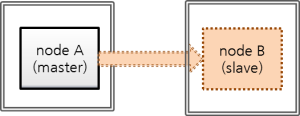
nodeA: 마스터 노드 호스트 명
nodeB: 새로 추가할 슬레이브 노드 호스트 명
이 시나리오에서 데이터베이스는 다음 명령으로 이미 생성되어 있다고 가정한다. createdb 수행 시 로캘 이름과 문자셋은 마스터 노드와 슬레이브 노드가 서로 동일해야 한다.
export CUBRID_DATABASES=/home/cubrid/DB
mkdir $CUBRID_DATABASES/testdb
mkdir $CUBRID_DATABASES/testdb/log
cd $CUBRID_DATABASES/testdb
cubrid createdb testdb -L $CUBRID_DATABASES/testdb/log en_US.utf8
백업 파일의 저장 위치를 별도의 옵션으로 지정하지 않으면 $CUBRID_DATABASES/testdb 디렉터리가 기본이 된다.
브로커 노드가 별도의 장비에 구성되어 있고 브로커를 추가하지 않는 경우, 응용 프로그램에서 URL의 변경을 필요로 하지 않는다.
Note
브로커와 데이터베이스의 장비가 분리되어 있지 않은 경우 마스터의 장비가 고장날 것에 대비해 슬레이브 장비에서 브로커 접속이 가능해야 한다. 이를 위해, 응용 프로그램의 접속 URL에 altHosts를 추가해야 하며, 브로커 이중화를 위해 databases.txt의 설정이 변경되어야 한다.
HA 환경에서 브로커 설정은 cubrid_broker.conf를 참고한다.
이 시나리오에서는 브로커 노드를 별도의 장비로 분리하지 않은 것으로 가정한다.
이상을 염두에 두고 다음의 순서로 작업한다.
마스터 노드와 슬레이브 노드의 HA 설정
마스터 노드와 슬레이브 노드가 동일하게 $CUBRID/conf/cubrid.conf 설정
[service] service=server,broker,manager # 서비스 시작 시 구동될 데이터베이스 이름 추가 server=testdb [common] ... # HA 구성 시 추가 (Logging parameters) force_remove_log_archives=no # HA 구성 시 추가 (HA 모드) ha_mode=on
마스터 노드와 슬레이브 노드가 동일하게 $CUBRID/conf/cubrid_ha.conf 설정
[common] ha_port_id=59901 # cubrid는 HA 시스템의 그룹 이름이고, nodeA와 nodeB는 호스트 이름임. ha_node_list=cubrid@nodeA:nodeB ha_db_list=testdb ha_copy_sync_mode=sync:sync ha_apply_max_mem_size=500
마스터 노드와 슬레이브 노드가 동일하게 $CUBRID_DATABASES/databases.txt 설정.
#db-name vol-path db-host log-path lob-base-path testdb /home/cubrid/DB/testdb nodeA:nodeB /home/cubrid/DB/testdb/log file:/home/cubrid/DB/testdb/lob
HA 환경에서 브로커, 응용 프로그램 설정
브로커 설정과 응용 프로그램에서 URL에 altHosts를 추가하는 것에 대한 설명은 cubrid_broker.conf를 참고한다.
마스터 노드와 동일하게 슬레이브 노드의 로캘 라이브러리 설정
[nodeA]$ scp $CUBRID/conf/cubrid_locales.txt cubrid_usr@nodeB:$CUBRID/conf/. [nodeB]$ make_locale.sh -t64
슬레이브 노드에 데이터베이스 디렉터리 생성
[nodeB]$ cd $CUBRID_DATABASES [nodeB]$ mkdir testdb
슬레이브 노드에 로그 디렉터리 생성(마스터 노드와 같은 위치에 생성)
[nodeB]$ cd $CUBRID_DATABASES/testdb [nodeB]$ mkdir log
마스터 노드 서비스 중지, 마스터 데이터베이스 백업
[nodeA]$ cubrid service stop
마스터 노드의 데이터베이스를 백업하고, 슬레이브 노드에 백업 파일을 복사한다.
마스터 노드에서 백업 파일의 저장 위치는 별도의 지정이 없으면 testdb 의 로그 디렉터리가 되며, 슬레이브 노드에도 마스터 노드와 같은 위치에 백업 파일을 복사한다. 아래에서 testdb_bk0v000은 백업 볼륨 파일, testdb_bkvinf는 백업 볼륨 정보 파일이다.
[nodeA]$ cubrid backupdb -z -S testdb Backup Volume Label: Level: 0, Unit: 0, Database testdb, Backup Time: Thu Apr 19 16:05:18 2012 [nodeA]$ cd $CUBRID_DATABASES/testdb/log [nodeA]$ scp testdb_bk* cubrid_usr@nodeB:$CUBRID_DATABASES/testdb/log cubrid_usr@nodeB's password: testdb_bk0v000 100% 6157KB 6.0MB/s 00:00 testdb_bkvinf 100% 66 0.1KB/s 00:00
슬레이브 노드에서 데이터베이스 복구.
이때, 마스터 노드와 슬레이브 노드의 볼륨 경로가 반드시 같아야 한다.
[nodeB]$ cubrid restoredb -B $CUBRID_DATABASES/testdb/log testdb
마스터 노드 시작, 슬레이브 노드 시작
[nodeA]$ cubrid heartbeat start
마스터 노드가 정상 구동되었음을 확인한 후, 슬레이브 노드를 시작한다.
제일 아래에서 nodeA의 state가 registered_and_to_be_active에서 registered_and_active로 변경되면 마스터 노드가 정상 구동된 것이다.
[nodeA]$ cubrid heartbeat status @ cubrid heartbeat status HA-Node Info (current nodeA, state master) Node nodeB (priority 2, state unknown) Node nodeA (priority 1, state master) HA-Process Info (master 123, state master) Applylogdb testdb@localhost:/home/cubrid/DB/testdb_nodeB (pid 234, state registered) Copylogdb testdb@nodeB:/home/cubrid/DB/testdb_nodeB (pid 345, state registered) Server testdb (pid 456, state registered_and_to_be_active) [nodeB]$ cubrid heartbeat start
마스터 노드, 슬레이브 노드의 HA 구성이 정상 동작하는지 확인한다.
[nodeA]$ csql -u dba testdb@localhost -c"create table tbl(i int primary key);insert into tbl values (1),(2),(3)" [nodeB]$ csql -u dba testdb@localhost -c"select * from tbl" i ============= 1 2 3
서비스 운영 중 슬레이브 하나 더 추가¶
다음은 마스터:슬레이브로 HA 서비스 운영 중에 기존 슬레이브로부터 새 슬레이브를 추가하는 시나리오이다. “마스터:슬레이브”는 1:1에서 1:2가 된다.

nodeA: 마스터 노드 호스트 명
nodeB: 슬레이브 노드 호스트 명
nodeC: 새로 추가할 슬레이브 노드 호스트 명
HA 서비스 운영 중 슬레이브를 새로 추가하려면 기존의 마스터 또는 슬레이브를 이용할 수 있는데, 보통 마스터에 비해 슬레이브가 상대적으로 디스크 I/O 부하가 적다고 보고, 여기에서는 기존 슬레이브를 이용하여 추가로 슬레이브를 구성해보자.
Note
노드 추가 시 마스터 대신 슬레이브를 이용할 수 있는 이유
마스터 대신 슬레이브를 이용하는 것이 가능한 이유는, 마스터의 트랜잭션 로그(활성 로그 + 보관 로그)가 슬레이브에 그대로 복제되며 마스터 노드의 트랜잭션 로그와 슬레이브 노드의 복제 로그(복제된 트랜잭션 로그)가 형식이나 내용 면에서 동일하기 때문이다.
Note
초기 데이터베이스 구축
데이터베이스는 다음 명령으로 이미 생성되어 운영되고 있다고 가정한다. createdb 수행 시 로캘 이름과 문자셋은 마스터 노드와 슬레이브 노드가 서로 동일해야 한다.
export CUBRID_DATABASES=/home/cubrid/DB
mkdir $CUBRID_DATABASES/testdb
mkdir $CUBRID_DATABASES/testdb/log
cd $CUBRID_DATABASES/testdb
cubrid createdb testdb -L $CUBRID_DATABASES/testdb/log en_US.utf8
이때 백업 파일은 저장 위치를 별도의 옵션으로 지정하지 않으면 databases.txt에 명시된 로그 디렉터리에 저장된다.

nodeC의 HA 설정
nodeC는 nodeB와 동일하게 $CUBRID/conf/cubrid.conf 설정
HA 모드로 구동 중 복제되지 않은 로그가 삭제되지 않도록 하기 위해 반드시 “force_remove_log_archives=no”로 설정한다.
[service] service=server,broker,manager [common] ... # HA 구성 시 추가 (Logging parameters) force_remove_log_archives=no # HA 구성 시 추가 (HA 모드) ha_mode=on
nodeC는 nodeB와 동일하게 $CUBRID/conf/cubrid_ha.conf 설정
단, ha_node_list에 nodeC를 추가하고, ha_copy_sync_mode에 sync를 하나 더 추가한다.
[common] ha_port_id=59901 # cubrid는 HA 시스템의 그룹 이름이고, nodeA, nodeB, nodeC는 호스트 이름임. ha_node_list=cubrid@nodeA:nodeB:nodeC ha_db_list=testdb ha_copy_sync_mode=sync:sync:sync ha_apply_max_mem_size=500
nodeA, nodeB와 동일하게 nodeC의 로캘 라이브러리 설정
[nodeB]$ scp $CUBRID/conf/cubrid_locales.txt cubrid_usr@nodeC:$CUBRID/conf/. [nodeC]$ make_locale.sh -t64
nodeC의 $CUBRID_DATABASES/databases.txt에서 db-host에 nodeA, nodeB, nodeC 추가
#db-name vol-path db-host log-path lob-base-path testdb /home/cubrid/DB/testdb nodeA:nodeB:nodeC /home/cubrid/DB/testdb/log file:/home/cubrid/DB/testdb/lob
databases.txt의 db-host 부분은 브로커에서 DB 서버로의 접속 순서와 관련된 설정이므로 원하는대로 변경이 가능하다. 예를 들어, db-host에 nodeA:nodeB만 쓰거나, localhost만 써도 된다. 다만, 로컬에서 접속하는 경우(csql -u dba testdb@localhost)를 감안하여 db-host에 localhost 또는 로컬 호스트의 이름은 반드시 포함한다.
백업 이후 복구 도중 nodeB의 복제 로그 삭제 방지를 위한 설정 적용
nodeB에서 백업한 이후 nodeC에 복구하는 도중에도 서비스가 계속된다면 nodeB의 복제 로그가 추가될 수 있는데, 설정에 따라 슬레이브의 복제 로그가 nodeC에 복제되기도 전에 삭제될 수 있다. 이를 방지하기 위해 다음과 같은 설정을 한다.
nodeB에 DB 재구동 없이 ha_copy_log_max_archives 값을 크게 변경
nodeB에서 백업을 받은 시점부터, nodeC가 구동한 이후 데이터가 마스터와 동일해질 때까지 수행된 트랜잭션이 보관되어야, 백업 시점 이후의 트랜잭션을 nodeC에 반영할 수 있다.
따라서, 백업 이후 추가된 nodeB의 복제 로그는 유지되어야 한다.
여기서는 nodeC 구축 시간 동안 수행되는 트랜잭션을 충분히 보관할 수 있는 복제 로그 개수를 5라고 가정한다.
$CUBRID/conf/cubrid_ha.conf 편집
ha_copy_log_max_archives=5
nodeB의 applylogdb 프로세스에 ha_copy_log_max_archives 파라미터 변경 내역 반영
[nodeB]$ cubrid heartbeat applylogdb stop testdb nodeA [nodeB]$ cubrid heartbeat applylogdb start testdb nodeA
Note
마스터 노드인 nodeA만 사용하여 nodeC를 구축한다면 nodeB에서 복제 로그를 복사하는 작업은 불필요하므로, nodeB에서 ha_copy_log_max_archives를 변경하는 작업 역시 불필요하다.
대신 nodeA에 변경된 log_max_archives를 적용해야 한다.
cubrid.conf의 log_max_archives 파라미터는 “SET SYSTEM PARAMETERS” 구문만으로 서비스 중 변경이 가능하다.
[nodeA]$ csql -u dba -c "SET SYSTEM PARAMETERS 'log_max_archives=5'" testdb@localhost
nodeB에서 백업, nodeC에 복구
nodeB 백업
[nodeB]$ cd $CUBRID_DATABASES/testdb/log [nodeB]$ cubrid backupdb --sleep-msecs=10 -C -o output.txt testdb@localhost
Note
–sleep-msecs는 1MB의 백업 파일이 쓰여질 때마다 쉬는 시간을 설정하는 옵션으로, 단위는 밀리초이다. 백업할 장비의 디스크 I/O 부하가 심한 경우 이 값을 설정하는 것을 고려하되, 이 값이 클수록 백업 시간이 길어지므로 가급적이면 부하가 적은 시간대에 백업하고 이 값은 작게 설정할 것을 권장한다.
nodeB의 부하가 전혀 없는 상태라면 이 옵션을 생략해도 무방하다.
-o 옵션으로 명시한 파일에는 백업 결과 정보가 기록된다.
백업 파일을 nodeC에 복사
[nodeB]$ cd $CUBRID_DATABASES/testdb/log [nodeB]$ scp -l 131072 testdb_bk* cubrid_usr@nodeC:$CUBRID_DATABASES/testdb/log
Note
scp 명령의 -l 옵션은 복사량을 조절하는 옵션으로, 노드 간 파일 복사 시 I/O 부하를 감안하여 이 옵션을 적절히 부여하도록 한다. 단위는 Kbits이며, 131072는 16MB이다.
nodeC에서 복구를 수행
이때, 마스터 노드와 슬레이브 노드의 볼륨 경로가 반드시 같아야 한다.
[nodeC]$ cubrid restoredb -B $CUBRID_DATABASES/testdb/log testdb
nodeA의 활성 로그(active log)를 nodeC에 복사
nodeA의 활성 로그에는 최근에 생성된 보관 로그의 번호 정보가 들어 있다. 활성 로그를 복사한 시점 이후에 생성되는 보관 로그가 nodeC의 HA 구동 후 copylogdb에 의해 자동으로 복사되려면 해당 정보가 필요하므로, 사용자는 활성 로그 복사 이전에 생성된 보관 로그만 수동으로 복사하면 된다.
nodeC에서 HA 연결을 관리하는 cub_master 구동
[nodeC]$ cub_master
nodeA에 대한 copylogdb 프로세스 구동
[nodeC]$ cubrid heartbeat copylogdb start testdb nodeA
nodeA의 활성 로그가 복사되었음을 확인
현 시점의 활성 로그를 복사해 온다는 것은 최근에 생성된 보관 로그 번호 정보를 획득한다는 의미이다. 이후에 생성되는 보관 로그는 [5. nodeC에서 HA 서비스를 구동] 과정 이후 자동으로 복사된다.
[nodeC]$ cd $CUBRID_DATABASES/testdb_nodeA [nodeC]$ ls testdb_lgar_t testdb_lgat testdb_lgat__lock
nodeC에서 nodeA에 대한 copylogdb 프로세스 정지
[nodeC]$ cubrid heartbeat copylogdb stop testdb nodeA
nodeC의 cub_master 정지
[nodeC]$ cubrid service stop
nodeC에 데이터베이스 복구 이후 필요한 로그 파일 복사
nodeB의 복제된 보관 로그(replicated archive log) 전부를 nodeC에 복사
[nodeC]$ cd $CUBRID_DATABASES/testdb_nodeA [nodeC]$ scp -l 131072 cubrid@nodeB:$CUBRID_DATABASES/testdb_nodeA/testdb_lgar0* .
이 과정에서는 복제에 필요한 복제 보관 로그가 전부 존재해야 한다는 점에 주의한다.
Note
scp 명령의 -l 옵션은 복사량을 조절하는 옵션으로, 노드 간 파일 복사 시 I/O 부하를 감안하여 이 옵션을 적절히 부여하도록 한다. 단위는 Kbits이며, 131072는 16MB이다.
Note
파일 이름이 숫자로 끝나는 파일만 복사한다. 여기에서는 복제 로그 파일 이름의 번호가 모두 0으로 시작하기 때문에 testdb_lgar0*을 복사했다.
Note
필요한 복제 로그가 이미 삭제된 경우 대처 방안
ha_copy_log_max_archives의 값이 충분히 크지 않은 경우 백업 시각과 활성 로그 생성 시각 사이에 생성된 복제 로그가 삭제될 수 있는데, 이 경우 아래 [5. nodeC에서 HA 서비스를 구동] 과정에서 오류가 발생할 수 있다.
오류가 발생한 경우, 필요한 로그가 마스터에 존재한다면 추가로 복사해서 nodeC의 HA를 재구동한다. 예를 들어, 마스터에는 보관 로그 #1, #2, #3 이 있고 슬레이브에는 복제된 보관 로그 #2, #3만 존재하며 #1이 추가로 필요하다면 마스터에서 #1을 복사해도 된다. 그러나, 마스터의 보관 로그 파일이 더 많이 남는 경우는 마스터의 log_max_archives 값이 충분히 큰 경우에만 발생할 수 있는 상황이다.
만약 마스터의 보관 로그에도 원하는 번호의 보관 로그가 없다면 ha_copy_log_max_archives의 값을 충분히 크게 한 후 백업 및 복구를 처음부터 다시 진행한다.
Note
필요로 하는 복제 로그 삭제 여부 확인
필요로 하는 복제 로그가 이미 삭제되었는지 여부는 testdb_lginf 파일을 사용하여 확인할 수 있다.
슬레이브에서 백업한 데이터베이스를 복원한 경우라면, 복원된 데이터베이스의 db_ha_apply_info 카탈로그 테이블에서 required_lsa_pageid를 통해 마스터 데이터베이스의 어느 페이지부터 필요한지 확인할 수 있다.
마스터에서 $CUBRID_DATABASES/testdb/log 디렉터리에 있는 testdb_lginf 파일의 내용을 가장 아래에서부터 확인해 나간다.
Time: 03/16/15 17:44:23.767 - COMMENT: CUBRID/LogInfo for database /home/cubrid/DB/databases/testdb/testdb Time: 03/16/15 17:44:23.767 - ACTIVE: /home/cubrid/DB/databases/testdb/log/testdb_lgat 1280 pages Time: 03/16/15 17:54:40.892 - ARCHIVE: 0 /home/cubrid/DB/databases/testdb/log/testdb_lgar000 0 1277 Time: 03/16/15 17:57:29.451 - COMMENT: Log archive /home/cubrid/DB/databases/testdb/log/testdb_lgar000 is not needed any longer unless a database media crash occurs. Time: 03/16/15 18:03:08.166 - ARCHIVE: 1 /home/cubrid/DB/databases/testdb/log/testdb_lgar001 1278 2555 Time: 03/16/15 18:03:08.167 - COMMENT: Log archive /home/cubrid/DB/databases/testdb/log/testdb_lgar000, which contains log pages before 2556, is not needed any longer by any HA utilities. Time: 03/16/15 18:03:29.378 - COMMENT: Log archive /home/cubrid/DB/databases/testdb/log/testdb_lgar001 is not needed any longer unless a database media crash occurs.
testdb_lginf 파일의 내용이 위와 같이 기록되어 있을 때, “Time: 03/16/15 17:54:40.892 - ARCHIVE: 0 /home/cubrid/DB/databases/testdb/log/testdb_lgar000 0 1277”의 뒤 두 개의 숫자는 해당 파일이 저장하고 있는 페이지의 시작 ID와 끝 ID이다.
예를 들어, db_ha_apply_info를 통해 확인한 백업 당시 페이지 ID가 2300번이라면 “testdb_lgar001 1278 2555”을 통해 1278번과 2555번 사이의 페이지 ID임을 확인할 수 있으므로, 복원 시 마스터의 보관 로그 (또는 슬레이브의 복제된 보관 로그)는 1번부터 필요하다는 것을 알 수 있다.
nodeC에서 HA 서비스를 구동
[nodeC]$ cubrid heartbeat start
nodeA, nodeB의 HA 설정 변경
nodeB의 ha_copy_log_max_archive 설정 원복
[nodeB]$ vi cubrid_ha.conf ha_copy_log_max_archives=1
nodeB의 applylogdb 프로세스에 ha_copy_log_max_archives 파라미터 변경 내역 반영
[nodeB]$ cubrid heartbeat applylogdb stop testdb nodeA [nodeB]$ cubrid heartbeat applylogdb start testdb nodeA
nodeA, nodeB의 cubrid_ha.conf에서 ha_node_list에 nodeC를 추가하고, ha_copy_sync_mode에 sync를 하나 더 추가
$ cd $CUBRID/conf $ vi cubrid_ha.conf ha_node_list=cubrid@nodeA:nodeB:nodeC ha_copy_sync_mode=sync:sync:sync
변경된 ha_node_list를 적용
[nodeA]$ cubrid heartbeat reload [nodeB]$ cubrid heartbeat reload
nodeC에 대한 coplylogdb, applylogdb 구동
[nodeA]$ cubrid heartbeat repl start nodeC [nodeB]$ cubrid heartbeat repl start nodeC
브로커 추가 및 응용 프로그램 URL의 altHosts에 추가된 브로커의 호스트 이름 추가
필요에 따라 브로커를 추가하고, 추가된 브로커에 접속하기 위해 응용 프로그램의 URL 속성인 altHosts에 추가된 브로커의 호스트 이름을 추가한다.
브로커의 추가를 고려하지 않고 있다면 이 작업을 하지 않아도 된다.
nodeA, nodeB 모두 $CUBRID_DATABASES/databases.txt에서 db-host에 nodeC 추가
#db-name vol-path db-host log-path lob-base-path testdb /home/cubrid/DB/testdb nodeA:nodeB:nodeC /home/cubrid/DB/testdb/log file:/home/cubrid/DB/testdb/lob
databases.txt의 db-host 부분은 브로커에서 DB 서버로의 접속 순서와 관련된 설정이므로 원하는대로 변경이 가능하다. 예를 들어, db-host에 nodeA:nodeB만 쓰거나, localhost만 써도 된다. 다만, 로컬에서 접속하는 경우(csql -u dba testdb@localhost)를 감안하여 db-host에 localhost 또는 로컬 호스트 이름은 반드시 포함한다.
서비스 운영 중 슬레이브 제거¶
“마스터:슬레이브=1:2”로 구성된 환경에서 하나의 슬레이브를 제거해보자.
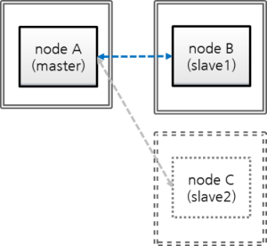
nodeA: 마스터 노드 호스트 명
nodeB: 슬레이브 노드 호스트 명
nodeC: 제거할 슬레이브 노드 호스트 명
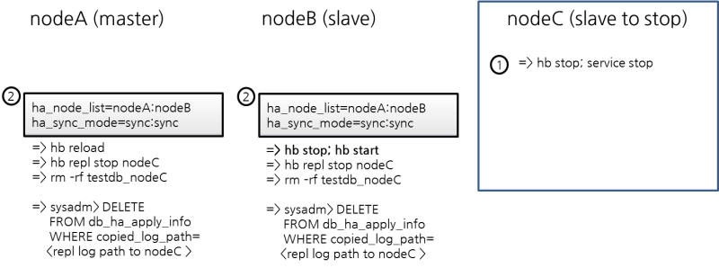
nodeC 정지
$ cubrid heartbeat stop # heartbeat와 관련된 프로세스들 (applylogdb, copylogdb, cub_server) 정지 $ cubrid service stop # cub_master, cub_broker, cub_manager 등의 구동 정지
nodeA, nodeB의 설정에서 nodeC 제거
nodeA, nodeB의 cubrid_ha.conf에서 ha_node_list의 nodeC 제거, ha_copy_sync_mode의 sync 하나 제거
$ vi cubrid_ha.conf ha_node_list=cubrid@nodeA:nodeB ha_copy_sync_mode=sync:sync변경된 ha_node_list를 적용
마스터인 nodeA에는 “reload” 명령을 사용한다.
[nodeA]$ cubrid heartbeat reload슬레이브인 nodeB에는 “stop/start” 명령을 사용한다.
[nodeB]$ cubrid heartbeat stop [nodeB]$ cubrid heartbeat startnodeC에 대한 copylogdb, applylogdb 프로세스 정지
[nodeA]$ cubrid heartbeat repl stop nodeC [nodeB]$ cubrid heartbeat repl stop nodeCnodeA, nodeB에서 nodeC에 대한 복제 로그 제거
$ cd $CUBRID_DATABASES $ rm -rf testdb_nodeCnodeA, nodeB에서 nodeC에 대한 복제 정보 제거
csql 실행 시 –sysadm 옵션과 –write-on-standby 옵션을 주어야 슬레이브에서 DELETE 연산을 수행할 수 있다.
$ csql -u dba --sysadm --write-on-standby testdb@localhost sysadm> DELETE FROM db_ha_apply_info WHERE copied_log_path='/home/cubrid/DB/databases/testdb_nodeC';copied_log_path는 복제 로그 파일이 저장된 경로를 나타낸다.
브로커 설정에서 nodeC 제거
nodeA, nodeB의 databases.txt에서 db-host에 nodeC가 포함되어 있는 경우, nodeC를 제거
$ cd $CUBRID_DATABASES $ vi databases.txt #db-name vol-path db-host log-path lob-base-path testdb /home/cubrid/DB/testdb nodeA:nodeB /home/cubrid/DB/testdb/log file:/home/cubrid/DB/testdb/lob
nodeA, nodeB의 브로커 재구동
$ cubrid broker restart
Note
nodeC가 종료된 상태이므로 응용 프로그램이 nodeC 데이터베이스에 접속되지는 않을 것이며, 따라서 브로커 재구동을 서두를 필요는 없다. 브로커 재구동 시 해당 브로커에 연결된 응용 프로그램의 연결이 끊어질 수 있음을 감안해야 한다. 또한, 동일한 설정의 브로커가 다중으로 존재하는 경우 하나의 브로커가 다른 브로커를 대신할 수 있으므로 브로커를 하나씩 재구동하도록 한다.
예를 들어, 위의 설정에서는 nodeA와 nodeB에 브로커가 동일하게 설정되어 있으므로, nodeB를 재구동한 이후 nodeA를 재구동하도록 한다.
서비스 운영 중 레플리카 추가¶
“마스터:슬레이브=1:1” 구성에서 슬레이브를 이용해 레플리카를 추가해 보자. 초기 데이터베이스 설정은 서비스 운영 중 슬레이브 하나 더 추가의 초기 데이터베이스 구축에서 설정한 것과 동일하다.
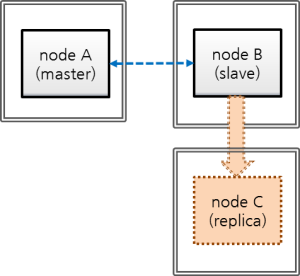
nodeA: 마스터 노드 호스트 명
nodeB: 슬레이브 노드 호스트 명
nodeC: 새로 추가할 레플리카 노드 호스트 명

nodeC의 HA 설정
nodeC는 ha_mode를 제외하고는 nodeB와 동일하게 $CUBRID/conf/cubrid.conf 설정
ha_mode=replica로 설정한다.
[service] service=server,broker,manager [common] # HA 구성 시 추가 (HA 모드) ha_mode=replica
Note
레플리카의 트랜잭션 로그는 복제에 사용되지 않으므로, force_remove_log_archives의 설정이 무엇이든 항상 yes로 동작한다.
nodeC의 $CUBRID/conf/cubrid_ha.conf 설정
ha_replica_list에 nodeC를 추가한다.
[common] ha_port_id=59901 # cubrid는 HA 시스템의 그룹 이름이고, nodeA, nodeB, nodeC는 호스트 이름임. ha_node_list=cubrid@nodeA:nodeB ha_replica_list=cubrid@nodeC ha_db_list=testdb ha_copy_sync_mode=sync:sync ha_apply_max_mem_size=500
nodeA, nodeB와 동일하게 nodeC의 로캘 라이브러리 설정
[nodeB]$ scp $CUBRID/conf/cubrid_locales.txt cubrid_usr@nodeC:$CUBRID/conf/. [nodeC]$ make_locale.sh -t64
nodeC의 $CUBRID_DATABASES/databases.txt에서 db-host에 nodeC 지정
#db-name vol-path db-host log-path lob-base-path testdb /home/cubrid/DB/testdb nodeC /home/cubrid/DB/testdb/log file:/home/cubrid/DB/testdb/lob
databases.txt의 db-host 부분은 브로커에서 DB 서버로의 접속 순서와 관련된 설정이므로 원하는대로 변경이 가능하다. 예를 들어, db-host에 nodeA:nodeB만 쓰거나, localhost만 써도 된다. 다만, 로컬에서 접속하는 경우(csql -u dba testdb@localhost)를 감안하여 db-host에 localhost 또는 로컬 호스트의 이름은 반드시 포함한다.
백업 이후 복구 도중 nodeB의 복제 로그 삭제 방지를 위한 설정 적용
nodeB에서 백업한 이후 nodeC에 복구하는 도중에도 서비스가 계속된다면, 복구 이후에도 nodeB의 복제 로그가 추가될 수 있는데, 설정에 따라 nodeC에 필요한 복제 로그 일부가 삭제될 수 있다. 이를 방지하기 위해 다음과 같은 설정을 한다.
nodeB에 DB 재구동 없이 ha_copy_log_max_archives 값을 크게 변경
nodeB의 백업 데이터를 복원한 nodeC의 데이터가 마스터(nodeA)와 동일해질 때까지의 트랜잭션이 보관되어야, 백업 시점 이후의 트랜잭션을 nodeC에 반영할 수 있다.
따라서, 백업 이후 추가된 nodeB의 복제 로그는 유지되어야 한다.
여기서는 nodeC 구축 시간 동안 수행되는 트랜잭션을 충분히 보관할 수 있는 복제 로그 개수를 5라고 가정한다.
$CUBRID/conf/cubrid_ha.conf 편집
ha_copy_log_max_archives=5
nodeB의 applylogdb 프로세스에 ha_copy_log_max_archives 파라미터 변경 내역 반영
[nodeB]$ cubrid heartbeat applylogdb stop testdb nodeA [nodeB]$ cubrid heartbeat applylogdb start testdb nodeA
Note
마스터 노드인 nodeA만 사용하여 nodeC를 구축한다면 nodeB에서 복제 로그를 복사하는 작업은 불필요하므로, nodeB에서 ha_copy_log_max_archives를 변경하는 작업 역시 불필요하다.
대신 nodeA에 변경된 log_max_archives를 적용하여야 한다.
cubrid.conf의 log_max_archives 파라미터는 “SET SYSTEM PARAMETERS” 구문만으로 서비스 중 변경이 가능하다.
[nodeA]$ csql -u dba -c "SET SYSTEM PARAMETERS 'log_max_archives=5'" testdb@localhost
nodeB의 백업 및 nodeC의 복구
nodeB 백업
[nodeB]$ cd $CUBRID_DATABASES/testdb/log [nodeB]$ cubrid backupdb --sleep-msecs=10 -C -o output.txt testdb@localhost
Note
서비스 운영 중 슬레이브 하나 더 추가의 –sleep-msecs에 대한 설명을 참고한다.
백업 파일을 nodeC에 복사
[nodeB]$ cd $CUBRID_DATABASES/testdb/log [nodeB]$ scp -l 131072 testdb_bk* cubrid_usr@nodeC:$CUBRID_DATABASES/testdb/log .. note:: scp 명령의 -l 옵션은 복사량을 조절하는 옵션으로, 노드 간 파일 복사 시 I/O 부하를 감안하여 이 옵션을 적절히 부여하도록 한다. 단위는 Kbits이며, 131072는 16MB이다.
nodeC에서 복구를 수행
이때, 마스터 노드와 슬레이브 노드의 볼륨 경로가 반드시 같아야 한다.
[nodeC]$ cubrid restoredb -B $CUBRID_DATABASES/testdb/log testdb
nodeA의 활성 로그(active log)를 nodeC에 복사
nodeA의 활성 로그에는 최근에 생성된 보관 로그의 번호 정보가 들어 있다. 활성 로그를 복사한 시점 이후에 생성되는 보관 로그가 nodeC의 HA 구동 후 copylogdb에 의해 자동으로 복사되려면 이 정보가 필요하므로, 사용자는 활성 로그 복사 이전에 생성된 보관 로그만 수동으로 복사하면 된다.
nodeC에서 HA 연결을 관리하는 cub_master 구동
[nodeC]$ cub_master
nodeA에 대한 copylogdb 프로세스 구동
[nodeC]$ cubrid heartbeat copylogdb start testdb nodeA
nodeA의 활성 로그가 복사되었음을 확인
현 시점의 활성 로그를 복사해 온다는 것은 현 시점까지 생성된 보관 로그 번호 정보를 획득한다는 의미이다. 이후에 생성되는 보관 로그는 [5. nodeC에서 HA 서비스를 구동] 과정 이후 자동으로 복사된다.
[nodeC]$ cd $CUBRID_DATABASES/testdb_nodeA [nodeC]$ ls testdb_lgar_t testdb_lgat testdb_lgat__lock
nodeC에서 nodeA에 대한 copylogdb 프로세스 정지
[nodeC]$ cubrid heartbeat copylogdb stop testdb nodeA
nodeC의 cub_master 정지
[nodeC]$ cubrid service stop
nodeC에 데이터베이스 복구 이후 필요한 로그 파일 복사
nodeB의 복제된 보관 로그(replicated archive log) 전부를 nodeC에 복사
[nodeC]$ cd $CUBRID_DATABASES/testdb_nodeA [nodeC]$ scp -l 131072 cubrid@nodeB:$CUBRID_DATABASES/testdb_nodeA/testdb_lgar0* .
이 과정에서는 복제에 필요한 복제 보관 로그가 전부 존재해야 한다는 점에 주의한다.
Note
scp 명령의 -l 옵션은 복사량을 조절하는 옵션으로, 노드 간 파일 복사 시 I/O 부하를 감안하여 이 옵션을 적절히 부여하도록 한다. 단위는 Kbits이며, 131072는 16MB이다.
Note
파일 이름이 숫자로 끝나는 파일만 복사한다. 여기에서는 복제 로그 파일 이름의 번호가 모두 0으로 시작하기 때문에 testdb_lgar0*을 복사했다.
Note
ha_copy_log_max_archives의 값이 충분히 크지 않은 경우 백업 시각과 활성 로그 생성 시각 사이에 생성된 복제 로그가 삭제될 수 있는데, 이 경우 아래 [5. nodeC에서 HA 서비스를 구동] 과정에서 오류가 발생할 수 있다.
오류가 발생하면 위에서 설명한 필요한 복제 로그의 삭제 여부 확인 및 대처 방안을 참고하여 조치하도록 한다.
nodeC에서 HA 서비스를 구동
[nodeC]$ cubrid heartbeat start
nodeA, nodeB의 HA 설정 변경
nodeB의 ha_copy_log_max_archive 설정 원복
[nodeB]$ vi cubrid_ha.conf ha_copy_log_max_archives=1
nodeB의 applylogdb 프로세스에 ha_copy_log_max_archives 파라미터 변경 내역 반영
[nodeB]$ cubrid heartbeat applylogdb stop testdb nodeA [nodeB]$ cubrid heartbeat applylogdb start testdb nodeA
nodeA, nodeB의 cubrid_ha.conf에서 ha_replica_list에 nodeC를 추가
$ cd $CUBRID/conf $ vi cubrid_ha.conf ha_replica_list=cubrid@nodeC
변경된 ha_replica_list를 적용
[nodeA]$ cubrid heartbeat reload [nodeB]$ cubrid heartbeat reload
nodeC는 레플리카 노드이므로, nodeA, nodeB에서 nodeC에 대한 applylogdb, copylogdb의 구동은 불필요하다.
브로커 추가 및 응용 프로그램 URL의 altHosts에 추가된 브로커의 호스트 이름 추가
필요에 따라 브로커를 추가하고, 추가된 브로커에 접속하기 위해 응용 프로그램의 연결 속성에 추가된 브로커의 호스트 이름을 추가한다.
브로커의 추가를 고려하지 않고 있다면 이 작업을 하지 않아도 된다.
nodeA, nodeB 모두 $CUBRID_DATABASES/databases.txt에서 db-host에 nodeC 추가
#db-name vol-path db-host log-path lob-base-path testdb /home/cubrid/DB/testdb nodeA:nodeB:nodeC /home/cubrid/DB/testdb/log file:/home/cubrid/DB/testdb/lob
databases.txt의 db-host 부분은 브로커에서 DB 서버로의 접속 순서와 관련된 설정이므로 원하는대로 변경이 가능하다. 예를 들어, db-host에 nodeA:nodeB만 쓰거나, localhost만 써도 된다. 다만, 로컬에서 접속하는 경우(csql -u dba testdb@localhost)를 감안하여 db-host에 localhost 또는 로컬 호스트 이름은 반드시 포함한다.
서비스 운영 중 슬레이브 재구축¶
“마스터:슬레이브:레플리카 = 1:1:1”로 구축된 환경에서 슬레이브의 데이터에 이상이 발생했다고 가정하고, 마스터로부터 데이터를 완전히 새로 구축해 보자. 초기 데이터베이스 설정은 서비스 운영 중 슬레이브 하나 더 추가의 초기 데이터베이스 구축에서 설정한 것과 동일하다.
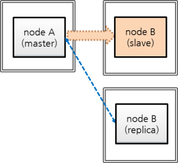
nodeA: 마스터 노드 호스트 명
nodeB: 재구축할 슬레이브 노드 호스트 명
nodeC: 레플리카 노드 호스트 명

nodeB 정지, nodeB 데이터 삭제
nodeB를 정지한 후, nodeB의 데이터베이스 볼륨, nodeA와 nodeC에 있는 nodeB의 복제 로그를 삭제한다.
nodeB 정지
[nodeB]$ cubrid heartbeat stop [nodeB]$ cubrid service stop
nodeB의 데이터베이스 볼륨, 복제 로그 삭제
[nodeB]$ cd $CUBRID_DATABASES [nodeB]$ rm testdb/* [nodeB]$ rm testdb/log/* [nodeB]$ rm -rf testdb_nodeA
nodeA, nodeC에서 nodeB의 로그 복제 정지
[nodeA]$ cubrid heartbeat repl stop testdb nodeB [nodeC]$ cubrid heartbeat repl stop testdb nodeB
nodeA, nodeC에서 nodeB에 대한 복제 로그 삭제
[nodeA]$ rm -rf $CUBRID_DATABASES/testdb_nodeB [nodeC]$ rm -rf $CUBRID_DATABASES/testdb_nodeB
HA 카탈로그 테이블 삭제, nodeA의 백업 및 nodeB의 복구, HA 카탈로그 테이블에 정보 추가
HA 카탈로그 테이블인 db_ha_apply_info의 레코드 삭제
nodeB의 db_ha_apply_info 정보를 모두 삭제하여 초기화한다.
[nodeB]$ csql --sysadm -u dba -S testdb csql> DELETE FROM db_ha_apply_info;
nodeA, nodeC에서 nodeB에 대한 db_ha_apply_info 정보를 삭제한다.
[nodeA]$ csql --sysadm -u dba testdb@localhost csql> DELETE FROM db_ha_apply_info WHERE copied_log_path='/home/cubrid/DB/databases/testdb_nodeB'; [nodeC]$ csql --sysadm --write-on-standby -u dba testdb@localhost csql> DELETE FROM db_ha_apply_info WHERE copied_log_path='/home/cubrid/DB/databases/testdb_nodeB';
nodeA 백업
[nodeA]$ cd $CUBRID_DATABASES/testdb/log [nodeA]$ cubrid backupdb --sleep-msecs=10 -C -o output.txt testdb@localhost
Note
서비스 운영 중 슬레이브 하나 더 추가의 –sleep-msecs에 대한 설명을 참고한다.
백업 파일을 nodeB에 복사
[nodeA]$ [nodeA]$ scp -l 131072 testdb_bk* cubrid_usr@nodeB:$CUBRID_DATABASES/testdb/log
Note
scp 명령의 -l 옵션은 복사량을 조절하는 옵션으로, 노드 간 파일 복사 시 I/O 부하를 감안하여 이 옵션을 적절히 부여하도록 한다. 단위는 Kbits이며, 131072는 16MB이다.
nodeB에서 복구를 수행
이때, 마스터 노드와 슬레이브 노드의 볼륨 절대 경로가 반드시 같아야 한다.
[nodeB]$ cubrid restoredb -B $CUBRID_DATABASES/testdb/log testdb
nodeB의 db_ha_apply_info에 nodeA에 대한 복제 정보를 추가
nodeA에 있는 백업 결과를 저장한 output.txt 파일에서 db_ha_apply_info를 업데이트할 정보를 얻는다. output.txt는 “cubrid backupdb” 명령을 수행한 디렉터리에 저장된다.
[nodeA]$ vi $CUBRID_DATABASES/testdb/log/output.txt [ Database(testdb) Full Backup start ] - num-threads: 2 - compression method: NONE - sleep 10 millisecond per 1M read. - backup start time: Fri Mar 20 18:18:53 2015 - number of permanent volumes: 2 - HA apply info: testdb 1426495463 12922 16192 - backup progress status ...
아래 스크립트를 만든 후 이를 수행한다. 위의 출력 정보 중 “HA apply info”에서 첫 번째 숫자인 1426495463은 $db_creation에, 두 번째 숫자인 12922는 $pageid에, 세 번째 숫자인 16192는 $offset에 넣고, db_name에는 데이터베이스 이름인 testdb, master_host에는 마스터 노드의 호스트 이름인 nodeA를 넣는다.
[nodeB]$ vi update.sh #!/bin/sh db_creation=1426495463 page_id=12922 offset=16192 db_name=testdb master_host=nodeA repl_log_home_abs=$CUBRID_DATABASES repl_log_path=$repl_log_home_abs/${db_name}_${master_host} local_db_creation=`awk 'BEGIN { print strftime("%m/%d/%Y %H:%M:%S", '$db_creation') }'` csql_cmd="\ INSERT INTO \ db_ha_apply_info \ VALUES \ ( \ '$db_name', \ datetime '$local_db_creation', \ '$repl_log_path', \ $page_id, $offset, \ $page_id, $offset, \ $page_id, $offset, \ $page_id, $offset, \ $page_id, $offset, \ $page_id, $offset, \ NULL, \ NULL, \ NULL, \ 0, \ 0, \ 0, \ 0, \ 0, \ 0, \ 0, \ NULL \ )" # Insert nodeA's HA info. csql --sysadm -u dba -c "$csql_cmd" -S testdb[nodeB]$ sh update.sh
입력이 제대로 되었는지 확인한다.
[nodeB]$ csql -u dba -S testdb csql> ;line on csql> SELECT * FROM db_ha_apply_info;
nodeA의 활성 로그(active log)를 nodeB에 복사
nodeA의 활성 로그에는 최근에 생성된 보관 로그의 번호 정보가 들어 있다. 활성 로그를 복사한 시점 이후에 생성되는 보관 로그가 nodeB의 HA 구동 후 copylogdb에 의해 자동으로 복사되려면 해당 정보가 필요하므로, 사용자는 활성 로그 복사 이전에 생성된 보관 로그만 수동으로 복사하면 된다.
nodeB에서 HA 연결을 관리하는 cub_master 구동
[nodeB]$ cub_master
nodeB에서 nodeA에 대한 copylogdb 프로세스 구동
[nodeB]$ cubrid heartbeat copylogdb start testdb nodeA
nodeB에서 nodeA의 활성 로그가 복사되었음을 확인
현 시점의 활성 로그를 복사해 온다는 것은 현 시점까지 생성된 보관 로그 번호 정보를 획득한다는 의미이다. 이후에 생성되는 보관 로그는 [5. nodeB에서 HA 서비스를 구동] 과정 이후 자동으로 복사된다.
[nodeB]$ cd $CUBRID_DATABASES/testdb_nodeA [nodeB]$ ls testdb_lgar_t testdb_lgat testdb_lgat__lock
nodeB에서 nodeA에 대한 copylogdb 프로세스 정지
[nodeB]$ cubrid heartbeat copylogdb stop testdb nodeA
nodeB의 cub_master 정지
[nodeB]$ cubrid service stop
nodeB에 데이터베이스 복구 이후 필요한 로그 파일 복사
nodeA의 보관 로그 전부를 nodeB에 복사
[nodeB]$ cd $CUBRID_DATABASES/testdb_nodeA [nodeB]$ scp -l 131072 cubrid@nodeA:$CUBRID_DATABASES/testdb/log/testdb_lgar0* .
이 과정에서는 복제에 필요한 보관 로그가 전부 존재해야 한다는 점에 주의한다.
Note
scp 명령의 -l 옵션은 복사량을 조절하는 옵션으로, 노드 간 파일 복사 시 I/O 부하를 감안하여 이 옵션을 적절히 부여하도록 한다. 단위는 Kbits이며, 131072는 16MB이다.
Note
파일 이름이 숫자로 끝나는 파일만 복사한다. 위의 예에서는 보관 로그가 모두 0으로 시작하기 때문에 testdb_lgar0*을 복사했다.
Note
필요한 로그가 이미 삭제된 경우
log_max_archives의 값이 충분히 크지 않은 경우 백업 시각과 활성 로그 생성 시각 사이에 생성된 보관 로그가 삭제될 수 있는데, 이 경우 아래 [5. nodeB에서 HA 서비스를 구동 …] 과정에서 오류가 발생할 수 있다.
이 경우 log_max_archives의 값을 충분히 크게 한 후 백업 및 복구를 처음부터 다시 진행한다.
nodeB에서 HA 서비스를 구동하고, nodeA, nodeC에서 로그 복제 및 반영 프로세스 재구동
[nodeB]$ cubrid heartbeat start
[nodeA]$ cubrid heartbeat applylogdb start testdb nodeB [nodeA]$ cubrid heartbeat copylogdb start testdb nodeB [nodeC]$ cubrid heartbeat applylogdb start testdb nodeB [nodeC]$ cubrid heartbeat copylogdb start testdb nodeB
복제 불일치 감지¶
복제 불일치 감지 방법¶
마스터 노드와 슬레이브 노드(또는 레플리카 노드)의 데이터가 일치하지 않는 복제 노드 간 데이터 불일치 현상은 다음과 같은 과정을 통해 어느 정도 감지할 수 있다. 또한 checksumdb 유틸리티를 사용해 복제 불일치를 감지할 수도 있다. 그러나 마스터 노드와 슬레이브 노드(또는 레플리카 노드)의 데이터를 서로 직접 비교해보는 방법보다 더 정확한 확인 방법은 없다. 복제 불일치 상태라는 판단이 될 경우, 마스터 노드의 데이터베이스를 슬레이브 노드(또는 레플리카 노드)에 새로 구축해야 한다.( 복제 재구축 스크립트 참고).
cubrid statdump 명령을 수행하여 Time_ha_replication_delay 시간을 확인한다. 이 값이 클 수록 복제 지연 정도가 클 수 있다는 것을 의미하며, 지연된 시간만큼 복제 불일치가 존재할 가능성이 커진다.
슬레이브 노드(또는 레플리카 노드)에서 cubrid applyinfo 를 실행하여 “Fail count” 값을 확인한다. “Fail count”가 0이면, 복제에 실패한 트랜잭션이 없다고 볼 수 있다(applyinfo 참고).
[nodeB]$ cubrid applyinfo -L /home/cubrid/DB/testdb_nodeA -r nodeA -a testdb *** Applied Info. *** Committed page : 1913 | 2904 Insert count : 645 Update count : 0 Delete count : 0 Schema count : 60 Commit count : 15 Fail count : 0 ...
슬레이브 노드(또는 레플리카 노드)에서 복제 로그의 복사 지연 여부를 확인하기 위해, cubrid applyinfo 를 실행하여 “Copied Active Info.”의 “Append LSA” 값과 “Active Info.”의 “Append LSA” 값을 비교한다. 이 값이 큰 차이를 보인다면, 복제 로그가 슬레이브 노드(또는 레플리카 노드)에 복사되는데 지연이 있다는 의미이다(applyinfo 참고).
[nodeB]$ cubrid applyinfo -L /home/cubrid/DB/testdb_nodeA -r nodeA -a testdb ... *** Copied Active Info. *** DB name : testdb DB creation time : 11:28:00.000 AM 12/17/2010 (1292552880) EOF LSA : 1913 | 2976 Append LSA : 1913 | 2976 HA server state : active *** Active Info. *** DB name : testdb DB creation time : 11:28:00.000 AM 12/17/2010 (1292552880) EOF LSA : 1913 | 2976 Append LSA : 1913 | 2976 HA server state : active
복제 로그 복사 지연이 의심되는 경우 네트워크 회선 속도가 느려졌는지, 디스크 여유 공간이 충분한지, 디스크 I/O에는 이상이 없는지 등을 확인한다.
슬레이브 노드(또는 레플리카 노드)에서 복제 로그의 반영 지연 여부를 확인하기 위해, cubrid applyinfo 를 실행하여 “Applied Info.” 의 “Committed page” 값과 “Copied Active Info.”의 “EOF LSA” 값을 비교한다. 이 값이 큰 차이를 보인다면, 복제 로그가 슬레이브(또는 레플리카) 데이터베이스에 반영되는데 지연이 있다는 의미이다(applyinfo 참고).
[nodeB]$ cubrid applyinfo -L /home/cubrid/DB/testdb_nodeA -r nodeA -a testdb *** Applied Info. *** Committed page : 1913 | 2904 Insert count : 645 Update count : 0 Delete count : 0 Schema count : 60 Commit count : 15 Fail count : 0 *** Copied Active Info. *** DB name : testdb DB creation time : 11:28:00.000 AM 12/17/2010 (1292552880) EOF LSA : 1913 | 2976 Append LSA : 1913 | 2976 HA server state : active ...
복제 로그 반영 지연이 심한 경우 수행 시간이 긴 트랜잭션을 의심해 볼 수 있는데, 해당 트랜잭션의 수행이 정상이라면 복제 지연 역시 정상적으로 발생할 수 있다. 정상 여부를 판단하기 위해 cubrid applyinfo 를 지속적으로 수행하면서 applylogdb가 복제 로그를 슬레이브 노드(또는 레플리카 노드)에 계속 반영하고 있는지 확인해야 한다.
copylogdb, applylogdb 프로세스가 생성한 오류 로그의 메시지를 확인한다(오류 메시지 참고).
마스터 데이터베이스 테이블의 레코드 개수, 슬레이브(또는 레플리카) 데이터베이스 테이블의 레코드 개수를 비교한다.
checksumdb¶
checksumdb 를 통해 간단하게 복제 무결성을 확인할 수 있다. 기본적으로 이 유틸리티는 마스터 노드의 각 테이블을 청크(chunk)로 분할한 후 CRC32 값을 계산한다. 계산 값이 아닌 계산 방법이 CUBRID HA를 통해 복제된다. 결과적으로 마스터 노드와 슬레이브 노드(또는 레플리카 노드)에서 계산된 CRC32 값을 비교함으로써 checksumdb 는 복제 무결성 여부를 확인할 수 있다. checksumdb 는 성능 저하를 최소화하도록 설계되었으나 마스터의 성능에 영향을 줄 수 있어 사용시 유의해야 한다.
cubrid checksumdb [options] <database-name>@<hostname>
<hostname> : 체크섬(checksum) 계산을 시작할 때 마스터 노드의 호스트명을 지정해야 한다. 계산이 완료된 후 결과를 가져올 때 확인할 노드의 호스트명을 지정한다.
-
-c,--chunk-size=NUMBER¶ CRC32 계산에 사용할 행 수를 지정한다. (기본값: 500행, 최소값: 100행)
-
-s,--sleep=NUMBER¶ 청크를 계산하는 도중 checksumdb가 쉬는 시간을 설정한다.(기본값: 100ms)
-
-i,--include-class-file=FILE¶ -i 옵션을 지정해 복제 불일치를 확인할 테이블을 지정한다. 테이블을 지정하지 않으면 전체 테이블을 확인한다. 파일 내용의 테이블명 구분자로 사용할 수 있는 기호는 빈 문자열, 탭, 개행문자 및 쉼표이다.
-
-e,--exclude-class-file=FILE¶ -e 옵션을 지정하여 복제 불일치 확인에서 제외할 테이블을 지정한다. -i와 -e 중 하나만 사용할 수 있다.
-
-t,--timeout=NUMBER¶ 이 옵션으로 계산 시간 제한을 지정한다. (기본값: 1000ms) 이 시간 제한에 도달하면 계산이 취소되고 잠시 후에 다시 시작된다.
-
-n,--table-name=STRING¶ 체크섬 결과를 저장할 테이블명을 지정한다. (기본값: db_ha_checksum)
-
-r,--report-only¶ 이 옵션을 통해 checksum 계산이 완료된 후에 결과를 얻을 수 있다.
-
--resume¶ checksum 계산이 중지되었을 경우, 이 옵션을 이용해서 다시 실행할 수 있다.
-
--schema-only¶ 이 옵션을 이용해서 CRC32 계산을 하지 않고 각 테이블의 스키마만을 비교할 수 있다.
-
--cont-on-error¶ 이 옵션이 없으면 에러 발생시 checksumdb가 중지된다.
다음은 checksumdb를 실행하는 예제이다.
cubrid checksumdb -c 100 -s 10 testdb@master
복제 불일치가 발견되지 않았을 경우
$ cubrid checksumdb -r testdb@slave
================================================================
target DB: testdb@slave (state: standby)
report time: 2016-01-14 16:33:30
checksum table name: db_ha_checksum, db_ha_checksum_schema
================================================================
------------------------
different table schema
------------------------
NONE
----------------------------------------------------------------
table name diff chunk id chunk lower bound
----------------------------------------------------------------
NONE
--------------------------------------------------------------------------------------
table name total # of chunks # of diff chunks total/avg/min/max time
--------------------------------------------------------------------------------------
t1 7 0 88 / 12 / 5 / 14 (ms)
t2 7 0 96 / 13 / 11 / 15 (ms)
테이블 t1 에서 복제 불일치가 감지되었을 경우
$ cubrid checksumdb -r testdb@slave
================================================================
target DB: testdb@slave (state: standby)
report time: 2016-01-14 16:35:57
checksum table name: db_ha_checksum, db_ha_checksum_schema
================================================================
------------------------
different table schema
------------------------
NONE
----------------------------------------------------------------
table name diff chunk id chunk lower bound
----------------------------------------------------------------
t1 0 (id>=1)
t1 1 (id>=100)
t1 4 (id>=397)
--------------------------------------------------------------------------------------
table name total # of chunks # of diff chunks total/avg/min/max time
--------------------------------------------------------------------------------------
t1 7 3 86 / 12 / 5 / 14 (ms)
t2 7 0 93 / 13 / 11 / 15 (ms)
테이블 t1 에서 스키마 불일치가 감지되었을 경우
$ cubrid checksumdb -r testdb@slave
================================================================
target DB: testdb@slave (state: standby)
report time: 2016-01-14 16:40:56
checksum table name: db_ha_checksum, db_ha_checksum_schema
================================================================
------------------------
different table schema
------------------------
<table name>
t1
<current schema - collected at 04:40:53.947 PM 01/14/2016>
CREATE TABLE [t1] ([id] INTEGER NOT NULL, [col1] CHARACTER VARYING(20), [col2] INTEGER, [col3] DATETIME, [col4] INTEGER, CONSTRAINT [pk_t1_id] PRIMARY KEY ([id])) COLLATE iso88591_bin
<schema from master>
CREATE TABLE [t1] ([id] INTEGER NOT NULL, [col1] CHARACTER VARYING(20), [col2] INTEGER, [col3] DATETIME, CONSTRAINT [pk_t1_id] PRIMARY KEY ([id])) COLLATE iso88591_bin
* Due to schema inconsistency, the checksum difference of the above table(s) may not be reported.
----------------------------------------------------------------
table name diff chunk id chunk lower bound
----------------------------------------------------------------
NONE
--------------------------------------------------------------------------------------
table name total # of chunks # of diff chunks total/avg/min/max time
--------------------------------------------------------------------------------------
t1 7 0 95 / 13 / 11 / 16 (ms)
t2 7 0 94 / 13 / 11 / 15 (ms)
HA 오류 메시지¶
다음은 복제 불일치 발생의 원인이 될 수 있는 오류에 대한 오류 메시지들을 정리한 것이다.
CAS 프로세스(cub_cas)¶
CAS 프로세스의 오류 메시지는 $CUBRID/log/broker/error_log/<broker_name>_<app_server_num>.err에 기록된다. 아래는 HA 환경에서 접속 시 발생하는 오류 메시지를 별도로 정리한 것이다.
브로커와 DB 서버 간 handshake 오류 메시지
오류 코드 |
오류 메시지 |
severity |
설명 |
조치 사항 |
|---|---|---|---|---|
-1139 |
Handshake error (peer host ?): incompatible read/write mode. (client: ?, server: ?) |
error |
브로커 ACCESS_MODE와 서버의 상태 (active/standby) 불일치 (브로커 모드 참고) |
|
-1140 |
Handshake error (peer host ?): HA replication delayed. |
error |
ha_delay_limit을 설정한 서버에서 복제 지연 발생 |
|
-1141 |
Handshake error (peer host ?): replica-only client to non-replica server. |
error |
레플리카만 접속 가능한 브로커(CAS)가 레플리카가 아닌 서버에 접속 시도(브로커 모드 참고) |
|
-1142 |
Handshake error (peer host ?): remote access to server not allowed. |
error |
HA maintenance 모드인 서버에 원격 접속 시도 (서버 참고) |
|
-1143 |
Handshake error (peer host ?): unidentified server version. |
error |
서버 버전 알 수 없음 |
연결 오류 메시지
오류 코드 |
오류 메시지 |
severity |
설명 |
조치 사항 |
|---|---|---|---|---|
-353 |
Cannot make connection to master server on host ?. |
error |
cub_master 프로세스 down |
|
-1144 |
Timed out attempting to connect to ?. (timeout: ? sec(s)) |
error |
장비 down |
복제 로그 복사 프로세스(copylogdb)¶
복제 로그 복사 프로세스의 오류 메시지는 $CUBRID/log/<db-name>@<remote-node-name>_copylogdb.err에 기록된다. 복제 로그 복사 프로세스에서 남을 수 있는 오류 메시지의 severity는 fatal, error, notification이며 기본 severity는 error이다. 따라서 notification 오류 메시지를 남기려면 cubrid.conf 의 error_log_level 값을 변경해야 한다. 이에 대한 자세한 설명은 오류 메시지 관련 파라미터를 참고한다.
초기화 오류 메시지
복제 로그 복사 프로세스의 초기화 단계에서 남을 수 있는 오류 메시지는 아래와 같다.
오류 코드 |
오류 메시지 |
severity |
설명 |
조치 사항 |
|---|---|---|---|---|
-10 |
Unable to mount disk volume ?. |
error |
복제 로그 파일 열기 실패 |
복제 로그 존재 유무를 확인한다. 복제 로그의 위치는 기본 환경 설정을 참고한다. |
-78 |
Internal error: an I/O error occurred while reading logical log page ? (physical page ?) of ? |
fatal |
복제 로그 읽기 실패 |
cubrid applyinfo 유틸리티를 통해 복제 로그를 확인한다. |
-81 |
Internal error: logical log page ? may be corrupted. |
fatal |
복제 로그 복사 프로세스가 연결된 데이터베이스 서버 프로세스로부터 복사한 복사한 복제 로그 페이지의 오류 |
복제 로그 복사 프로세스가 연결된 데이터베이스 서버 프로세스의 오류 로그를 확인한다. 오류 로그를 확인한다. 이 오류 로그는 $CUBRID/log/server에 위치한다. |
-1039 |
log writer: log writer started. mode: ? |
error |
복제 로그 복사 프로세스가 초기화 성공하여 정상 시작 |
이 오류 메시지는 복제 로그 복사 프로세스의 시작 정보를 나타내기 위해 기록되는 것이므로 조치 사항은 없다. 복제 로그 복사 프로세스가 시작된 이후 이 오류 메시지가 나오기 전까지의 오류 메시지는 정상 상황에서 발생할 수 있는 것이므로 무시한다. |
복제 로그 요청 및 수신 오류 메시지
복제 로그 복사 프로세스는 연결된 데이터베이스 서버 프로세스에 복제 로그를 요청하고 적절한 복제 로그를 수신한다. 이때 발생하는 오류 메시지는 아래와 같다.
오류 코드 |
오류 메시지 |
severity |
설명 |
조치 사항 |
|---|---|---|---|---|
-89 |
Log ? does not belong to the given database. |
error |
기존에 복제되었던 로그와 현재 복제하려는 로그가 다름 로그가 다름 |
복제 로그 복사 프로세스가 연결한 데이터베이스 서버/호스트 정보를 확인한다. 연결하려는 데이터베이스 서버/호스트 정보를 변경해야 하는 경우 기존 복제 로그를 삭제하여 초기화하고 재시작한다. |
-186 |
Error receiving data from server. |
error |
복제 로그 복사 프로세스가 연결된 데이터베이스 서버로부터 잘못된 정보를 수신 |
내부적으로 복구된다. |
-199 |
Server no longer responding. |
error |
복제 로그 복사 프로세스가 연결된 데이터베이스 서버로부터 연결 종료 |
내부적으로 복구된다. |
복제 로그 쓰기 오류 메시지
복제 로그 복사 프로세스는 연결된 데이터베이스 서버 프로세스로부터 수신한 복제 로그를 cubrid_ha.conf 에서 지정한 위치(ha_copy_log_base)에 복사한다. 이때 발생하는 오류 메시지는 아래와 같다.
오류 코드 |
오류 메시지 |
severity |
설명 |
조치 사항 |
|---|---|---|---|---|
-10 |
Unable to mount disk volume ?. |
error |
복제 로그 파일 열기 실패 |
복제 로그 유무를 확인한다. |
-79 |
Internal error: an I/O error occurred writing logical log page ?(physical page ?) of ?. |
fatal |
복제 로그 쓰기 실패 |
내부적으로 복구된다. |
-80 |
An error occurred due to insufficient space in ating system device while writing logical log page ?(physical page ?) of ?. Up to ? bytes in size are allowed. |
fatal |
파일 시스템 공간 부족으로 복제 로그 쓰기 실패 |
디스크 파티션 내 여유 공간이 있는지 확인한다. |
복제 로그 아카이브 오류 메시지
복제 로그 복사 프로세스는 연결된 데이터베이스 서버 프로세스로부터 받은 복제 로그를 일정한 주기마다 아카이브(archive)하여 보관하게 된다. 이때 발생하는 오류 메시지는 아래와 같다.
오류 코드 |
오류 메시지 |
severity |
설명 |
조치 사항 |
|---|---|---|---|---|
-78 |
Internal error: an I/O error occurred while reading logical log page ? (physical page ?) of ?. |
fatal |
아카이브 중 복제 로그 읽기 실패 |
cubrid applyinfo 유틸리티를 통해 복제 로그를 확인한다. |
-79 |
Internal error: an I/O error occurred while writing logical log page ? (physical page ?) of ?. |
fatal |
아카이브 로그 쓰기 실패 |
내부적으로 복구된다. |
-81 |
Internal error: logical log page ? may be corrupted. |
fatal |
아카이브 중 복제 로그 오류 발견 |
cubrid applyinfo 유틸리티를 통해 복제 로그를 확인한다. |
-98 |
Unable to create archive log ? to archive pages from ? to ?. |
fatal |
아카이브 로그 파일 생성 실패 |
디스크 파티션 내 여유 공간이 있는지 확인한다. |
-974 |
Archive log ? is created to archive pages from ? to ?. |
notification |
아카이브 로그 파일 정보 |
이 오류 메시지는 생성된 아카이브 로그 정보를 위해 기록되는 것이므로 조치 사항은 없다. |
종료 및 재시작 오류 메시지
복제 로그 복사 프로세스가 종료 및 재시작 시에 발생하는 오류 메시지는 다음과 같다.
오류 코드 |
오류 메시지 |
severity |
설명 |
조치 사항 |
|---|---|---|---|---|
-1037 |
log writer: log writer shut itself down by signal. |
error |
지정된 시그널에 의해 copylogdb 프로세스 종료 |
내부적으로 복구된다. |
복제 로그 반영 프로세스(applylogdb)¶
복제 로그 반영 프로세스의 오류 메시지는 $CUBRID/log/db-name@local-node-name_applylogdb_db-name_remote-node-name.err 에 기록된다. 복제 로그 반영 프로세스에서 남을 수 있는 오류 메시지의 severity는 fatal, error, notification이며 기본 severity는 error이다. 따라서 notification 오류 메시지를 남기려면 cubrid.conf 의 error_log_level 값을 변경해야 한다. 이에 대한 자세한 설명은 오류 메시지 관련 파라미터 를 참고한다.
초기화 오류 메시지
복제 로그 반영 프로세스의 초기화 단계에서 남을 수 있는 오류 메시지는 아래와 같다.
오류 코드 |
오류 메시지 |
severity |
설명 |
조치 사항 |
|---|---|---|---|---|
-10 |
Unable to mount disk volume ?. |
error |
동일한 복제 로그를 반영하려는 applylogdb가 이미 실행 중 |
동일한 복제 로그를 반영하려는 applylogdb 프로세스가 있는지 확인한다. |
-1038 |
log applier: log applier started. required LSA: ?|?. last committed LSA: ?|?. last committed repl LSA: ?|? |
error |
applylogdb 초기화 성공 후 정상 시작 나타내기 위해 기록되는 것이므로 조치 사항은 없다. |
이 오류 메시지는 복제 로그 반영 프로세스의 시작 정보를 |
로그 분석 오류 메시지
복제 로그 반영 프로세스는 복제 로그 복사 프로세스에 의해 복사된 복제 로그를 읽어 분석하고 이를 반영한다. 복제 로그를 분석할 때 발생하는 오류 메시지는 아래와 같다.
오류 코드 |
오류 메시지 |
severity |
설명 |
조치 사항 |
|---|---|---|---|---|
-13 |
An I/O error occurred while reading page ? of volume ?. |
error |
복제 반영할 로그 페이지 읽기 실패 |
cubrid applyinfo 유틸리티를 통해 복제 로그를 확인한다. |
-17 |
Internal error: fetching deallocated pageid ? of volume ?. |
fatal |
복제 로그에 포함되지 않은 로그 페이지를 읽기 시도 |
cubrid applyinfo 유틸리티를 통해 복제 로그를 확인한다. |
-81 |
Internal error: logical log page ? may be corrupted. |
fatal |
기존 복제 반영 중이던 로그와 현재 로그가 불일치 또는 복제 로그 레코드 오류 |
cubrid applyinfo 유틸리티를 통해 복제 로그를 확인한다. |
-82 |
Unable to mount log disk volume/file ?. |
error |
복제 로그 파일이 존재하지 않음 |
복제 로그 존재 유무를 확인한다. cubrid applyinfo 유틸리티를 통해 복제 로그를 확인한다. |
-97 |
Internal error: unable to find log page ? in log archives. |
error |
로그 페이지가 복제 로그에 존재하지 않음 |
cubrid applyinfo 유틸리티를 통해 복제 로그를 확인한다. |
-897 |
Decompression failed. |
error |
로그 레코드 압축 해제 실패 |
cubrid applyinfo 유틸리티를 통해 복제 로그를 확인한다. |
-1028 |
log applier: unexpected EOF record in archive log. LSA: ?|?. |
error |
아카이브 로그에 잘못된 로그 레코드가 포함 |
cubrid applyinfo 유틸리티를 통해 복제 로그를 확인한다. |
-1029 |
log applier: invalid replication log page/offset. page HDR: ?|?, final: ?|?, append LSA: ?|?, EOF LSA: ?|?, ha file status: ?, is end-of-log: ?. |
error |
잘못된 로그 레코드가 포함 |
cubrid applyinfo 유틸리티를 통해 복제 로그를 확인한다. |
-1030 |
log applier: invalid replication record. LSA: ?|?, forw LSA: ?|?, backw LSA: ?|?, Trid: ?, prev tran LSA: ?|?, type: ?. |
error |
로그 레코드 헤더 오류 |
cubrid applyinfo 유틸리티를 통해 복제 로그를 확인한다. |
복제 로그 반영 오류 메시지
복제 로그 반영 프로세스는 복제 로그 복사 프로세스에 의해 복사된 복제 로그를 읽어 분석하고 이를 반영한다. 분석한 복제 로그를 반영할 때 발생하는 오류 메시지는 아래와 같다.
오류 코드 |
오류 메시지 |
severity |
설명 |
조치 사항 |
|---|---|---|---|---|
-72 |
The transaction (index ?, ?@?|?) has been cancelled by system. |
error |
데드락 등에 의해 복제 반영 실패 |
내부적으로 복구된다. |
-111 |
Your transaction has been cancelled due to server failure or a mode change. |
error |
복제를 반영하려는 데이터베이스 서버 프로세스 종료 또는 모드 변경에 의해 복제 반영 실패 |
내부적으로 복구된다. |
-191 |
Cannot connect to server ? on ?. |
error |
복제를 반영하려는 데이터베이스 서버 프로세스와의 연결 종료 |
내부적으로 복구된다. |
-195 |
Server communication error: ?. |
error |
복제를 반영하려는 데이터베이스 서버 프로세스와의 연결 종료 |
내부적으로 복구된다. |
-224 |
The database has not been resumed. |
error |
복제를 반영하려는 데이터베이스 서버 프로세스와의 연결 종료 |
내부적으로 복구된다. |
-1027 |
log applier: Failed to change the reflection status from ? to ?. |
error |
복제 반영 상태 변경 실패 |
내부적으로 복구된다. |
-1031 |
log applier: Failed to reflect the Schema replication log. class: ?, schema: ?, internal error: ?. |
error |
SCHEMA 복제 반영 실패 |
복제 불일치 여부를 확인하고 불일치 시 HA 복제 재구성을 실행한다. |
-1032 |
log applier: Failed to reflect the Insert replication log. class: ?, key: ?, internal error: ?. |
error |
INSERT 복제 반영 실패 |
복제 불일치 여부를 확인하고 불일치 시 HA 복제 재구성을 실행한다. |
-1033 |
log applier: Failed to reflect the Update replication log. class: ?, key: ?, internal error: ?. |
error |
UPDATE 복제 반영 실패 |
복제 불일치 여부를 확인하고 불일치 시 HA 복제 재구성을 실행한다. |
-1034 |
log applier: Failed to reflect the Delete replication log. class: ?, key: ?, internal error: ?. |
error |
DELETE 복제 반영 실패 |
복제 불일치 여부를 확인하고 불일치 시 HA 복제 재구성을 실행한다. |
-1040 |
HA generic: ?. |
notification |
아카이브 로그의 마지막 레코드를 반영하거나 복제 반영 상태 변경 |
이 에러 메시지는 일반적인 정보를 위해 기록되는 로그로 조치 사항은 없다. |
종료 및 재시작 오류 메시지
복제 로그 반영 프로세스가 종료 및 재시작 시에 발생하는 오류 메시지는 다음과 같다.
오류 코드 |
오류 메시지 |
severity |
설명 |
조치 사항 |
|---|---|---|---|---|
-1035 |
log applier: The memory size (? MB) of the log applier is larger than the maximum memory size (? MB), or is doubled the starting memory size (? MB) or more. required LSA: ?|?. last committed LSA: ?|?. |
error |
최대 메모리 크기 제한에 의해 복제 로그 반영 프로세스 재시작 |
내부적으로 복구된다. |
-1036 |
log applier: log applier is terminated by signal. |
error |
지정된 시그널에 의해 복제 로그 반영 프로세스 종료 |
내부적으로 복구된다. |
복제 재구축 스크립트¶
CUBRID HA 환경에서의 복제 재구축은 다중 슬레이브 노드의 다중 장애 상황이나 일반적인 오류 상황으로 인해 CUBRID HA 그룹 내의 데이터가 동일하지 않은 경우에 필요하다. cubrid applyinfo 유틸리티는 복제 진행 상태를 확인할 수는 있지만 이를 통해 복제 불일치 여부를 직접 판단할 수는 없으므로, 복제 불일치 여부를 정확하게 판단하려면 마스터 노드와 슬레이브 노드의 데이터를 직접 확인해야 한다.
마스터-슬레이브로 구성된 환경에서 슬레이브 노드의 이상으로 인해 슬레이브 노드만 재구축하는 경우, 그 절차는 다음과 같다.
마스터 데이터베이스 백업
슬레이브에서 데이터베이스 복구
백업 시점을 슬레이브의 HA 메타 테이블(db_ha_apply_info)에 저장
슬레이브에서 HA 서비스 구동 (cubrid hb start)
복제 재구축을 위해서는 마스터 노드, 슬레이브 노드, 레플리카 노드에서 아래 환경이 동일해야 한다.
CUBRID 버전
환경 변수($CUBRID, $CUBRID_DATABASES, $LD_LIBRARY_PATH, $PATH)
데이터베이스 볼륨, 로그 및 복제 로그 경로
리눅스 서버의 사용자 아이디 및 비밀번호
ha_mode, ha_copy_sync_mode, ha_ping_hosts 를 제외한 모든 HA 관련 파라미터
다음의 경우에 한하여 ha_make_slavedb.sh 스크립트를 실행하여 복제 재구축이 가능하다.
from-master-to-slave
from-slave-to-replica
from-replica-to-replica
from-replica-to-slave
그 이외의 경우에는 수동으로 구축해야 하며, 수동으로 구축하는 시나리오는 복제 구축를 참고한다.
재구축이 아닌 신규 구축인 경우 cubrid.conf, cubrid_ha.conf, databases.txt의 파일들을 마스터 노드와 동일하게 설정하면 된다.
다음 설명에서는 복제 재구축에 사용되는 ha_make_slavedb.sh 스크립트를 사용할 수 있는 사례들에 대해 알아볼 것이다.
참고로, 다중 슬레이브 노드를 구축하고자 하는 경우 ha_make_slavedb.sh 스크립트를 사용할 수 없다.
ha_make_slavedb.sh 스크립트¶
ha_make_slavedb.sh 스크립트를 이용하여 복제 재구축을 수행할 수 있다. 이 스크립트는 $CUBRID/share/scripts/ha 에 위치하며, 복제 재구축에 들어가기 전에 다음의 항목을 사용자 환경에 맞게 설정해야 한다. 이 스크립트는 2008 R2.2 Patch 9 버전부터 지원하지만 2008 R4.1 Patch 2 미만 버전과는 일부 설정 방법이 다르며, 이 문서에서는 2008 R4.1 Patch 2 이상 버전에서의 설정 방법에 대해 설명한다.
target_host : 복제 재구축을 위한 원본 노드(주로 마스터 노드)의 호스트명으로, /etc/hosts에 등록되어 있어야 한다. 슬레이브 노드는 마스터 노드 또는 레플리카 노드를 원본으로 하여 복제 재구축이 가능하며, 레플리카 노드는 슬레이브 노드 또는 또 다른 레플리카 노드를 원본으로 하여 복제 재구축이 가능하다.
repl_log_home : 마스터 노드의 복제 로그의 홈 디렉터리를 설정한다. 일반적으로 $CUBRID_DATABASES 와 동일하다. 반드시 절대 경로를 입력해야 하며, 심볼릭 링크를 사용하면 안 된다. 경로 뒤에 슬래시(/)를 붙이면 안 된다.
다음은 필요에 따라 선택적으로 설정하는 항목이다.
db_name : 복제 재구축할 데이터베이스 이름을 설정한다. 설정하지 않으면 $CUBRID/conf/cubrid_ha.conf 내 ha_db_list 의 가장 처음에 위치한 이름을 사용한다.
backup_dest_path : 복제 원본 노드에서 backupdb 수행 시 백업 볼륨을 생성할 경로를 설정한다.
backup_option : 복제 원본 노드에서 backupdb 수행 시 필요한 옵션을 설정한다.
restore_option : 복제 대상 노드에서 restoredb 수행 시 필요한 옵션을 설정한다.
scp_option : 복제 원본 노드의 백업 볼륨을 복제 대상 노드로 복사해 오기 위한 scp 옵션을 설정할 수 있는 항목으로 기본값은 복제 원본 노드의 네트워크 부하를 주지 않기 위해 -l 131072 옵션을 사용한다(전송 속도를 16M로 제한).
ssh_port : 스크립트에서 사용되는 ssh와 scp를 위한 port 번호를 설정할 수 있는 항목으로 기본값은 22 로 설정된다. 이 옵션은 스크립트에서 이용되는 expect 에도 동일하게 적용된다.
스크립트의 설정이 끝나면 ha_make_slavedb.sh 스크립트를 복제 대상 노드에서 수행한다. 스크립트 수행 시 여러 단계에 의해 복제 재구축이 이루어지며 각 단계의 진행을 위해서 사용자가 적절한 값을 입력해야 한다. 다음은 입력할 수 있는 값에 대한 설명이다.
yes : 계속 진행한다.
no : 현재 단계를 포함하여 이후 과정을 진행하지 않는다.
skip : 현재 단계를 수행하지 않고 다음 단계를 진행한다. 이 입력 값은 이전 스크립트 수행에 실패하여 재시도할 때 다시 수행할 필요가 없는 단계를 무시하기 위해 사용한다.
Warning
ha_make_slavedb.sh 스크립트는 expect와 ssh를 이용하여 원격 노드에 접속 명령을 수행하므로 expect 명령이 설치(root 계정에서 yum install expect)되어 있어야 하고, 원격 ssh 접속이 가능해야 한다.
Note
복제 재구축에는 백업 볼륨이 필요
복제 재구축을 수행하려면 원본 노드에 있는 데이터베이스 볼륨의 물리적 이미지를 복제 대상 노드의 데이터베이스에 복사해야 한다. 그런데 cubrid unloaddb 는 논리적인 이미지를 백업하므로 cubrid unloaddb 와 cubrid loaddb를 이용해서는 복제 재구축을 할 수 없다. cubrid backupdb 는 물리적 이미지를 백업하므로 이를 이용한 복제 재구축이 가능하며, ha_make_slavedb.sh 스크립트는 cubrid backupdb 를 이용하여 복제 재구축을 수행한다.
복제 재구축 도중 원본 노드의 온라인 백업 및 재구축되는 노드로의 복구
ha_make_slavedb.sh 스크립트는 수행 도중 원본 노드에 대해 온라인 백업을 수행하고, 재구축되는 노드에 복구를 수행한다. 백업을 시작한 이후 추가로 진행된 트랜잭션들을 복구되는 노드에 반영하기 위해 ha_make_slavedb.sh 스크립트는 “마스터” 노드의 보관 로그를 복사해서 사용한다(슬레이브에서 레플리카를 구축할 때, 레플리카에서 레플리카를 구축할 때, 그리고 레플리카에서 슬레이브를 구축할 때 모두 “마스터”의 보관 로그를 사용).
따라서 온라인 백업이 진행되는 동안 원본 노드에 추가되는 보관 로그가 삭제되지 않도록 마스터 노드에서 cubrid.conf의 force_remove_log_max_archives, log_max_archives를 적절히 설정해야 한다. 자세한 내용은 아래의 구축 예들을 참고한다.
복제 재구축 스크립트 수행 중 오류 발생
복제 재구축 스크립트는 수행 도중 오류가 발생해도 이전 상황으로 자동 롤백되지 않는다. 이는 복제 재구축 스크립트를 수행하기 전에도 복제 대상 노드가 이미 정상적으로 서비스하기 힘든 상황이기 때문이다. 복제 재구축 스크립트를 수행하기 전 상황으로 돌아가려면, 복제 재구축 스크립트를 수행하기 전에 복제 원본 노드와 복제 대상 노드의 내부 카탈로그인 db_ha_apply_info 정보와 기존의 복제 로그를 백업해야 한다.